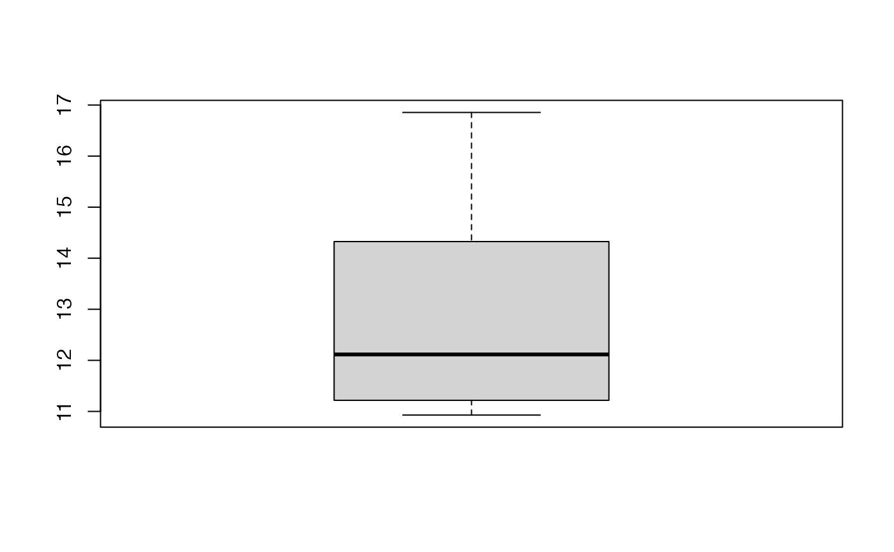
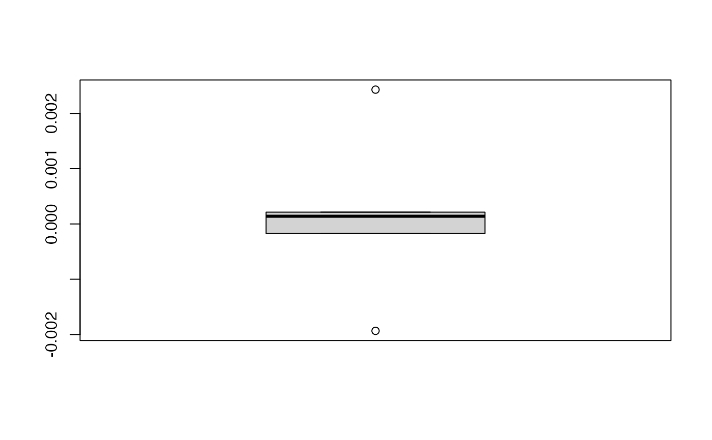
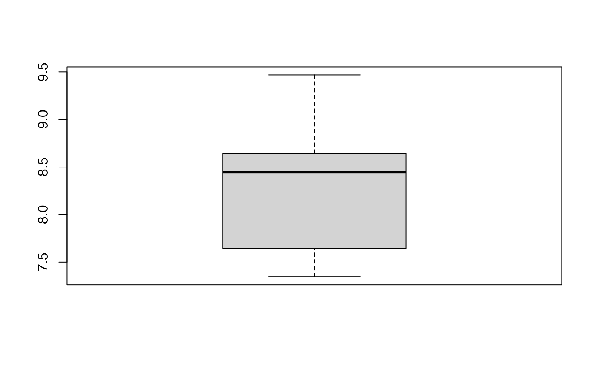
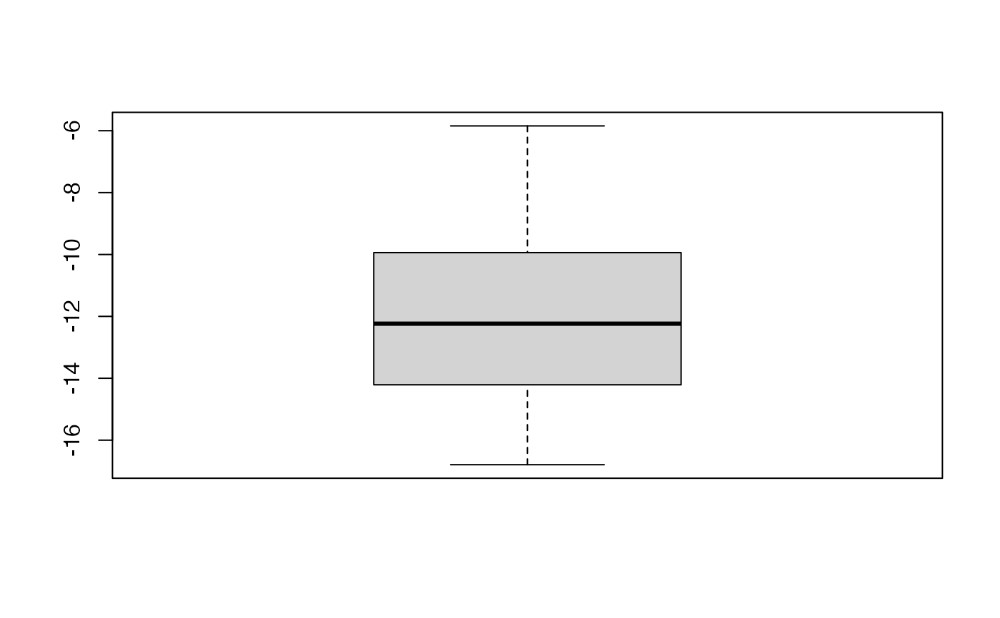
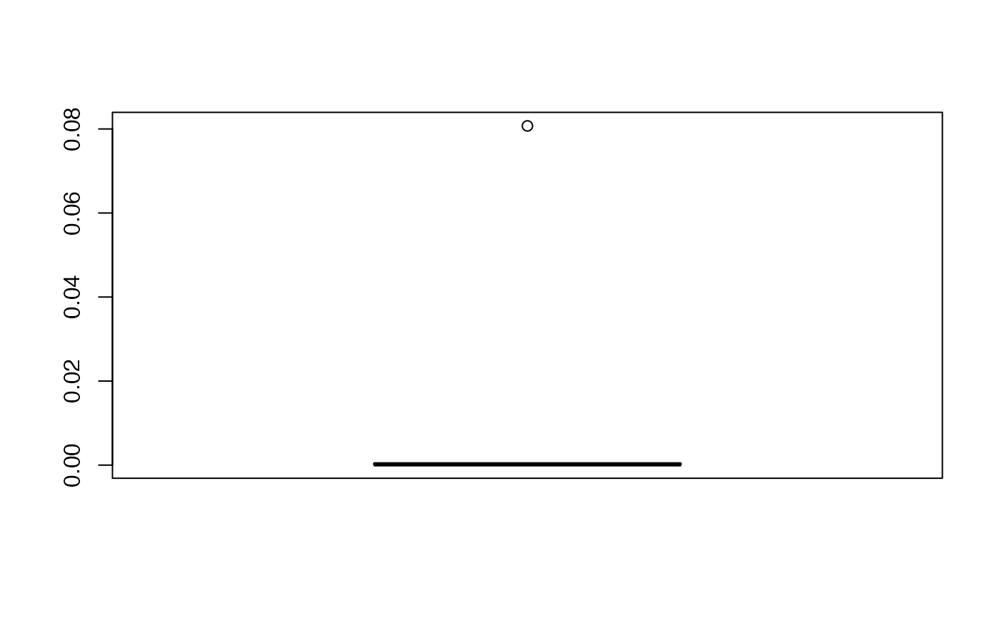

Partial least squares regression glm models with k-fold cross validation
cv.plsRglm.RdThis function implements k-fold cross-validation on complete or incomplete datasets for partial least squares regression generalized linear models
cv.plsRglm(x, …) # S3 method for default cv.plsRglmmodel(dataY,dataX,nt=2,limQ2set=.0975, modele="pls", family=NULL, K=5, NK=1, grouplist=NULL, random=TRUE, scaleX=TRUE, scaleY=NULL, keepcoeffs=FALSE, keepfolds=FALSE, keepdataY=TRUE, keepMclassed=FALSE, tol_Xi=10^(-12), weights, method, verbose=TRUE) # S3 method for formula cv.plsRglmmodel(formula,data=NULL,nt=2,limQ2set=.0975, modele="pls", family=NULL, K=5, NK=1, grouplist=NULL, random=TRUE, scaleX=TRUE, scaleY=NULL, keepcoeffs=FALSE, keepfolds=FALSE, keepdataY=TRUE, keepMclassed=FALSE, tol_Xi=10^(-12),weights,subset, start=NULL,etastart,mustart,offset,method,control= list(),contrasts=NULL, verbose=TRUE) PLS_glm_kfoldcv(dataY, dataX, nt = 2, limQ2set = 0.0975, modele = "pls", family = NULL, K = 5, NK = 1, grouplist = NULL, random = TRUE, scaleX = TRUE, scaleY = NULL, keepcoeffs = FALSE, keepfolds = FALSE, keepdataY = TRUE, keepMclassed=FALSE, tol_Xi = 10^(-12), weights, method, verbose=TRUE) PLS_glm_kfoldcv_formula(formula,data=NULL,nt=2,limQ2set=.0975,modele="pls", family=NULL, K=5, NK=1, grouplist=NULL, random=TRUE, scaleX=TRUE, scaleY=NULL, keepcoeffs=FALSE, keepfolds=FALSE, keepdataY=TRUE, keepMclassed=FALSE, tol_Xi=10^(-12),weights,subset,start=NULL,etastart, mustart,offset,method,control= list(),contrasts=NULL, verbose=TRUE)
Arguments
| x | a formula or a response (training) dataset |
|---|---|
| dataY | response (training) dataset |
| dataX | predictor(s) (training) dataset |
| formula | an object of class " |
| data | an optional data frame, list or environment (or object coercible by |
| nt | number of components to be extracted |
| limQ2set | limit value for the Q2 |
| modele | name of the PLS glm model to be fitted ( |
| family | a description of the error distribution and link function to be used in the model. This can be a character string naming a family function, a family function or the result of a call to a family function. (See |
| K | number of groups. Defaults to 5. |
| NK | number of times the group division is made |
| grouplist | to specify the members of the |
| random | should the |
| scaleX | scale the predictor(s) : must be set to TRUE for |
| scaleY | scale the response : Yes/No. Ignored since non always possible for glm responses. |
| keepcoeffs | shall the coefficients for each model be returned |
| keepfolds | shall the groups' composition be returned |
| keepdataY | shall the observed value of the response for each one of the predicted value be returned |
| keepMclassed | shall the number of miss classed be returned (unavailable) |
| tol_Xi | minimal value for Norm2(Xi) and \(\mathrm{det}(pp' \times pp)\) if there is any missing value in the |
| weights | an optional vector of 'prior weights' to be used in the fitting process. Should be |
| subset | an optional vector specifying a subset of observations to be used in the fitting process. |
| start | starting values for the parameters in the linear predictor. |
| etastart | starting values for the linear predictor. |
| mustart | starting values for the vector of means. |
| offset | this can be used to specify an a priori known component to be included in the linear predictor during fitting. This should be |
| method |
|
| control | a list of parameters for controlling the fitting process. For |
| contrasts | an optional list. See the |
| verbose | should info messages be displayed ? |
| … | arguments to pass to |
Details
Predicts 1 group with the K-1 other groups. Leave one out cross validation is thus obtained for K==nrow(dataX).
There are seven different predefined models with predefined link functions available :
"pls"ordinary pls models
"pls-glm-Gamma"glm gaussian with inverse link pls models
"pls-glm-gaussian"glm gaussian with identity link pls models
"pls-glm-inverse-gamma"glm binomial with square inverse link pls models
"pls-glm-logistic"glm binomial with logit link pls models
"pls-glm-poisson"glm poisson with log link pls models
"pls-glm-polr"glm polr with logit link pls models
Using the "family=" option and setting "modele=pls-glm-family" allows changing the family and link function the same way as for the glm function. As a consequence user-specified families can also be used.
- The
gaussianfamily accepts the links (as names)
identity,logandinverse.- The
binomialfamily accepts the links
logit,probit,cauchit, (corresponding to logistic, normal and Cauchy CDFs respectively)logandcloglog(complementary log-log).- The
Gammafamily accepts the links
inverse,identityandlog.- The
poissonfamily accepts the links
log,identity, andsqrt.- The
inverse.gaussianfamily accepts the links
1/mu^2,inverse,identityandlog.- The
quasifamily accepts the links
logit,probit,cloglog,identity,inverse,log,1/mu^2andsqrt.- The function
power can be used to create a power link function.
- …
arguments to pass to
cv.plsRglmmodel.defaultor tocv.plsRglmmodel.formula
A typical predictor has the form response ~ terms where response is the (numeric) response vector and terms is a series of terms which specifies a linear predictor for response. A terms specification of the form first + second indicates all the terms in first together with all the terms in second with any duplicates removed.
A specification of the form first:second indicates the the set of terms obtained by taking the interactions of all terms in first with all terms in second. The specification first*second indicates the cross of first and second. This is the same as first + second + first:second.
The terms in the formula will be re-ordered so that main effects come first, followed by the interactions, all second-order, all third-order and so on: to avoid this pass a terms object as the formula.
Non-NULL weights can be used to indicate that different observations have different dispersions (with the values in weights being inversely proportional to the dispersions); or equivalently, when the elements of weights are positive integers w_i, that each response y_i is the mean of w_i unit-weight observations.
Value
An object of class "cv.plsRglmmodel".
list of NK. Each element of the list sums up the results for a group division:
list of
Kmatrices of size aboutnrow(dataX)/K * ntwith the predicted values for a growing number of components- …
…
list of
Kmatrices of size aboutnrow(dataX)/K * ntwith the predicted values for a growing number of components
list of NK. Each element of the list sums up the informations for a group division:
list of
Kvectors of length aboutnrow(dataX)with the numbers of the rows ofdataXthat were used as a training set- …
…
list of
Kvectors of length aboutnrow(dataX)with the numbers of the rows ofdataXthat were used as a training set
list of NK. Each element of the list sums up the results for a group division:
list of
Kmatrices of size aboutnrow(dataX)/K * 1with the observed values of the response- …
…
list of
Kmatrices of size aboutnrow(dataX)/K * 1with the observed values of the response
the call of the function
References
Nicolas Meyer, Myriam Maumy-Bertrand et Frederic Bertrand (2010). Comparing the linear and the logistic PLS regression with qualitative predictors: application to allelotyping data. Journal de la Societe Francaise de Statistique, 151(2), pages 1-18.
Note
Work for complete and incomplete datasets.
See also
Summary method summary.cv.plsRglmmodel. kfolds2coeff, kfolds2Pressind, kfolds2Press, kfolds2Mclassedind, kfolds2Mclassed and summary to extract and transform results from k-fold cross validation.
Examples
#> #> Model: pls #> #> NK: 1 #> Number of groups : 5 #> 1 #> ____************************************************____ #> #> Model: pls #> #> ____Predicting X without NA neither in X nor in Y____ #> ____Component____ 1 ____ #> ____Component____ 2 ____ #> ____Component____ 3 ____ #> ____Component____ 4 ____ #> ____Component____ 5 ____ #> ____Component____ 6 ____ #> Warning : 1 2 3 4 5 6 7 < 10^{-12} #> Warning only 6 components could thus be extracted #> ****________________________________________________**** #> #> 2 #> ____************************************************____ #> #> Model: pls #> #> ____Predicting X without NA neither in X nor in Y____ #> ____Component____ 1 ____ #> ____Component____ 2 ____ #> ____Component____ 3 ____ #> ____Component____ 4 ____ #> ____Component____ 5 ____ #> ____Component____ 6 ____ #> Warning : 1 2 3 4 5 6 7 < 10^{-12} #> Warning only 6 components could thus be extracted #> ****________________________________________________**** #> #> 3 #> ____************************************************____ #> #> Model: pls #> #> ____Predicting X without NA neither in X nor in Y____ #> ____Component____ 1 ____ #> ____Component____ 2 ____ #> ____Component____ 3 ____ #> ____Component____ 4 ____ #> ____Component____ 5 ____ #> Warning : 1 2 3 4 5 6 7 < 10^{-12} #> Warning only 5 components could thus be extracted #> ****________________________________________________**** #> #> 4 #> ____************************************************____ #> #> Model: pls #> #> ____Predicting X without NA neither in X nor in Y____ #> ____Component____ 1 ____ #> ____Component____ 2 ____ #> ____Component____ 3 ____ #> ____Component____ 4 ____ #> ____Component____ 5 ____ #> ____Component____ 6 ____ #> Warning : 1 2 3 4 5 6 7 < 10^{-12} #> Warning only 6 components could thus be extracted #> ****________________________________________________**** #> #> 5 #> ____************************************************____ #> #> Model: pls #> #> ____Predicting X without NA neither in X nor in Y____ #> ____Component____ 1 ____ #> ____Component____ 2 ____ #> ____Component____ 3 ____ #> ____Component____ 4 ____ #> ____Component____ 5 ____ #> ____Component____ 6 ____ #> Warning : 1 2 3 4 5 6 7 < 10^{-12} #> Warning only 6 components could thus be extracted #> ****________________________________________________**** #>#> ____************************************************____ #> #> Model: pls #> #> ____Component____ 1 ____ #> ____Component____ 2 ____ #> ____Component____ 3 ____ #> ____Component____ 4 ____ #> ____Component____ 5 ____ #> ____Component____ 6 ____ #> Warning : 1 2 3 4 5 6 7 < 10^{-12} #> Warning only 6 components could thus be extracted #> ____Predicting X without NA neither in X or Y____ #> ****________________________________________________**** #> #> #> NK: 1#> [[1]] #> AIC Q2cum_Y LimQ2_Y Q2_Y PRESS_Y RSS_Y R2_Y #> Nb_Comp_0 82.01205 NA NA NA NA 467.796667 NA #> Nb_Comp_1 53.15173 0.87657680 0.0975 0.8765768 57.73696 35.742486 0.9235940 #> Nb_Comp_2 41.08283 0.91299767 0.0975 0.2950893 25.19526 11.066606 0.9763431 #> Nb_Comp_3 32.06411 0.84783265 0.0975 -0.7490032 19.35553 4.418081 0.9905556 #> Nb_Comp_4 33.76477 0.06323026 0.0975 -5.1561808 27.19851 4.309235 0.9907882 #> Nb_Comp_5 33.34373 -5.70170241 0.0975 -6.1540552 30.82851 3.521924 0.9924713 #> Nb_Comp_6 35.25533 NA 0.0975 NA NA 3.496074 0.9925265 #> AIC.std DoF.dof sigmahat.dof AIC.dof BIC.dof GMDL.dof #> Nb_Comp_0 37.010388 1.000000 6.5212706 46.0708838 47.7893514 27.59461 #> Nb_Comp_1 8.150064 2.740749 1.8665281 4.5699686 4.9558156 21.34020 #> Nb_Comp_2 -3.918831 5.085967 1.1825195 2.1075461 2.3949331 27.40202 #> Nb_Comp_3 -12.937550 5.121086 0.7488308 0.8467795 0.9628191 24.40842 #> Nb_Comp_4 -11.236891 5.103312 0.7387162 0.8232505 0.9357846 24.23105 #> Nb_Comp_5 -11.657929 6.006316 0.7096382 0.7976101 0.9198348 28.21184 #> Nb_Comp_6 -9.746328 7.000002 0.7633343 0.9711322 1.1359501 33.18348 #> DoF.naive sigmahat.naive AIC.naive BIC.naive GMDL.naive #> Nb_Comp_0 1 6.5212706 46.0708838 47.7893514 27.59461 #> Nb_Comp_1 2 1.8905683 4.1699567 4.4588195 18.37545 #> Nb_Comp_2 3 1.1088836 1.5370286 1.6860917 17.71117 #> Nb_Comp_3 4 0.7431421 0.7363469 0.8256118 19.01033 #> Nb_Comp_4 5 0.7846050 0.8721072 0.9964867 24.16510 #> Nb_Comp_5 6 0.7661509 0.8804809 1.0227979 28.64206 #> Nb_Comp_6 7 0.8361907 1.1070902 1.3048716 33.63927 #> #> attr(,"class") #> [1] "summary.cv.plsRmodel"cvtable(sum1)#> #> CV Q2 criterion: #> 0 1 2 #> 0 0 1 #> #> CV Press criterion: #> 1 2 3 #> 0 0 1bbb2 <- cv.plsRglm(Y~.,data=Cornell,nt=3, modele="pls-glm-family",family=gaussian(),K=12,verbose=FALSE) (sum2<-summary(bbb2))#> ____************************************************____ #> #> Family: gaussian #> Link function: identity #> #> ____Component____ 1 ____ #> ____Component____ 2 ____ #> ____Component____ 3 ____ #> ____Predicting X without NA neither in X or Y____ #> ****________________________________________________**** #> #> #> NK: 1#> [[1]] #> AIC BIC Q2Chisqcum_Y limQ2 Q2Chisq_Y PREChi2_Pearson_Y #> Nb_Comp_0 82.01205 82.98186 NA NA NA NA #> Nb_Comp_1 53.15173 54.60645 0.8809146 0.0975 0.8809146 55.70774 #> Nb_Comp_2 31.46903 33.40866 0.9182731 0.0975 0.3137113 24.52966 #> Nb_Comp_3 31.54404 33.96857 0.6570253 0.0975 -3.1965930 20.84377 #> Chi2_Pearson_Y RSS_Y R2_Y #> Nb_Comp_0 467.796667 467.796667 NA #> Nb_Comp_1 35.742486 35.742486 0.9235940 #> Nb_Comp_2 4.966831 4.966831 0.9893825 #> Nb_Comp_3 4.230693 4.230693 0.9909561 #> #> attr(,"class") #> [1] "summary.cv.plsRglmmodel"cvtable(sum2)#> #> CV Q2Chi2 criterion: #> 0 1 2 #> 0 0 1 #> #> CV PreChi2 criterion: #> 1 2 3 #> 0 0 1#random=TRUE is the default to randomly create folds for repeated CV bbb3 <- cv.plsRglm(Y~.,data=Cornell,nt=3, modele="pls-glm-family",family=gaussian(),K=6,NK=10, verbose=FALSE) (sum3<-summary(bbb3))#> ____************************************************____ #> #> Family: gaussian #> Link function: identity #> #> ____Component____ 1 ____ #> ____Component____ 2 ____ #> ____Component____ 3 ____ #> ____Predicting X without NA neither in X or Y____ #> ****________________________________________________**** #> #> #> NK: 1, 2, 3, 4, 5, 6, 7, 8, 9, 10#> [[1]] #> AIC BIC Q2Chisqcum_Y limQ2 Q2Chisq_Y PREChi2_Pearson_Y #> Nb_Comp_0 82.01205 82.98186 NA NA NA NA #> Nb_Comp_1 53.15173 54.60645 0.9008739 0.0975 0.9008739 46.37086 #> Nb_Comp_2 31.46903 33.40866 0.9645563 0.0975 0.6424379 12.78016 #> Nb_Comp_3 31.54404 33.96857 0.8683343 0.0975 -2.7147802 18.45068 #> Chi2_Pearson_Y RSS_Y R2_Y #> Nb_Comp_0 467.796667 467.796667 NA #> Nb_Comp_1 35.742486 35.742486 0.9235940 #> Nb_Comp_2 4.966831 4.966831 0.9893825 #> Nb_Comp_3 4.230693 4.230693 0.9909561 #> #> [[2]] #> AIC BIC Q2Chisqcum_Y limQ2 Q2Chisq_Y PREChi2_Pearson_Y #> Nb_Comp_0 82.01205 82.98186 NA NA NA NA #> Nb_Comp_1 53.15173 54.60645 0.8947357 0.0975 0.8947357 49.24228 #> Nb_Comp_2 31.46903 33.40866 0.8701779 0.0975 -0.2332969 44.08110 #> Nb_Comp_3 31.54404 33.96857 0.3086217 0.0975 -4.3255823 26.45127 #> Chi2_Pearson_Y RSS_Y R2_Y #> Nb_Comp_0 467.796667 467.796667 NA #> Nb_Comp_1 35.742486 35.742486 0.9235940 #> Nb_Comp_2 4.966831 4.966831 0.9893825 #> Nb_Comp_3 4.230693 4.230693 0.9909561 #> #> [[3]] #> AIC BIC Q2Chisqcum_Y limQ2 Q2Chisq_Y PREChi2_Pearson_Y #> Nb_Comp_0 82.01205 82.98186 NA NA NA NA #> Nb_Comp_1 53.15173 54.60645 0.8593652 0.0975 0.85936521 65.78848 #> Nb_Comp_2 31.46903 33.40866 0.8493314 0.0975 -0.07134685 38.29260 #> Nb_Comp_3 31.54404 33.96857 0.4861617 0.0975 -2.41038639 16.93881 #> Chi2_Pearson_Y RSS_Y R2_Y #> Nb_Comp_0 467.796667 467.796667 NA #> Nb_Comp_1 35.742486 35.742486 0.9235940 #> Nb_Comp_2 4.966831 4.966831 0.9893825 #> Nb_Comp_3 4.230693 4.230693 0.9909561 #> #> [[4]] #> AIC BIC Q2Chisqcum_Y limQ2 Q2Chisq_Y PREChi2_Pearson_Y #> Nb_Comp_0 82.01205 82.98186 NA NA NA NA #> Nb_Comp_1 53.15173 54.60645 0.8890367 0.0975 0.8890367 51.90828 #> Nb_Comp_2 31.46903 33.40866 0.9209146 0.0975 0.2872834 25.47426 #> Nb_Comp_3 31.54404 33.96857 0.6461470 0.0975 -3.4743144 22.22316 #> Chi2_Pearson_Y RSS_Y R2_Y #> Nb_Comp_0 467.796667 467.796667 NA #> Nb_Comp_1 35.742486 35.742486 0.9235940 #> Nb_Comp_2 4.966831 4.966831 0.9893825 #> Nb_Comp_3 4.230693 4.230693 0.9909561 #> #> [[5]] #> AIC BIC Q2Chisqcum_Y limQ2 Q2Chisq_Y PREChi2_Pearson_Y #> Nb_Comp_0 82.01205 82.98186 NA NA NA NA #> Nb_Comp_1 53.15173 54.60645 0.8735422 0.0975 0.8735422 59.15654 #> Nb_Comp_2 31.46903 33.40866 0.8919869 0.0975 0.1458568 30.52920 #> Nb_Comp_3 31.54404 33.96857 0.7303230 0.0975 -1.4967073 12.40072 #> Chi2_Pearson_Y RSS_Y R2_Y #> Nb_Comp_0 467.796667 467.796667 NA #> Nb_Comp_1 35.742486 35.742486 0.9235940 #> Nb_Comp_2 4.966831 4.966831 0.9893825 #> Nb_Comp_3 4.230693 4.230693 0.9909561 #> #> [[6]] #> AIC BIC Q2Chisqcum_Y limQ2 Q2Chisq_Y PREChi2_Pearson_Y #> Nb_Comp_0 82.01205 82.98186 NA NA NA NA #> Nb_Comp_1 53.15173 54.60645 0.8701160 0.0975 0.8701160 60.75928 #> Nb_Comp_2 31.46903 33.40866 0.8955284 0.0975 0.1956544 28.74931 #> Nb_Comp_3 31.54404 33.96857 0.6797508 0.0975 -2.0654188 15.22542 #> Chi2_Pearson_Y RSS_Y R2_Y #> Nb_Comp_0 467.796667 467.796667 NA #> Nb_Comp_1 35.742486 35.742486 0.9235940 #> Nb_Comp_2 4.966831 4.966831 0.9893825 #> Nb_Comp_3 4.230693 4.230693 0.9909561 #> #> [[7]] #> AIC BIC Q2Chisqcum_Y limQ2 Q2Chisq_Y PREChi2_Pearson_Y #> Nb_Comp_0 82.01205 82.98186 NA NA NA NA #> Nb_Comp_1 53.15173 54.60645 0.8982083 0.0975 0.8982083 47.61784 #> Nb_Comp_2 31.46903 33.40866 0.9193761 0.0975 0.2079527 28.30974 #> Nb_Comp_3 31.54404 33.96857 0.6752783 0.0975 -3.0276119 20.00447 #> Chi2_Pearson_Y RSS_Y R2_Y #> Nb_Comp_0 467.796667 467.796667 NA #> Nb_Comp_1 35.742486 35.742486 0.9235940 #> Nb_Comp_2 4.966831 4.966831 0.9893825 #> Nb_Comp_3 4.230693 4.230693 0.9909561 #> #> [[8]] #> AIC BIC Q2Chisqcum_Y limQ2 Q2Chisq_Y PREChi2_Pearson_Y #> Nb_Comp_0 82.01205 82.98186 NA NA NA NA #> Nb_Comp_1 53.15173 54.60645 0.8980143 0.0975 0.8980143 47.70857 #> Nb_Comp_2 31.46903 33.40866 0.9487892 0.0975 0.4978632 17.94762 #> Nb_Comp_3 31.54404 33.96857 0.8412170 0.0975 -2.1005786 15.40005 #> Chi2_Pearson_Y RSS_Y R2_Y #> Nb_Comp_0 467.796667 467.796667 NA #> Nb_Comp_1 35.742486 35.742486 0.9235940 #> Nb_Comp_2 4.966831 4.966831 0.9893825 #> Nb_Comp_3 4.230693 4.230693 0.9909561 #> #> [[9]] #> AIC BIC Q2Chisqcum_Y limQ2 Q2Chisq_Y PREChi2_Pearson_Y #> Nb_Comp_0 82.01205 82.98186 NA NA NA NA #> Nb_Comp_1 53.15173 54.60645 0.8591659 0.0975 0.8591659 65.88171 #> Nb_Comp_2 31.46903 33.40866 0.9133774 0.0975 0.3849314 21.98408 #> Nb_Comp_3 31.54404 33.96857 0.4746482 0.0975 -5.0648343 30.12301 #> Chi2_Pearson_Y RSS_Y R2_Y #> Nb_Comp_0 467.796667 467.796667 NA #> Nb_Comp_1 35.742486 35.742486 0.9235940 #> Nb_Comp_2 4.966831 4.966831 0.9893825 #> Nb_Comp_3 4.230693 4.230693 0.9909561 #> #> [[10]] #> AIC BIC Q2Chisqcum_Y limQ2 Q2Chisq_Y PREChi2_Pearson_Y #> Nb_Comp_0 82.01205 82.98186 NA NA NA NA #> Nb_Comp_1 53.15173 54.60645 0.8938320 0.0975 0.8938320 49.66502 #> Nb_Comp_2 31.46903 33.40866 0.9299555 0.0975 0.3402485 23.58116 #> Nb_Comp_3 31.54404 33.96857 0.7175896 0.0975 -3.0318725 20.02563 #> Chi2_Pearson_Y RSS_Y R2_Y #> Nb_Comp_0 467.796667 467.796667 NA #> Nb_Comp_1 35.742486 35.742486 0.9235940 #> Nb_Comp_2 4.966831 4.966831 0.9893825 #> Nb_Comp_3 4.230693 4.230693 0.9909561 #> #> attr(,"class") #> [1] "summary.cv.plsRglmmodel"#> #> CV Q2Chi2 criterion: #> 0 1 2 #> 0 2 8 #> #> CV PreChi2 criterion: #> 1 2 3 #> 0 2 8data(aze_compl) bbb <- cv.plsRglm(y~.,data=aze_compl,nt=10,K=10,modele="pls",keepcoeffs=TRUE, verbose=FALSE) #For Jackknife computations kfolds2coeff(bbb)#> [,1] [,2] [,3] [,4] [,5] [,6] #> [1,] 0.2789845 -0.11162433 0.4659322 -0.2189228 0.1962598 0.03382989 #> [2,] 0.1606451 -0.08862139 0.4115189 -0.1168627 0.4278831 -0.00783067 #> [3,] 0.4247579 -0.18611718 0.5009011 -0.1079419 0.2370432 0.14791927 #> [4,] 0.3954070 -0.15811919 0.5060379 -0.2173893 0.2305021 0.11829797 #> [5,] 0.3167315 -0.12197052 0.3290856 -0.1793147 0.2953811 0.10919487 #> [6,] 0.4840631 -0.13632761 0.4086438 -0.1777428 0.2289398 0.12275850 #> [7,] 0.1517789 -0.17092215 0.5117051 -0.2343334 0.3252347 0.13225804 #> [8,] 0.2102622 -0.12959576 0.5375614 -0.2122907 0.2626547 0.15956341 #> [9,] 0.3977167 -0.12120618 0.3852174 -0.2095686 0.2486720 0.18876216 #> [10,] 0.3248532 -0.12877965 0.5022350 -0.1862198 0.2797274 0.01263520 #> [,7] [,8] [,9] [,10] [,11] [,12] #> [1,] -0.053421743 -0.03750042 -0.05044162 0.033806166 -0.11764566 0.062864598 #> [2,] 0.001234529 0.01494001 -0.22594239 -0.015619077 -0.15201883 0.004474202 #> [3,] -0.009726434 -0.10629814 -0.31767831 0.058153697 -0.19843230 0.072421557 #> [4,] -0.096135675 -0.05291358 -0.23259353 -0.032585231 -0.05480137 0.059722086 #> [5,] -0.093748548 0.09665925 -0.15391840 -0.009797578 -0.09057614 0.054390210 #> [6,] -0.145885851 0.04654350 -0.25412743 0.010634079 -0.04481281 0.061544662 #> [7,] 0.023793174 -0.08723813 -0.26555785 0.085386644 -0.08395006 0.034973533 #> [8,] -0.030101551 -0.10315233 -0.21712445 0.032541244 -0.06729056 0.067306774 #> [9,] -0.070775309 0.12188087 -0.20124341 0.136513963 -0.04851401 0.062652752 #> [10,] -0.058568141 0.11455040 -0.21932392 0.104688124 -0.14446795 0.057631939 #> [,13] [,14] [,15] [,16] [,17] [,18] #> [1,] -0.02762288 0.10959207 0.17991349 0.056727481 0.072316734 0.2194261 #> [2,] -0.08196666 0.01554455 0.08648409 0.122154165 0.029320784 0.1884728 #> [3,] -0.14951946 0.12123791 0.09930685 0.283964341 -0.029173700 0.1766064 #> [4,] -0.13773324 0.07583984 0.10039980 0.009482319 0.012809706 0.2260720 #> [5,] -0.09570215 0.10623753 0.14639281 -0.019958481 0.002268014 0.2890981 #> [6,] -0.17250764 0.20142673 0.07282268 -0.015358190 -0.058243808 0.2431921 #> [7,] -0.19822619 0.12659630 0.08571281 0.046326683 0.097353665 0.2675488 #> [8,] -0.12799192 0.10143809 0.12700961 0.048407373 0.004161616 0.3081973 #> [9,] -0.14825621 0.06739847 0.12060474 0.065647894 0.006833119 0.2322790 #> [10,] -0.12346030 0.10612818 0.13071097 0.021981609 0.032909102 0.2100154 #> [,19] [,20] [,21] [,22] [,23] [,24] #> [1,] 0.013931213 0.09021454 -0.15683989 0.091202625 0.09446915 -0.1503967 #> [2,] -0.037679042 0.05938100 -0.10843774 -0.001360374 0.25345999 -0.1216468 #> [3,] -0.083153835 0.07574702 -0.14065468 0.122862978 0.11530352 -0.1376095 #> [4,] -0.026503373 0.15578107 -0.04134995 0.053842808 0.26751362 -0.1162535 #> [5,] 0.048903468 0.03828624 -0.08146908 0.034260344 0.15825846 -0.1178812 #> [6,] 0.026866237 0.07649955 -0.09642138 0.017699336 0.30041851 -0.1642259 #> [7,] 0.026414495 0.12759692 -0.10494284 0.112479673 0.19590844 -0.1279840 #> [8,] -0.002533056 0.02121357 -0.14387051 0.149596785 0.09533340 -0.1828071 #> [9,] 0.040103367 0.03520548 -0.26063263 0.066843985 0.17000491 -0.1468728 #> [10,] 0.105741812 0.05342059 -0.10351114 0.017687490 0.25353085 -0.1408187 #> [,25] [,26] [,27] [,28] [,29] [,30] #> [1,] -0.18253566 -0.2286976 0.14122461 0.1347160 -0.05541976 0.020053470 #> [2,] -0.20022445 -0.1252449 0.09376238 0.1486918 -0.07285060 -0.010919920 #> [3,] -0.19411207 -0.2883032 0.19367561 0.2758007 -0.11315061 0.009360925 #> [4,] -0.22975140 -0.3629313 0.24996351 0.2459123 -0.07837496 0.104780491 #> [5,] -0.13087672 -0.3229966 0.20889814 0.1721077 -0.12113390 -0.049916075 #> [6,] -0.21594878 -0.3565675 0.10946253 0.2375371 -0.08699198 0.003047694 #> [7,] -0.24656340 -0.2525599 0.14204398 0.1635384 -0.01287998 0.043659772 #> [8,] -0.09461557 -0.2679260 0.22767866 0.1426159 -0.15116703 0.013060427 #> [9,] -0.18490587 -0.3066124 0.23519467 0.1862150 -0.10668744 -0.025799712 #> [10,] -0.21179987 -0.2927063 0.20015259 0.1650643 -0.13571131 0.003452368 #> [,31] [,32] [,33] [,34] #> [1,] 0.07663114 -0.004133816 -0.4763637 0.05633380 #> [2,] 0.20692630 -0.040832867 -0.3166862 0.04421784 #> [3,] 0.15042500 -0.085182532 -0.3031226 -0.07209851 #> [4,] 0.02999001 -0.066057244 -0.4409974 0.01801687 #> [5,] 0.14198115 0.004086412 -0.4120518 -0.02845620 #> [6,] 0.03260813 0.086095749 -0.3853942 -0.07329682 #> [7,] 0.18328792 -0.125247834 -0.3413615 -0.02773064 #> [8,] 0.14720502 -0.097412733 -0.3632092 0.04890282 #> [9,] 0.09391251 -0.092991586 -0.3993328 -0.03040182 #> [10,] 0.07896029 -0.058449636 -0.3862088 -0.02647777bbb2 <- cv.plsRglm(y~.,data=aze_compl,nt=10,K=10,modele="pls-glm-family", family=binomial(probit),keepcoeffs=TRUE, verbose=FALSE)#> Warning: glm.fit: fitted probabilities numerically 0 or 1 occurred#> Warning: glm.fit: fitted probabilities numerically 0 or 1 occurred#> Warning: glm.fit: fitted probabilities numerically 0 or 1 occurred#> Warning: glm.fit: fitted probabilities numerically 0 or 1 occurred#> Warning: glm.fit: fitted probabilities numerically 0 or 1 occurred#> Warning: glm.fit: fitted probabilities numerically 0 or 1 occurred#> Warning: glm.fit: fitted probabilities numerically 0 or 1 occurred#> Warning: glm.fit: fitted probabilities numerically 0 or 1 occurred#> Warning: glm.fit: fitted probabilities numerically 0 or 1 occurred#> Warning: glm.fit: fitted probabilities numerically 0 or 1 occurred#> Warning: glm.fit: fitted probabilities numerically 0 or 1 occurred#> Warning: glm.fit: fitted probabilities numerically 0 or 1 occurred#> Warning: glm.fit: fitted probabilities numerically 0 or 1 occurred#> Warning: glm.fit: fitted probabilities numerically 0 or 1 occurred#> Warning: glm.fit: fitted probabilities numerically 0 or 1 occurred#> Warning: glm.fit: fitted probabilities numerically 0 or 1 occurred#> Warning: glm.fit: fitted probabilities numerically 0 or 1 occurred#> Warning: glm.fit: fitted probabilities numerically 0 or 1 occurred#> Warning: glm.fit: fitted probabilities numerically 0 or 1 occurred#> Warning: glm.fit: fitted probabilities numerically 0 or 1 occurred#> Warning: glm.fit: fitted probabilities numerically 0 or 1 occurred#> Warning: glm.fit: fitted probabilities numerically 0 or 1 occurred#> Warning: glm.fit: fitted probabilities numerically 0 or 1 occurred#> Warning: glm.fit: fitted probabilities numerically 0 or 1 occurred#> Warning: glm.fit: fitted probabilities numerically 0 or 1 occurred#> Warning: glm.fit: fitted probabilities numerically 0 or 1 occurred#> Warning: glm.fit: fitted probabilities numerically 0 or 1 occurred#> Warning: glm.fit: fitted probabilities numerically 0 or 1 occurred#> Warning: glm.fit: fitted probabilities numerically 0 or 1 occurred#> Warning: glm.fit: fitted probabilities numerically 0 or 1 occurred#> Warning: glm.fit: fitted probabilities numerically 0 or 1 occurred#> Warning: glm.fit: fitted probabilities numerically 0 or 1 occurred#> Warning: glm.fit: fitted probabilities numerically 0 or 1 occurred#> Warning: glm.fit: fitted probabilities numerically 0 or 1 occurred#> Warning: glm.fit: fitted probabilities numerically 0 or 1 occurred#> Warning: glm.fit: fitted probabilities numerically 0 or 1 occurred#> Warning: glm.fit: fitted probabilities numerically 0 or 1 occurred#> Warning: glm.fit: fitted probabilities numerically 0 or 1 occurred#> Warning: glm.fit: fitted probabilities numerically 0 or 1 occurred#> Warning: glm.fit: fitted probabilities numerically 0 or 1 occurred#> Warning: glm.fit: fitted probabilities numerically 0 or 1 occurred#> Warning: glm.fit: fitted probabilities numerically 0 or 1 occurred#> Warning: glm.fit: fitted probabilities numerically 0 or 1 occurred#> Warning: glm.fit: fitted probabilities numerically 0 or 1 occurred#> Warning: glm.fit: fitted probabilities numerically 0 or 1 occurred#> Warning: glm.fit: fitted probabilities numerically 0 or 1 occurred#> Warning: glm.fit: fitted probabilities numerically 0 or 1 occurred#> Warning: glm.fit: fitted probabilities numerically 0 or 1 occurred#> Warning: glm.fit: fitted probabilities numerically 0 or 1 occurred#> Warning: glm.fit: fitted probabilities numerically 0 or 1 occurred#> Warning: glm.fit: fitted probabilities numerically 0 or 1 occurred#> Warning: glm.fit: fitted probabilities numerically 0 or 1 occurred#> Warning: glm.fit: fitted probabilities numerically 0 or 1 occurred#> Warning: glm.fit: fitted probabilities numerically 0 or 1 occurred#> Warning: glm.fit: fitted probabilities numerically 0 or 1 occurred#> Warning: glm.fit: fitted probabilities numerically 0 or 1 occurred#> Warning: glm.fit: fitted probabilities numerically 0 or 1 occurred#> Warning: glm.fit: fitted probabilities numerically 0 or 1 occurred#> Warning: glm.fit: fitted probabilities numerically 0 or 1 occurred#> Warning: glm.fit: fitted probabilities numerically 0 or 1 occurred#> Warning: glm.fit: fitted probabilities numerically 0 or 1 occurred#> Warning: glm.fit: fitted probabilities numerically 0 or 1 occurred#> Warning: glm.fit: fitted probabilities numerically 0 or 1 occurred#> Warning: glm.fit: fitted probabilities numerically 0 or 1 occurred#> Warning: glm.fit: fitted probabilities numerically 0 or 1 occurred#> Warning: glm.fit: fitted probabilities numerically 0 or 1 occurred#> Warning: glm.fit: fitted probabilities numerically 0 or 1 occurred#> Warning: glm.fit: fitted probabilities numerically 0 or 1 occurred#> Warning: glm.fit: fitted probabilities numerically 0 or 1 occurred#> Warning: glm.fit: fitted probabilities numerically 0 or 1 occurred#> Warning: glm.fit: fitted probabilities numerically 0 or 1 occurred#> Warning: glm.fit: fitted probabilities numerically 0 or 1 occurred#> Warning: glm.fit: fitted probabilities numerically 0 or 1 occurred#> Warning: glm.fit: fitted probabilities numerically 0 or 1 occurred#> Warning: glm.fit: fitted probabilities numerically 0 or 1 occurred#> Warning: glm.fit: fitted probabilities numerically 0 or 1 occurred#> Warning: glm.fit: fitted probabilities numerically 0 or 1 occurred#> Warning: glm.fit: fitted probabilities numerically 0 or 1 occurred#> Warning: glm.fit: fitted probabilities numerically 0 or 1 occurred#> Warning: glm.fit: fitted probabilities numerically 0 or 1 occurred#> Warning: glm.fit: fitted probabilities numerically 0 or 1 occurred#> Warning: glm.fit: fitted probabilities numerically 0 or 1 occurred#> Warning: glm.fit: fitted probabilities numerically 0 or 1 occurred#> Warning: glm.fit: fitted probabilities numerically 0 or 1 occurred#> Warning: glm.fit: fitted probabilities numerically 0 or 1 occurred#> Warning: glm.fit: fitted probabilities numerically 0 or 1 occurred#> Warning: glm.fit: fitted probabilities numerically 0 or 1 occurred#> Warning: glm.fit: fitted probabilities numerically 0 or 1 occurred#> Warning: glm.fit: fitted probabilities numerically 0 or 1 occurred#> Warning: glm.fit: fitted probabilities numerically 0 or 1 occurred#> Warning: glm.fit: fitted probabilities numerically 0 or 1 occurred#> Warning: glm.fit: fitted probabilities numerically 0 or 1 occurred#> Warning: glm.fit: fitted probabilities numerically 0 or 1 occurred#> Warning: glm.fit: fitted probabilities numerically 0 or 1 occurred#> Warning: glm.fit: fitted probabilities numerically 0 or 1 occurred#> Warning: glm.fit: fitted probabilities numerically 0 or 1 occurred#> Warning: glm.fit: fitted probabilities numerically 0 or 1 occurred#> Warning: glm.fit: fitted probabilities numerically 0 or 1 occurred#> Warning: glm.fit: fitted probabilities numerically 0 or 1 occurred#> Warning: glm.fit: fitted probabilities numerically 0 or 1 occurred#> Warning: glm.fit: fitted probabilities numerically 0 or 1 occurred#> Warning: glm.fit: fitted probabilities numerically 0 or 1 occurred#> Warning: glm.fit: fitted probabilities numerically 0 or 1 occurred#> Warning: glm.fit: fitted probabilities numerically 0 or 1 occurred#> Warning: glm.fit: fitted probabilities numerically 0 or 1 occurred#> Warning: glm.fit: fitted probabilities numerically 0 or 1 occurred#> Warning: glm.fit: fitted probabilities numerically 0 or 1 occurred#> Warning: glm.fit: fitted probabilities numerically 0 or 1 occurred#> Warning: glm.fit: fitted probabilities numerically 0 or 1 occurred#> Warning: glm.fit: fitted probabilities numerically 0 or 1 occurred#> Warning: glm.fit: fitted probabilities numerically 0 or 1 occurred#> Warning: glm.fit: fitted probabilities numerically 0 or 1 occurredbbb2 <- cv.plsRglm(y~.,data=aze_compl,nt=10,K=10, modele="pls-glm-logistic",keepcoeffs=TRUE, verbose=FALSE) summary(bbb,MClassed=TRUE)#> ____************************************************____ #> #> Model: pls #> #> ____Component____ 1 ____ #> ____Component____ 2 ____ #> ____Component____ 3 ____ #> ____Component____ 4 ____ #> ____Component____ 5 ____ #> ____Component____ 6 ____ #> ____Component____ 7 ____ #> ____Component____ 8 ____ #> ____Component____ 9 ____ #> ____Component____ 10 ____ #> ____Predicting X without NA neither in X or Y____ #> ****________________________________________________**** #> #> #> NK: 1#> [[1]] #> AIC MissClassed CV_MissClassed Q2cum_Y LimQ2_Y Q2_Y #> Nb_Comp_0 154.6179 49 NA NA NA NA #> Nb_Comp_1 126.4083 27 40 -0.0784652 0.0975 -0.0784652 #> Nb_Comp_2 119.3375 25 51 -0.6131792 0.0975 -0.4958102 #> Nb_Comp_3 114.2313 27 47 -1.7436984 0.0975 -0.7008019 #> Nb_Comp_4 112.3463 23 44 -4.2225043 0.0975 -0.9034542 #> Nb_Comp_5 113.2362 22 47 -9.4329778 0.0975 -0.9976964 #> Nb_Comp_6 114.7620 21 45 -20.0753799 0.0975 -1.0200733 #> Nb_Comp_7 116.5264 20 45 -42.1013970 0.0975 -1.0451065 #> Nb_Comp_8 118.4601 20 43 -87.9474602 0.0975 -1.0636793 #> Nb_Comp_9 120.4452 19 43 -183.5358039 0.0975 -1.0746607 #> Nb_Comp_10 122.4395 19 43 -382.3279240 0.0975 -1.0772550 #> PRESS_Y RSS_Y R2_Y AIC.std DoF.dof sigmahat.dof AIC.dof #> Nb_Comp_0 NA 25.91346 NA 298.1344 1.00000 0.5015845 0.2540061 #> Nb_Comp_1 27.94677 19.38086 0.2520929 269.9248 22.55372 0.4848429 0.2883114 #> Nb_Comp_2 28.99009 17.76209 0.3145613 262.8540 27.31542 0.4781670 0.2908950 #> Nb_Comp_3 30.20979 16.58896 0.3598323 257.7478 30.52370 0.4719550 0.2902572 #> Nb_Comp_4 31.57633 15.98071 0.3833049 255.8628 34.00000 0.4744263 0.3008285 #> Nb_Comp_5 31.92460 15.81104 0.3898523 256.7527 34.00000 0.4719012 0.2976347 #> Nb_Comp_6 31.93946 15.73910 0.3926285 258.2785 34.00000 0.4708264 0.2962804 #> Nb_Comp_7 32.18813 15.70350 0.3940024 260.0429 33.71066 0.4693382 0.2937976 #> Nb_Comp_8 32.40698 15.69348 0.3943888 261.9766 34.00000 0.4701436 0.2954217 #> Nb_Comp_9 32.55865 15.69123 0.3944758 263.9617 33.87284 0.4696894 0.2945815 #> Nb_Comp_10 32.59468 15.69037 0.3945088 265.9560 34.00000 0.4700970 0.2953632 #> BIC.dof GMDL.dof DoF.naive sigmahat.naive AIC.naive BIC.naive #> Nb_Comp_0 0.2604032 -67.17645 1 0.5015845 0.2540061 0.2604032 #> Nb_Comp_1 0.4231184 -53.56607 2 0.4358996 0.1936625 0.2033251 #> Nb_Comp_2 0.4496983 -52.42272 3 0.4193593 0.1809352 0.1943501 #> Nb_Comp_3 0.4631316 -51.93343 4 0.4072955 0.1722700 0.1891422 #> Nb_Comp_4 0.4954133 -50.37079 5 0.4017727 0.1691819 0.1897041 #> Nb_Comp_5 0.4901536 -50.65724 6 0.4016679 0.1706451 0.1952588 #> Nb_Comp_6 0.4879234 -50.78005 7 0.4028135 0.1731800 0.2020601 #> Nb_Comp_7 0.4826103 -51.05525 8 0.4044479 0.1761610 0.2094352 #> Nb_Comp_8 0.4865092 -50.85833 9 0.4064413 0.1794902 0.2172936 #> Nb_Comp_9 0.4845867 -50.95616 10 0.4085682 0.1829787 0.2254232 #> Nb_Comp_10 0.4864128 -50.86368 11 0.4107477 0.1865584 0.2337468 #> GMDL.naive #> Nb_Comp_0 -67.17645 #> Nb_Comp_1 -79.67755 #> Nb_Comp_2 -81.93501 #> Nb_Comp_3 -83.31503 #> Nb_Comp_4 -83.23369 #> Nb_Comp_5 -81.93513 #> Nb_Comp_6 -80.42345 #> Nb_Comp_7 -78.87607 #> Nb_Comp_8 -77.31942 #> Nb_Comp_9 -75.80069 #> Nb_Comp_10 -74.33325 #> #> attr(,"class") #> [1] "summary.cv.plsRmodel"#> ____************************************************____ #> #> Family: binomial #> Link function: logit #> #> ____Component____ 1 ____ #> ____Component____ 2 ____ #> ____Component____ 3 ____ #> ____Component____ 4 ____ #> ____Component____ 5 ____ #> ____Component____ 6 ____ #> ____Component____ 7 ____ #> ____Component____ 8 ____ #> ____Component____ 9 ____ #> ____Component____ 10 ____ #> ____Predicting X without NA neither in X or Y____ #> ****________________________________________________**** #> #> #> NK: 1#> [[1]] #> AIC BIC MissClassed CV_MissClassed Q2Chisqcum_Y limQ2 #> Nb_Comp_0 145.8283 148.4727 49 NA NA NA #> Nb_Comp_1 118.1398 123.4285 28 45 -1.023045e+00 0.0975 #> Nb_Comp_2 109.9553 117.8885 26 46 -7.929270e+00 0.0975 #> Nb_Comp_3 105.1591 115.7366 22 45 -8.519824e+02 0.0975 #> Nb_Comp_4 103.8382 117.0601 21 48 -5.252489e+05 0.0975 #> Nb_Comp_5 104.7338 120.6001 21 47 -8.319325e+08 0.0975 #> Nb_Comp_6 105.6770 124.1878 21 48 -2.836727e+12 0.0975 #> Nb_Comp_7 107.2828 128.4380 20 50 -1.029670e+16 0.0975 #> Nb_Comp_8 109.0172 132.8167 22 49 -3.137514e+19 0.0975 #> Nb_Comp_9 110.9354 137.3793 21 49 -9.018435e+22 0.0975 #> Nb_Comp_10 112.9021 141.9904 20 49 -3.004603e+26 0.0975 #> Q2Chisq_Y PREChi2_Pearson_Y Chi2_Pearson_Y RSS_Y R2_Y #> Nb_Comp_0 NA NA 104.00000 25.91346 NA #> Nb_Comp_1 -1.023045 210.3966 100.53823 19.32272 0.2543365 #> Nb_Comp_2 -3.413778 443.7534 99.17955 17.33735 0.3309519 #> Nb_Comp_3 -94.526564 9474.2820 123.37836 15.58198 0.3986915 #> Nb_Comp_4 -614.780397 75973.9742 114.77551 15.14046 0.4157299 #> Nb_Comp_5 -1582.879558 181790.5841 105.35382 15.08411 0.4179043 #> Nb_Comp_6 -3408.804332 359235.9030 98.87767 14.93200 0.4237744 #> Nb_Comp_7 -3628.783209 358904.5055 97.04072 14.87506 0.4259715 #> Nb_Comp_8 -3046.105160 295693.2722 98.90110 14.84925 0.4269676 #> Nb_Comp_9 -2873.388625 284280.1950 100.35563 14.84317 0.4272022 #> Nb_Comp_10 -3330.623125 334347.1360 102.85214 14.79133 0.4292027 #> #> attr(,"class") #> [1] "summary.cv.plsRglmmodel"kfolds2coeff(bbb2)#> [,1] [,2] [,3] [,4] [,5] [,6] [,7] #> [1,] -3.9662355 -2.0585344 3.818052 -2.556305 2.915067 1.3946475 1.58525005 #> [2,] -3.3118195 -0.7930596 6.285260 -3.054088 3.139371 -1.2641577 0.34796952 #> [3,] -2.2512115 -2.2109394 3.401754 -2.330452 2.054569 0.9209255 -0.33665835 #> [4,] -0.6565749 -0.8605086 5.751440 -3.285709 3.916102 0.6634303 -0.45334829 #> [5,] -2.4776772 -1.0487397 2.958071 -1.289485 1.850858 0.5416685 -0.60523872 #> [6,] -2.3602592 -1.1772894 2.949934 -1.338947 2.284194 0.9713418 -0.68869090 #> [7,] -2.0344244 -1.0458080 3.522226 -1.310957 2.384813 0.8466926 -0.14341200 #> [8,] -2.9830711 -0.7292545 3.836963 -1.587621 1.891902 0.1435578 -0.52992489 #> [9,] -3.5041592 -1.0055292 5.807380 -2.282322 2.144353 0.3637017 -0.03151605 #> [10,] -1.1770687 -1.5079427 3.847380 -2.258539 2.608004 0.7454358 0.25367738 #> [,8] [,9] [,10] [,11] [,12] [,13] #> [1,] -1.2187548 -1.9578708 0.44344480 -1.1342296 0.4656306 -1.70457402 #> [2,] 1.1303914 -0.7365339 1.31967942 -2.4123752 1.3131490 -1.15409604 #> [3,] -0.2506077 -1.0920831 0.54471375 -1.3946782 0.8329492 -0.19874729 #> [4,] -0.2021940 -2.8309396 0.52123579 -1.4498297 1.2017777 -1.49874402 #> [5,] 0.6092221 -1.4004044 1.10583114 -0.3244528 0.6508747 -1.19613066 #> [6,] -0.3685189 -2.3110701 0.01060004 -0.9214151 0.5643329 -1.06974933 #> [7,] -0.4738277 -1.7242938 0.61121408 -0.8019910 0.4539874 -1.68711966 #> [8,] 0.1071365 -1.1146643 0.13008849 -0.0994629 0.1974813 -1.19913505 #> [9,] -2.3831727 -0.5679555 0.30339488 -0.3201346 0.5410160 -0.08908464 #> [10,] -0.3486772 -1.6594244 -0.24290228 -0.7286022 0.9882262 -0.72425010 #> [,14] [,15] [,16] [,17] [,18] [,19] #> [1,] 0.8703602 0.9952924 1.3910979 1.52851479 2.325585 0.84083401 #> [2,] -0.1807030 2.4738822 -0.3622909 1.46616038 3.178782 1.73208185 #> [3,] 0.6241472 1.6327596 0.8743655 0.09184783 1.978644 -0.01450187 #> [4,] 2.4542793 0.3891337 0.2966665 0.75813051 1.864561 -1.46188284 #> [5,] 0.8983892 0.6088023 1.0094603 0.81989512 1.054961 -0.26825720 #> [6,] 0.8907937 0.7761535 0.1457146 0.10249000 1.791836 -0.92179885 #> [7,] 0.6698824 0.5932238 0.5102457 1.06209583 1.448075 -0.33247870 #> [8,] 1.1963719 0.2982589 0.6369286 0.09920457 1.871218 0.04842874 #> [9,] 0.3910894 1.0523873 0.6554802 0.56715346 3.327109 -0.65133222 #> [10,] 0.2546390 0.6429972 0.5981167 0.65910272 2.130672 0.60442855 #> [,20] [,21] [,22] [,23] [,24] [,25] #> [1,] 0.2921176 -2.6478342 0.64507121 1.5452101 -0.5129923 -1.4540998 #> [2,] 0.8777164 -0.5292221 0.68177088 4.1367787 -2.6115691 -3.0974779 #> [3,] 0.4135718 -0.2247397 0.48018856 0.3006488 -1.5042382 -1.5271270 #> [4,] -0.1242464 -0.6070617 0.01697212 1.7024327 -2.6369659 -2.5766153 #> [5,] 0.3449099 -0.8672130 0.06727750 1.0396997 -1.1858541 -1.2762674 #> [6,] 1.4525259 -1.0844183 0.26434075 2.7625863 -1.2990737 -1.5526451 #> [7,] 0.4224631 -1.2335593 0.37079320 2.0437266 -1.2885428 -1.6447605 #> [8,] 0.7034812 -0.1518997 -0.14430646 1.5241447 -1.4113352 -1.4118867 #> [9,] 0.7895246 -1.7360488 1.79275279 -0.6617194 -1.1311752 -0.6408318 #> [10,] 0.6845194 -0.7900431 0.51214422 1.0597781 -0.9302051 -2.9370252 #> [,26] [,27] [,28] [,29] [,30] [,31] #> [1,] -2.3675026 2.213791 1.3972599 0.1149278 0.928909980 1.7512519 #> [2,] -4.4071069 2.735303 0.5406146 -1.5479124 -0.137600219 0.9091534 #> [3,] -2.1067133 1.703740 1.6823251 -0.6758281 0.599141780 2.9362283 #> [4,] -3.8161951 2.040647 3.8623062 -0.5576932 0.763091703 0.7403852 #> [5,] -1.8391843 1.494251 1.6519142 -1.1965548 0.173032767 1.3743042 #> [6,] -2.1140041 1.865733 1.5949216 0.2539211 0.163353608 1.1419394 #> [7,] -1.9901737 1.457729 1.4147593 -0.4968792 0.692767901 0.9425126 #> [8,] -1.9235007 1.051479 1.5773904 -0.1575800 0.570304725 1.3491842 #> [9,] -0.7551359 1.504262 0.5493683 -0.5209748 -0.006158958 0.2375621 #> [10,] -1.8341674 1.529879 1.3430667 -0.5587676 1.066056375 1.4327852 #> [,32] [,33] [,34] #> [1,] -0.57842120 -2.799219 -0.38542178 #> [2,] -0.89092456 -5.448134 0.19033028 #> [3,] -0.05702484 -4.341981 -0.25955267 #> [4,] -1.50116549 -4.751668 1.57443969 #> [5,] -0.22735772 -2.531359 0.42335967 #> [6,] 0.26773927 -2.444187 0.18557169 #> [7,] -0.19152589 -2.548477 0.09539171 #> [8,] -0.21656128 -2.680230 -0.19056863 #> [9,] -0.04943762 -3.333843 0.11804242 #> [10,] -0.53149893 -3.224879 -0.51159662kfolds2Chisqind(bbb2)#> [[1]] #> [[1]][[1]] #> [1] 23.53678 20.51294 17.57876 32.37905 43.29499 48.42170 106.48748 #> [8] 160.98295 217.87498 214.33256 #> #> [[1]][[2]] #> [1] 49.1984 180.1188 8442.1384 73944.7985 176965.2827 350190.6154 #> [7] 345165.6571 278031.0435 266848.0643 318345.4920 #> #> [[1]][[3]] #> [1] 23.89208 65.13262 413.42211 640.12973 597.83989 791.63349 #> [7] 1042.60870 1041.61739 756.97601 728.99271 #> #> [[1]][[4]] #> [1] 31.17879 37.01831 119.03349 301.04111 498.59435 785.17542 #> [7] 1226.58662 2172.20465 2812.29244 2493.57854 #> #> [[1]][[5]] #> [1] 16.66124 13.05419 19.62506 24.68397 30.12930 32.31546 30.59561 28.56692 #> [9] 25.87911 25.35350 #> #> [[1]][[6]] #> [1] 18.64120 26.43111 72.33131 79.59383 130.66708 140.37564 129.48662 #> [8] 107.70281 98.78782 99.70494 #> #> [[1]][[7]] #> [1] 7.360240 7.950888 10.244153 15.428891 20.593017 25.824262 32.416382 #> [8] 41.527018 43.372956 43.064105 #> #> [[1]][[8]] #> [1] 15.76887 11.82543 22.54731 30.76691 40.76998 62.37143 58.88621 50.82371 #> [9] 44.14582 41.78802 #> #> [[1]][[9]] #> [1] 17.67333 73.18849 341.47599 876.79914 3429.55689 7130.35943 #> [7] 11064.51533 14011.76090 13381.59744 12302.65934 #> #> [[1]][[10]] #> [1] 6.485703 8.520693 15.885463 28.352982 33.855924 28.810732 47.265482 #> [8] 47.042320 51.204171 52.170258 #> #>kfolds2Chisq(bbb2)#> [[1]] #> [1] 210.3966 443.7534 9474.2820 75973.9742 181790.5841 359235.9030 #> [7] 358904.5055 295693.2722 284280.1950 334347.1360 #>summary(bbb2)#> ____************************************************____ #> #> Family: binomial #> Link function: logit #> #> ____Component____ 1 ____ #> ____Component____ 2 ____ #> ____Component____ 3 ____ #> ____Component____ 4 ____ #> ____Component____ 5 ____ #> ____Component____ 6 ____ #> ____Component____ 7 ____ #> ____Component____ 8 ____ #> ____Component____ 9 ____ #> ____Component____ 10 ____ #> ____Predicting X without NA neither in X or Y____ #> ****________________________________________________**** #> #> #> NK: 1#> [[1]] #> AIC BIC Q2Chisqcum_Y limQ2 Q2Chisq_Y #> Nb_Comp_0 145.8283 148.4727 NA NA NA #> Nb_Comp_1 118.1398 123.4285 -1.023045e+00 0.0975 -1.023045 #> Nb_Comp_2 109.9553 117.8885 -7.929270e+00 0.0975 -3.413778 #> Nb_Comp_3 105.1591 115.7366 -8.519824e+02 0.0975 -94.526564 #> Nb_Comp_4 103.8382 117.0601 -5.252489e+05 0.0975 -614.780397 #> Nb_Comp_5 104.7338 120.6001 -8.319325e+08 0.0975 -1582.879558 #> Nb_Comp_6 105.6770 124.1878 -2.836727e+12 0.0975 -3408.804332 #> Nb_Comp_7 107.2828 128.4380 -1.029670e+16 0.0975 -3628.783209 #> Nb_Comp_8 109.0172 132.8167 -3.137514e+19 0.0975 -3046.105160 #> Nb_Comp_9 110.9354 137.3793 -9.018435e+22 0.0975 -2873.388625 #> Nb_Comp_10 112.9021 141.9904 -3.004603e+26 0.0975 -3330.623125 #> PREChi2_Pearson_Y Chi2_Pearson_Y RSS_Y R2_Y #> Nb_Comp_0 NA 104.00000 25.91346 NA #> Nb_Comp_1 210.3966 100.53823 19.32272 0.2543365 #> Nb_Comp_2 443.7534 99.17955 17.33735 0.3309519 #> Nb_Comp_3 9474.2820 123.37836 15.58198 0.3986915 #> Nb_Comp_4 75973.9742 114.77551 15.14046 0.4157299 #> Nb_Comp_5 181790.5841 105.35382 15.08411 0.4179043 #> Nb_Comp_6 359235.9030 98.87767 14.93200 0.4237744 #> Nb_Comp_7 358904.5055 97.04072 14.87506 0.4259715 #> Nb_Comp_8 295693.2722 98.90110 14.84925 0.4269676 #> Nb_Comp_9 284280.1950 100.35563 14.84317 0.4272022 #> Nb_Comp_10 334347.1360 102.85214 14.79133 0.4292027 #> #> attr(,"class") #> [1] "summary.cv.plsRglmmodel"rm(list=c("bbb","bbb2")) data(pine) Xpine<-pine[,1:10] ypine<-pine[,11] bbb <- cv.plsRglm(round(x11)~.,data=pine,nt=10,modele="pls-glm-family", family=poisson(log),K=10,keepcoeffs=TRUE,keepfolds=FALSE,verbose=FALSE) bbb <- cv.plsRglm(round(x11)~.,data=pine,nt=10, modele="pls-glm-poisson",K=10,keepcoeffs=TRUE,keepfolds=FALSE,verbose=FALSE) #For Jackknife computations kfolds2coeff(bbb)#> [,1] [,2] [,3] [,4] [,5] [,6] #> [1,] 16.11287 -0.006335012 -0.09622913 0.31435487 -2.070105 0.4184560 #> [2,] 12.07132 -0.005347501 -0.05456045 0.22589191 -1.077022 0.3030536 #> [3,] 12.91397 -0.004334748 -0.09464810 0.21687210 -2.366996 0.4282398 #> [4,] 13.74739 -0.005206026 -0.07047833 0.19440160 -1.364395 0.2591739 #> [5,] 15.42646 -0.006274491 -0.07811168 0.24916237 -1.819464 0.3344436 #> [6,] 14.10520 -0.005191657 -0.06006382 0.26334213 -1.945275 0.3344576 #> [7,] 10.97947 -0.005749739 -0.04948559 0.05299382 -1.537492 0.2960447 #> [8,] 11.20239 -0.004435079 -0.07140100 0.14764337 -1.415928 0.2907155 #> [9,] 10.32527 -0.004034301 -0.05565924 0.13819364 -1.528222 0.3099392 #> [10,] 12.43127 -0.004974666 -0.07404068 0.19042473 -1.654766 0.3168837 #> [,7] [,8] [,9] [,10] [,11] #> [1,] -3.9808435 0.5053234976 0.33474923 -1.094906 -0.606149630 #> [2,] -2.3470708 -0.0957122445 -0.03630909 -1.087086 0.068986875 #> [3,] -2.6444336 0.1140044031 0.37879700 -1.040793 -0.152656585 #> [4,] -1.8655841 -0.5428003995 0.21614972 -1.651443 0.005276063 #> [5,] -2.5927188 0.0820889457 0.30681039 -1.448048 -0.413131146 #> [6,] -3.3064089 0.7169329916 0.36934634 -1.123070 -0.938405227 #> [7,] -0.5957083 0.1528455883 0.23996277 -1.056799 -0.058451373 #> [8,] -1.3384127 -0.1757217743 0.10369652 -1.149199 0.106329639 #> [9,] -1.1634692 0.0006856604 0.08235944 -1.198460 0.075008191 #> [10,] -2.0952243 0.2137068194 0.27430935 -1.246232 -0.267461127kfolds2Chisqind(bbb)#> [[1]] #> [[1]][[1]] #> [1] 8.928962 12.395769 13.582193 12.742780 14.220477 20.141021 25.499453 #> [8] 26.804193 27.062020 27.060221 #> #> [[1]][[2]] #> [1] 2.107093 2.949894 3.549388 4.197294 4.025956 4.116603 3.740481 3.332737 #> [9] 3.391366 3.398969 #> #> [[1]][[3]] #> [1] 1.314389 1.936899 1.432291 1.613566 2.408046 3.596838 3.341254 5.709547 #> [9] 5.547747 5.562572 #> #> [[1]][[4]] #> [1] 0.4942815 1.5604312 1.9931248 2.3881058 1.7899952 0.7605027 0.5066870 #> [8] 0.6299690 0.6785497 0.6707478 #> #> [[1]][[5]] #> [1] 12.520973 5.114112 2.849057 2.913039 3.554025 2.045057 2.734391 #> [8] 2.836886 2.859516 2.854000 #> #> [[1]][[6]] #> [1] 1.2153152 0.5691507 0.3561470 0.3333641 0.3114541 0.3607596 0.6349593 #> [8] 0.9021547 1.1610233 1.1493529 #> #> [[1]][[7]] #> [1] 6.216540 6.975778 4.137939 3.695979 2.667186 6.733758 4.508325 5.855547 #> [9] 4.804636 4.510872 #> #> [[1]][[8]] #> [1] 2.2336378 1.1982648 0.8206804 0.9206013 0.9713951 0.8592030 0.6851290 #> [8] 0.6639098 0.5977382 0.5977238 #> #> [[1]][[9]] #> [1] 1.792366 1.132840 1.325498 1.554217 1.543785 1.622294 1.578028 1.510772 #> [9] 1.494490 1.482856 #> #> [[1]][[10]] #> [1] 0.3736883 0.5408707 0.2439839 0.1932072 0.1373231 0.1651469 0.1917194 #> [8] 0.1504786 0.1570614 0.1545307 #> #>kfolds2Chisq(bbb)#> [[1]] #> [1] 37.19725 34.37401 30.29030 30.55215 31.62964 40.40118 43.42043 48.39619 #> [9] 47.75415 47.44184 #>summary(bbb)#> ____************************************************____ #> #> Family: poisson #> Link function: log #> #> ____Component____ 1 ____ #> ____Component____ 2 ____ #> ____Component____ 3 ____ #> ____Component____ 4 ____ #> ____Component____ 5 ____ #> ____Component____ 6 ____ #> ____Component____ 7 ____ #> ____Component____ 8 ____ #> ____Component____ 9 ____ #> ____Component____ 10 ____ #> ____Predicting X without NA neither in X or Y____ #> ****________________________________________________**** #> #> #> NK: 1#> [[1]] #> AIC BIC Q2Chisqcum_Y limQ2 Q2Chisq_Y PREChi2_Pearson_Y #> Nb_Comp_0 76.61170 78.10821 NA NA NA NA #> Nb_Comp_1 65.70029 68.69331 -0.1021406 0.0975 -0.1021406 37.19725 #> Nb_Comp_2 62.49440 66.98392 -0.5878759 0.0975 -0.4407199 34.37401 #> Nb_Comp_3 62.47987 68.46590 -1.7802005 0.0975 -0.7508928 30.29030 #> Nb_Comp_4 64.21704 71.69958 -4.4767613 0.0975 -0.9699160 30.55215 #> Nb_Comp_5 65.81654 74.79559 -10.3671618 0.0975 -1.0755262 31.62964 #> Nb_Comp_6 66.48888 76.96443 -29.0893969 0.0975 -1.6470457 40.40118 #> Nb_Comp_7 68.40234 80.37440 -72.6206903 0.0975 -1.4467320 43.42043 #> Nb_Comp_8 70.39399 83.86256 -196.4530876 0.0975 -1.6820325 48.39619 #> Nb_Comp_9 72.37642 87.34149 -517.6919224 0.0975 -1.6269122 47.75415 #> Nb_Comp_10 74.37612 90.83770 -1340.0740601 0.0975 -1.5854925 47.44184 #> Chi2_Pearson_Y RSS_Y R2_Y #> Nb_Comp_0 33.75000 24.545455 NA #> Nb_Comp_1 23.85891 12.599337 0.4866937 #> Nb_Comp_2 17.29992 9.056074 0.6310488 #> Nb_Comp_3 15.50937 8.232069 0.6646194 #> Nb_Comp_4 15.23934 8.125808 0.6689485 #> Nb_Comp_5 15.26275 7.862134 0.6796909 #> Nb_Comp_6 17.74629 6.203270 0.7472742 #> Nb_Comp_7 18.04460 5.879880 0.7604493 #> Nb_Comp_8 18.17881 5.827065 0.7626011 #> Nb_Comp_9 18.34925 5.837300 0.7621841 #> Nb_Comp_10 18.39332 5.832437 0.7623822 #> #> attr(,"class") #> [1] "summary.cv.plsRglmmodel"#> ____************************************************____ #> ____TypeVC____ standard ____ #> ____Component____ 1 ____ #> ____Component____ 2 ____ #> ____Component____ 3 ____ #> ____Component____ 4 ____ #> ____Component____ 5 ____ #> ____Component____ 6 ____ #> ____Component____ 7 ____ #> ____Component____ 8 ____ #> ____Component____ 9 ____ #> ____Component____ 10 ____ #> ____Predicting X without NA neither in X nor in Y____ #> ****________________________________________________**** #>#> AIC Q2cum_Y LimQ2_Y Q2_Y PRESS_Y RSS_Y #> Nb_Comp_0 82.41888 NA NA NA NA 20.800152 #> Nb_Comp_1 63.61896 0.38248575 0.0975 0.38248575 12.844390 11.074659 #> Nb_Comp_2 58.47638 0.34836456 0.0975 -0.05525570 11.686597 8.919303 #> Nb_Comp_3 56.55421 0.23688359 0.0975 -0.17107874 10.445206 7.919786 #> Nb_Comp_4 54.35053 0.06999681 0.0975 -0.21869112 9.651773 6.972542 #> Nb_Comp_5 55.99834 -0.07691053 0.0975 -0.15796434 8.073955 6.898523 #> Nb_Comp_6 57.69592 -0.19968885 0.0975 -0.11400977 7.685022 6.835594 #> Nb_Comp_7 59.37953 -0.27722139 0.0975 -0.06462721 7.277359 6.770369 #> Nb_Comp_8 61.21213 -0.30602578 0.0975 -0.02255238 6.923057 6.736112 #> Nb_Comp_9 63.18426 -0.39920228 0.0975 -0.07134354 7.216690 6.730426 #> Nb_Comp_10 65.15982 -0.43743644 0.0975 -0.02732569 6.914340 6.725443 #> R2_Y R2_residY RSS_residY PRESS_residY Q2_residY LimQ2 #> Nb_Comp_0 NA NA 32.00000 NA NA NA #> Nb_Comp_1 0.4675684 0.4675684 17.03781 19.76046 0.38248575 0.0975 #> Nb_Comp_2 0.5711905 0.5711905 13.72190 17.97925 -0.05525570 0.0975 #> Nb_Comp_3 0.6192438 0.6192438 12.18420 16.06943 -0.17107874 0.0975 #> Nb_Comp_4 0.6647841 0.6647841 10.72691 14.84877 -0.21869112 0.0975 #> Nb_Comp_5 0.6683426 0.6683426 10.61304 12.42138 -0.15796434 0.0975 #> Nb_Comp_6 0.6713681 0.6713681 10.51622 11.82303 -0.11400977 0.0975 #> Nb_Comp_7 0.6745039 0.6745039 10.41588 11.19586 -0.06462721 0.0975 #> Nb_Comp_8 0.6761508 0.6761508 10.36317 10.65078 -0.02255238 0.0975 #> Nb_Comp_9 0.6764242 0.6764242 10.35443 11.10252 -0.07134354 0.0975 #> Nb_Comp_10 0.6766638 0.6766638 10.34676 10.63737 -0.02732569 0.0975 #> Q2cum_residY AIC.std DoF.dof sigmahat.dof AIC.dof BIC.dof #> Nb_Comp_0 NA 96.63448 1.000000 0.8062287 0.6697018 0.6991787 #> Nb_Comp_1 0.38248575 77.83455 3.176360 0.5994089 0.4047616 0.4565153 #> Nb_Comp_2 0.34836456 72.69198 7.133559 0.5761829 0.4138120 0.5212090 #> Nb_Comp_3 0.23688359 70.76981 8.778329 0.5603634 0.4070516 0.5320535 #> Nb_Comp_4 0.06999681 68.56612 8.427874 0.5221703 0.3505594 0.4547689 #> Nb_Comp_5 -0.07691053 70.21393 9.308247 0.5285695 0.3666578 0.4845912 #> Nb_Comp_6 -0.19968885 71.91152 9.291931 0.5259794 0.3629363 0.4795121 #> Nb_Comp_7 -0.27722139 73.59512 9.756305 0.5284535 0.3702885 0.4938445 #> Nb_Comp_8 -0.30602578 75.42772 10.363948 0.5338475 0.3831339 0.5170783 #> Nb_Comp_9 -0.39920228 77.39986 10.732136 0.5378275 0.3920954 0.5328742 #> Nb_Comp_10 -0.43743644 79.37542 11.000000 0.5407500 0.3987417 0.5446065 #> GMDL.dof DoF.naive sigmahat.naive AIC.naive BIC.naive GMDL.naive #> Nb_Comp_0 -3.605128 1 0.8062287 0.6697018 0.6991787 -3.605128 #> Nb_Comp_1 -9.875081 2 0.5977015 0.3788984 0.4112998 -11.451340 #> Nb_Comp_2 -6.985517 3 0.5452615 0.3243383 0.3647862 -12.822703 #> Nb_Comp_3 -6.260610 4 0.5225859 0.3061986 0.3557368 -12.756838 #> Nb_Comp_4 -8.152986 5 0.4990184 0.2867496 0.3432131 -12.811575 #> Nb_Comp_5 -7.111583 6 0.5054709 0.3019556 0.3714754 -11.329638 #> Nb_Comp_6 -7.233043 7 0.5127450 0.3186757 0.4021333 -9.918688 #> Nb_Comp_7 -6.742195 8 0.5203986 0.3364668 0.4347156 -8.592770 #> Nb_Comp_8 -6.038372 9 0.5297842 0.3572181 0.4717708 -7.287834 #> Nb_Comp_9 -5.600249 10 0.5409503 0.3813021 0.5140048 -6.008747 #> Nb_Comp_10 -5.288422 11 0.5529032 0.4076026 0.5600977 -4.799453data(pineNAX21) bbb2 <- cv.plsRglm(round(x11)~.,data=pineNAX21,nt=10, modele="pls-glm-family",family=poisson(log),K=10,keepcoeffs=TRUE,keepfolds=FALSE,verbose=FALSE) bbb2 <- cv.plsRglm(round(x11)~.,data=pineNAX21,nt=10, modele="pls-glm-poisson",K=10,keepcoeffs=TRUE,keepfolds=FALSE,verbose=FALSE) #For Jackknife computations kfolds2coeff(bbb2)#> [,1] [,2] [,3] [,4] [,5] [,6] #> [1,] 14.02045 -0.004148098 -0.08018558 0.21274589 -2.040219 0.3715052 #> [2,] 11.69546 -0.005844255 -0.04034760 0.01879132 -1.517728 0.3150743 #> [3,] 19.21079 -0.007516183 -0.09467939 0.37318511 -1.964500 0.3816965 #> [4,] 12.51851 -0.004751223 -0.07316585 0.15404673 -1.461100 0.3110324 #> [5,] 14.71100 -0.005347119 -0.06439493 0.24045703 -1.802659 0.3374663 #> [6,] 13.83643 -0.005701532 -0.05786353 0.22783896 -1.400068 0.3304240 #> [7,] 12.26550 -0.004424664 -0.06963819 0.15958130 -1.374043 0.2769968 #> [8,] 17.26281 -0.006232001 -0.08256843 0.28459535 -1.994363 0.3004926 #> [9,] 12.77748 -0.004681295 -0.07020748 0.18999830 -1.282962 0.2804555 #> [10,] 12.74144 -0.004574536 -0.06719615 0.20112328 -1.492832 0.2848587 #> [,7] [,8] [,9] [,10] [,11] #> [1,] -2.3972572 0.09265130 0.35655790 -1.5205932 -0.45586018 #> [2,] -0.1106287 -0.01186920 0.13650569 -0.9210506 -0.18579231 #> [3,] -4.4868823 0.97175392 0.34597081 -1.3681133 -0.91636341 #> [4,] -1.4702656 -0.05458120 0.08553627 -0.9467775 -0.05737885 #> [5,] -2.8926127 0.37708069 0.28297276 -1.0835309 -0.58503121 #> [6,] -2.3515430 0.03482736 0.11051096 -1.5321413 0.24397578 #> [7,] -1.5326727 -0.45074003 0.18072592 -1.2886234 -0.30974333 #> [8,] -3.3856678 -0.05259280 0.52214762 -1.5582676 -0.17403386 #> [9,] -1.9186405 -0.14086468 0.13626793 -1.4046304 0.03087120 #> [10,] -2.3361599 0.14556441 0.20921301 -1.1483695 -0.05524997kfolds2Chisqind(bbb2)#> [[1]] #> [[1]][[1]] #> [1] 2.983453 2.659798 2.133384 2.439261 3.595547 3.840726 4.888995 4.608129 #> [9] 4.443955 #> #> [[1]][[2]] #> [1] 6.396487 5.534674 3.257618 2.143445 2.265145 6.314800 3.729940 6.037829 #> [9] 6.415692 #> #> [[1]][[3]] #> [1] 3.702993 8.737423 10.087890 10.358335 11.354021 23.502366 28.773020 #> [8] 29.036206 31.557455 #> #> [[1]][[4]] #> [1] 1.3140945 1.9133095 1.0227243 1.1693198 1.0883292 1.0412582 0.6143577 #> [8] 0.5446111 0.5149531 #> #> [[1]][[5]] #> [1] 0.7918354 0.3808783 0.2984481 0.4481619 0.1405007 0.1653772 0.4906623 #> [8] 0.4305718 0.4180328 #> #> [[1]][[6]] #> [1] 1.119208 1.737918 2.593756 3.426662 3.257471 3.201753 3.147063 2.884123 #> [9] 2.876780 #> #> [[1]][[7]] #> [1] 3.458204e+00 4.804291e+00 2.981764e+00 4.135871e+00 1.303679e+01 #> [6] 6.547036e+01 1.473414e+08 1.190167e+07 1.801440e+16 #> #> [[1]][[8]] #> [1] 1.206058 5.104956 2.225188 3.158545 4.153281 6.288234 6.531701 5.744265 #> [9] 5.337064 #> #> [[1]][[9]] #> [1] 0.9703964 1.1106308 1.3525681 1.5149943 2.0107465 1.7925158 0.9702709 #> [8] 0.8439292 0.7909134 #> #> [[1]][[10]] #> [1] 9.951946 4.214334 2.057188 1.285078 0.966459 1.025879 1.032218 1.016462 #> [9] 1.051879 #> #>kfolds2Chisq(bbb2)#> [[1]] #> [1] 3.189468e+01 3.619821e+01 2.801053e+01 3.007967e+01 4.186829e+01 #> [6] 1.126433e+02 1.473415e+08 1.190172e+07 1.801440e+16 #>summary(bbb2)#> ____************************************************____ #> Only naive DoF can be used with missing data #> #> Family: poisson #> Link function: log #> #> ____There are some NAs in X but not in Y____ #> ____Component____ 1 ____ #> ____Component____ 2 ____ #> ____Component____ 3 ____ #> ____Component____ 4 ____ #> ____Component____ 5 ____ #> ____Component____ 6 ____ #> ____Component____ 7 ____ #> ____Component____ 8 ____ #> ____Component____ 9 ____ #> Warning : reciprocal condition number of t(cbind(res$pp,temppp)[XXNA[1,],,drop=FALSE])%*%cbind(res$pp,temppp)[XXNA[1,],,drop=FALSE] < 10^{-12} #> Warning only 9 components could thus be extracted #> ____Predicting X with NA in X and not in Y____ #> ****________________________________________________**** #> #> #> NK: 1#> [[1]] #> AIC BIC Q2Chisqcum_Y limQ2 Q2Chisq_Y #> Nb_Comp_0 76.61170 78.10821 NA NA NA #> Nb_Comp_1 65.74449 68.73751 5.497255e-02 0.0975 5.497255e-02 #> Nb_Comp_2 62.35674 66.84626 -4.318462e-01 0.0975 -5.151371e-01 #> Nb_Comp_3 62.39804 68.38407 -1.316740e+00 0.0975 -6.180092e-01 #> Nb_Comp_4 64.08113 71.56366 -3.491084e+00 0.0975 -9.385357e-01 #> Nb_Comp_5 65.63784 74.61689 -1.128004e+01 0.0975 -1.734316e+00 #> Nb_Comp_6 67.18468 77.66024 -8.817619e+01 0.0975 -6.261879e+00 #> Nb_Comp_7 68.61004 80.58210 -8.058238e+08 0.0975 -9.036311e+06 #> Nb_Comp_8 70.54487 84.01344 -5.474118e+14 0.0975 -6.793184e+05 #> Nb_Comp_9 72.37296 87.33803 -5.553261e+29 0.0975 -1.014458e+15 #> PREChi2_Pearson_Y Chi2_Pearson_Y RSS_Y R2_Y #> Nb_Comp_0 NA 33.75000 24.545455 NA #> Nb_Comp_1 3.189468e+01 23.89105 12.654950 0.4844280 #> Nb_Comp_2 3.619821e+01 17.31172 8.871122 0.6385839 #> Nb_Comp_3 2.801053e+01 15.51670 8.203709 0.6657748 #> Nb_Comp_4 3.007967e+01 15.31216 7.959332 0.6757309 #> Nb_Comp_5 4.186829e+01 15.51159 7.724832 0.6852846 #> Nb_Comp_6 1.126433e+02 16.30549 6.814620 0.7223673 #> Nb_Comp_7 1.473415e+08 17.52007 6.284737 0.7439552 #> Nb_Comp_8 1.190172e+07 17.75766 6.160827 0.7490034 #> Nb_Comp_9 1.801440e+16 18.30206 5.831059 0.7624383 #> #> attr(,"class") #> [1] "summary.cv.plsRglmmodel"#> ____************************************************____ #> Only naive DoF can be used with missing data #> ____There are some NAs in X but not in Y____ #> ____TypeVC____ standard ____ #> ____Component____ 1 ____ #> ____Component____ 2 ____ #> ____Component____ 3 ____ #> ____Component____ 4 ____ #> ____Component____ 5 ____ #> ____Component____ 6 ____ #> ____Component____ 7 ____ #> ____Component____ 8 ____ #> ____Component____ 9 ____ #> Warning : reciprocal condition number of t(cbind(res$pp,temppp)[XXNA[1,],,drop=FALSE])%*%cbind(res$pp,temppp)[XXNA[1,],,drop=FALSE] < 10^{-12} #> Warning only 9 components could thus be extracted #> ____Predicting X with NA in X and not in Y____ #> ****________________________________________________**** #>#> AIC Q2cum_Y LimQ2_Y Q2_Y PRESS_Y RSS_Y #> Nb_Comp_0 82.41888 NA NA NA NA 20.800152 #> Nb_Comp_1 63.69250 0.35639805 0.0975 0.35639805 13.387018 11.099368 #> Nb_Comp_2 58.35228 0.28395028 0.0975 -0.11256611 12.348781 8.885823 #> Nb_Comp_3 56.36553 0.07664889 0.0975 -0.28950699 11.458331 7.874634 #> Nb_Comp_4 54.02416 -0.70355579 0.0975 -0.84497074 14.528469 6.903925 #> Nb_Comp_5 55.80450 -0.94905654 0.0975 -0.14411078 7.898855 6.858120 #> Nb_Comp_6 57.45753 -1.27568315 0.0975 -0.16758190 8.007417 6.786392 #> Nb_Comp_7 58.73951 -1.63309014 0.0975 -0.15705481 7.852227 6.640327 #> Nb_Comp_8 60.61227 -1.67907859 0.0975 -0.01746558 6.756304 6.614773 #> Nb_Comp_9 62.25948 -2.15165796 0.0975 -0.17639623 7.781594 6.544432 #> R2_Y R2_residY RSS_residY PRESS_residY Q2_residY LimQ2 #> Nb_Comp_0 NA NA 32.00000 NA NA NA #> Nb_Comp_1 0.4663804 0.4663804 17.07583 20.59526 0.35639805 0.0975 #> Nb_Comp_2 0.5728001 0.5728001 13.67040 18.99799 -0.11256611 0.0975 #> Nb_Comp_3 0.6214146 0.6214146 12.11473 17.62807 -0.28950699 0.0975 #> Nb_Comp_4 0.6680830 0.6680830 10.62135 22.35133 -0.84497074 0.0975 #> Nb_Comp_5 0.6702851 0.6702851 10.55088 12.15200 -0.14411078 0.0975 #> Nb_Comp_6 0.6737336 0.6737336 10.44053 12.31901 -0.16758190 0.0975 #> Nb_Comp_7 0.6807558 0.6807558 10.21581 12.08026 -0.15705481 0.0975 #> Nb_Comp_8 0.6819844 0.6819844 10.17650 10.39424 -0.01746558 0.0975 #> Nb_Comp_9 0.6853661 0.6853661 10.06828 11.97160 -0.17639623 0.0975 #> Q2cum_residY AIC.std DoF.dof sigmahat.dof AIC.dof BIC.dof GMDL.dof #> Nb_Comp_0 NA 96.63448 NA NA NA NA NA #> Nb_Comp_1 0.35639805 77.90810 NA NA NA NA NA #> Nb_Comp_2 0.28395028 72.56787 NA NA NA NA NA #> Nb_Comp_3 0.07664889 70.58113 NA NA NA NA NA #> Nb_Comp_4 -0.70355579 68.23976 NA NA NA NA NA #> Nb_Comp_5 -0.94905654 70.02009 NA NA NA NA NA #> Nb_Comp_6 -1.27568315 71.67313 NA NA NA NA NA #> Nb_Comp_7 -1.63309014 72.95511 NA NA NA NA NA #> Nb_Comp_8 -1.67907859 74.82787 NA NA NA NA NA #> Nb_Comp_9 -2.15165796 76.47507 NA NA NA NA NA #> DoF.naive sigmahat.naive AIC.naive BIC.naive GMDL.naive #> Nb_Comp_0 1 0.8062287 0.6697018 0.6991787 -3.605128 #> Nb_Comp_1 2 0.5983679 0.3797438 0.4122175 -11.413749 #> Nb_Comp_2 3 0.5442372 0.3231208 0.3634169 -12.847656 #> Nb_Comp_3 4 0.5210941 0.3044529 0.3537087 -12.776843 #> Nb_Comp_4 5 0.4965569 0.2839276 0.3398355 -12.891035 #> Nb_Comp_5 6 0.5039885 0.3001871 0.3692997 -11.349498 #> Nb_Comp_6 7 0.5108963 0.3163819 0.3992388 -9.922119 #> Nb_Comp_7 8 0.5153766 0.3300041 0.4263658 -8.696873 #> Nb_Comp_8 9 0.5249910 0.3507834 0.4632727 -7.337679 #> Nb_Comp_9 10 0.5334234 0.3707649 0.4998004 -6.033403#> Warning: object 'XpineNAX21' not founddata(pine) Xpine<-pine[,1:10] ypine<-pine[,11] bbb <- cv.plsRglm(x11~.,data=pine,nt=10,modele="pls-glm-family", family=Gamma,K=10,keepcoeffs=TRUE,keepfolds=FALSE,verbose=FALSE) bbb <- cv.plsRglm(x11~.,data=pine,nt=10,modele="pls-glm-Gamma", K=10,keepcoeffs=TRUE,keepfolds=FALSE,verbose=FALSE)#> Warning: NaNs produced#> Warning: NaNs produced#> [,1] [,2] [,3] [,4] [,5] [,6] #> [1,] -10.281821 0.006874829 -0.001113582 0.04707948 1.847722 -0.3689218 #> [2,] -10.824391 0.005536065 0.030479615 -0.06129592 1.200692 -0.2988976 #> [3,] -8.889099 0.004641954 0.041053395 -0.06637677 1.578543 -0.3555028 #> [4,] -11.800558 0.006024488 0.036641788 -0.15984865 1.794196 -0.3723726 #> [5,] -13.677425 0.006598066 0.038685210 -0.23207676 1.989773 -0.4313122 #> [6,] -12.849815 0.006630185 0.036905057 -0.18312076 1.760699 -0.2996092 #> [7,] -10.740391 0.005426049 0.040521319 -0.12502938 1.704423 -0.3372013 #> [8,] -12.089953 0.005328599 0.031709824 -0.22499982 1.526077 -0.2976636 #> [9,] -12.580077 0.004703508 0.095167363 -0.18043514 2.849894 -0.5504429 #> [10,] -17.224840 0.007986667 0.044938524 -0.32351018 1.918414 -0.3394892 #> [,7] [,8] [,9] [,10] [,11] #> [1,] -0.2431388 -0.4384306 -0.14578906 0.6011795 0.8711006 #> [2,] 0.5941560 0.8783551 0.07667616 0.6022115 0.2426754 #> [3,] 1.0120016 -0.1438045 -0.03859927 0.4333612 0.4336838 #> [4,] 2.1717209 -0.3986129 -0.14149179 0.6782254 0.5903984 #> [5,] 2.8863579 -0.4868242 -0.22233863 1.2766254 0.8019432 #> [6,] 2.7195669 -0.8158894 -0.46297549 1.1470858 0.9962631 #> [7,] 1.7678987 -0.3986387 -0.23563776 0.8176018 0.6775523 #> [8,] 2.8754384 -0.3366516 -0.21900793 1.1512377 0.7739967 #> [9,] 2.2137418 -0.5837861 -0.33145043 1.0771995 0.7267413 #> [10,] 3.9616957 -0.7781427 -0.45990016 1.8365049 1.2705035kfolds2Chisqind(bbb)#> [[1]] #> [[1]][[1]] #> [1] 2.554219 5.055632 4.630618 2.701367 2.011395 4.425505 5.973735 5.986208 #> [9] 5.953049 5.920216 #> #> [[1]][[2]] #> [1] 1.569042 3.251563 5.729900 8.162172 3.658581 3.062533 3.409809 3.006313 #> [9] 3.079927 3.084677 #> #> [[1]][[3]] #> [1] 4.682002 6.375986 3.107426 2.188882 2.283581 1.524882 1.169183 1.220765 #> [9] 1.213974 1.174292 #> #> [[1]][[4]] #> [1] 1.8147249 1.7072660 0.8316805 0.5479399 0.5278995 0.2458546 0.2335967 #> [8] 0.2647498 0.3736803 0.5053255 #> #> [[1]][[5]] #> [1] 2.089777 2.825076 3.564474 4.145623 4.151873 3.781431 3.817251 4.270945 #> [9] 4.713938 4.723653 #> #> [[1]][[6]] #> [1] 2.716659 3.043557 3.470752 2.322307 1.726389 2.227449 2.251063 2.227521 #> [9] 2.565714 2.566022 #> #> [[1]][[7]] #> [1] 1.2213985 1.1115040 0.9877835 0.7817296 0.7307908 0.6140830 0.5337600 #> [8] 0.5436276 0.5170508 0.5172014 #> #> [[1]][[8]] #> [1] 1.242647 1.231587 1.207066 1.120498 1.169901 1.153105 1.049594 1.061723 #> [9] 1.116390 1.116351 #> #> [[1]][[9]] #> [1] 1.879224 1.879152 3.276776 4.087247 5.726615 7.116519 13.158756 #> [8] 13.505010 12.152086 12.278599 #> #> [[1]][[10]] #> [1] 0.6242427 0.8062210 2.2287100 2.6480664 1.9449363 1.9437904 2.4650459 #> [8] 2.8583028 4.3190805 4.3274736 #> #>kfolds2Chisq(bbb)#> [[1]] #> [1] 20.39394 27.28754 29.03519 28.70583 23.93196 26.09515 34.06179 34.94517 #> [9] 36.00489 36.21381 #>summary(bbb)#> ____************************************************____ #> #> Family: Gamma #> Link function: inverse #> #> ____Component____ 1 ____ #> ____Component____ 2 ____ #> ____Component____ 3 ____ #> ____Component____ 4 ____ #> ____Component____ 5 ____ #> ____Component____ 6 ____ #> ____Component____ 7 ____ #> ____Component____ 8 ____ #> ____Component____ 9 ____ #> ____Component____ 10 ____ #> ____Predicting X without NA neither in X or Y____ #> ****________________________________________________**** #> #> #> NK: 1#> [[1]] #> AIC BIC Q2Chisqcum_Y limQ2 Q2Chisq_Y PREChi2_Pearson_Y #> Nb_Comp_0 56.60919 59.60220 NA NA NA NA #> Nb_Comp_1 39.01090 43.50042 0.35478653 0.0975 0.3547865 20.39394 #> Nb_Comp_2 37.30801 43.29404 -0.01686377 0.0975 -0.5760114 27.28754 #> Nb_Comp_3 36.87524 44.35777 -0.73569608 0.0975 -0.7069111 29.03519 #> Nb_Comp_4 36.55795 45.53700 -2.14663986 0.0975 -0.8128979 28.70583 #> Nb_Comp_5 37.13611 47.61167 -4.56713368 0.0975 -0.7692313 23.93196 #> Nb_Comp_6 38.27656 50.24862 -9.67444714 0.0975 -0.9174045 26.09515 #> Nb_Comp_7 39.39377 52.86234 -25.13588648 0.0975 -1.4484534 34.06179 #> Nb_Comp_8 40.96122 55.92630 -60.11678417 0.0975 -1.3384240 34.94517 #> Nb_Comp_9 42.90816 59.36974 -143.24453188 0.0975 -1.3601460 36.00489 #> Nb_Comp_10 44.90815 62.86625 -343.66365544 0.0975 -1.3894400 36.21381 #> Chi2_Pearson_Y RSS_Y R2_Y #> Nb_Comp_0 31.60805 20.800152 NA #> Nb_Comp_1 17.31431 11.804594 0.4324756 #> Nb_Comp_2 17.01037 6.357437 0.6943562 #> Nb_Comp_3 15.83422 5.699662 0.7259798 #> Nb_Comp_4 13.52676 7.679741 0.6307844 #> Nb_Comp_5 13.60962 6.099077 0.7067773 #> Nb_Comp_6 13.91155 5.205052 0.7497590 #> Nb_Comp_7 14.94390 4.650377 0.7764258 #> Nb_Comp_8 15.25537 4.321314 0.7922461 #> Nb_Comp_9 15.15577 4.307757 0.7928978 #> Nb_Comp_10 15.15490 4.307391 0.7929154 #> #> attr(,"class") #> [1] "summary.cv.plsRglmmodel"#> ____************************************************____ #> ____TypeVC____ standard ____ #> ____Component____ 1 ____ #> ____Component____ 2 ____ #> ____Component____ 3 ____ #> ____Component____ 4 ____ #> ____Component____ 5 ____ #> ____Component____ 6 ____ #> ____Component____ 7 ____ #> ____Component____ 8 ____ #> ____Component____ 9 ____ #> ____Component____ 10 ____ #> ____Predicting X without NA neither in X nor in Y____ #> ****________________________________________________**** #>#> AIC Q2cum_Y LimQ2_Y Q2_Y PRESS_Y RSS_Y #> Nb_Comp_0 82.41888 NA NA NA NA 20.800152 #> Nb_Comp_1 63.61896 0.38248575 0.0975 0.38248575 12.844390 11.074659 #> Nb_Comp_2 58.47638 0.34836456 0.0975 -0.05525570 11.686597 8.919303 #> Nb_Comp_3 56.55421 0.23688359 0.0975 -0.17107874 10.445206 7.919786 #> Nb_Comp_4 54.35053 0.06999681 0.0975 -0.21869112 9.651773 6.972542 #> Nb_Comp_5 55.99834 -0.07691053 0.0975 -0.15796434 8.073955 6.898523 #> Nb_Comp_6 57.69592 -0.19968885 0.0975 -0.11400977 7.685022 6.835594 #> Nb_Comp_7 59.37953 -0.27722139 0.0975 -0.06462721 7.277359 6.770369 #> Nb_Comp_8 61.21213 -0.30602578 0.0975 -0.02255238 6.923057 6.736112 #> Nb_Comp_9 63.18426 -0.39920228 0.0975 -0.07134354 7.216690 6.730426 #> Nb_Comp_10 65.15982 -0.43743644 0.0975 -0.02732569 6.914340 6.725443 #> R2_Y R2_residY RSS_residY PRESS_residY Q2_residY LimQ2 #> Nb_Comp_0 NA NA 32.00000 NA NA NA #> Nb_Comp_1 0.4675684 0.4675684 17.03781 19.76046 0.38248575 0.0975 #> Nb_Comp_2 0.5711905 0.5711905 13.72190 17.97925 -0.05525570 0.0975 #> Nb_Comp_3 0.6192438 0.6192438 12.18420 16.06943 -0.17107874 0.0975 #> Nb_Comp_4 0.6647841 0.6647841 10.72691 14.84877 -0.21869112 0.0975 #> Nb_Comp_5 0.6683426 0.6683426 10.61304 12.42138 -0.15796434 0.0975 #> Nb_Comp_6 0.6713681 0.6713681 10.51622 11.82303 -0.11400977 0.0975 #> Nb_Comp_7 0.6745039 0.6745039 10.41588 11.19586 -0.06462721 0.0975 #> Nb_Comp_8 0.6761508 0.6761508 10.36317 10.65078 -0.02255238 0.0975 #> Nb_Comp_9 0.6764242 0.6764242 10.35443 11.10252 -0.07134354 0.0975 #> Nb_Comp_10 0.6766638 0.6766638 10.34676 10.63737 -0.02732569 0.0975 #> Q2cum_residY AIC.std DoF.dof sigmahat.dof AIC.dof BIC.dof #> Nb_Comp_0 NA 96.63448 1.000000 0.8062287 0.6697018 0.6991787 #> Nb_Comp_1 0.38248575 77.83455 3.176360 0.5994089 0.4047616 0.4565153 #> Nb_Comp_2 0.34836456 72.69198 7.133559 0.5761829 0.4138120 0.5212090 #> Nb_Comp_3 0.23688359 70.76981 8.778329 0.5603634 0.4070516 0.5320535 #> Nb_Comp_4 0.06999681 68.56612 8.427874 0.5221703 0.3505594 0.4547689 #> Nb_Comp_5 -0.07691053 70.21393 9.308247 0.5285695 0.3666578 0.4845912 #> Nb_Comp_6 -0.19968885 71.91152 9.291931 0.5259794 0.3629363 0.4795121 #> Nb_Comp_7 -0.27722139 73.59512 9.756305 0.5284535 0.3702885 0.4938445 #> Nb_Comp_8 -0.30602578 75.42772 10.363948 0.5338475 0.3831339 0.5170783 #> Nb_Comp_9 -0.39920228 77.39986 10.732136 0.5378275 0.3920954 0.5328742 #> Nb_Comp_10 -0.43743644 79.37542 11.000000 0.5407500 0.3987417 0.5446065 #> GMDL.dof DoF.naive sigmahat.naive AIC.naive BIC.naive GMDL.naive #> Nb_Comp_0 -3.605128 1 0.8062287 0.6697018 0.6991787 -3.605128 #> Nb_Comp_1 -9.875081 2 0.5977015 0.3788984 0.4112998 -11.451340 #> Nb_Comp_2 -6.985517 3 0.5452615 0.3243383 0.3647862 -12.822703 #> Nb_Comp_3 -6.260610 4 0.5225859 0.3061986 0.3557368 -12.756838 #> Nb_Comp_4 -8.152986 5 0.4990184 0.2867496 0.3432131 -12.811575 #> Nb_Comp_5 -7.111583 6 0.5054709 0.3019556 0.3714754 -11.329638 #> Nb_Comp_6 -7.233043 7 0.5127450 0.3186757 0.4021333 -9.918688 #> Nb_Comp_7 -6.742195 8 0.5203986 0.3364668 0.4347156 -8.592770 #> Nb_Comp_8 -6.038372 9 0.5297842 0.3572181 0.4717708 -7.287834 #> Nb_Comp_9 -5.600249 10 0.5409503 0.3813021 0.5140048 -6.008747 #> Nb_Comp_10 -5.288422 11 0.5529032 0.4076026 0.5600977 -4.799453data(pineNAX21) bbb2 <- cv.plsRglm(x11~.,data=pineNAX21,nt=10, modele="pls-glm-family",family=Gamma(),K=10,keepcoeffs=TRUE,keepfolds=FALSE,verbose=FALSE) bbb2 <- cv.plsRglm(x11~.,data=pineNAX21,nt=10, modele="pls-glm-Gamma",K=10,keepcoeffs=TRUE,keepfolds=FALSE,verbose=FALSE) #For Jackknife computations kfolds2coeff(bbb2)#> [,1] [,2] [,3] [,4] [,5] [,6] #> [1,] -13.83676 0.006104751 0.040907770 -0.14579960 1.605013 -0.3296834 #> [2,] -15.78926 0.006744597 0.045148320 -0.15842392 2.245968 -0.4019627 #> [3,] -11.52144 0.004323537 0.038668478 -0.14170864 1.279166 -0.2984228 #> [4,] -15.22895 0.003618790 0.075628126 -0.20704609 2.884214 -0.5255915 #> [5,] -16.55980 0.006092644 0.019667755 -0.24514144 2.072071 -0.3989462 #> [6,] -15.20513 0.005945993 0.045540927 -0.22990434 1.567271 -0.2996352 #> [7,] -10.78822 0.007611734 -0.009391043 0.08059966 1.561678 -0.3695597 #> [8,] -13.41800 0.005334484 0.086255600 0.01605604 1.605682 -0.3682352 #> [9,] -15.82110 0.006599564 0.034957995 -0.19819410 1.599511 -0.2941216 #> [10,] -14.66404 0.006177032 0.034789394 -0.16367871 1.682457 -0.3532106 #> [,7] [,8] [,9] [,10] [,11] #> [1,] 2.034959 -0.39289562 -0.20070404 0.6320797 0.8559543 #> [2,] 2.251022 -0.62215841 -0.48521948 1.2105676 1.0133367 #> [3,] 1.670231 0.02758054 0.02792207 0.6563547 0.4047967 #> [4,] 2.602560 -0.01106014 -0.49219294 1.5953007 0.9363354 #> [5,] 3.359631 -0.79889854 -0.18552136 0.5551237 1.7982311 #> [6,] 3.031832 -0.14684952 -0.32407605 1.1611239 0.7369245 #> [7,] -0.927739 0.35408005 -0.03833819 0.9426217 0.4135635 #> [8,] -1.211600 0.93724100 0.10128737 1.1354703 -0.2025687 #> [9,] 2.676395 -0.30912503 -0.36341991 1.5384597 0.6535078 #> [10,] 2.277346 -0.37763816 -0.16309174 0.7485255 0.9596125kfolds2Chisqind(bbb2)#> [[1]] #> [[1]][[1]] #> [1] 1.504440 1.424216 1.602758 1.801831 1.276122 1.202098 1.161245 1.213243 #> [9] 1.272185 #> #> [[1]][[2]] #> [1] 1.382174 1.425328 2.761975 2.209967 2.503591 1.559078 2.388232 2.496163 #> [9] 2.619613 #> #> [[1]][[3]] #> [1] 1.880372 1.598649 1.472364 1.543133 1.542550 1.433447 1.328135 1.222815 #> [9] 1.223892 #> #> [[1]][[4]] #> [1] 3.662247 3.264275 2.992939 4.821396 12.182728 21.036499 25.037563 #> [8] 15.293032 16.191903 #> #> [[1]][[5]] #> [1] 0.6987681 0.6905305 0.6166465 0.6176656 0.5067326 0.5040524 0.8037474 #> [8] 1.4596733 1.7462909 #> #> [[1]][[6]] #> [1] 3.4545411 3.2911024 1.7006124 1.0369858 0.8299910 0.7545274 0.8920892 #> [8] 0.8393219 0.8103984 #> #> [[1]][[7]] #> [1] 3.077216 8.547051 9.894695 30.273014 37.254522 10.028104 9.820317 #> [8] 9.088915 8.467130 #> #> [[1]][[8]] #> [1] 1.209983 4.023018 7.103090 6.795718 6.110526 4.057342 8.776214 8.211470 #> [9] 8.131102 #> #> [[1]][[9]] #> [1] 2.632224 4.525859 4.062744 2.948272 2.340781 1.965642 1.844875 1.747100 #> [9] 1.993229 #> #> [[1]][[10]] #> [1] 2.218493 2.740180 2.811173 2.960475 3.017461 3.406702 3.717572 3.758312 #> [9] 4.166822 #> #>kfolds2Chisq(bbb2)#> [[1]] #> [1] 21.72046 31.53021 35.01900 55.00846 67.56500 45.94749 55.76999 45.33004 #> [9] 46.62257 #>summary(bbb2)#> ____************************************************____ #> Only naive DoF can be used with missing data #> #> Family: Gamma #> Link function: inverse #> #> ____There are some NAs in X but not in Y____ #> ____Component____ 1 ____ #> ____Component____ 2 ____ #> ____Component____ 3 ____ #> ____Component____ 4 ____ #> ____Component____ 5 ____ #> ____Component____ 6 ____ #> ____Component____ 7 ____ #> ____Component____ 8 ____ #> ____Component____ 9 ____ #> Warning : reciprocal condition number of t(cbind(res$pp,temppp)[XXNA[1,],,drop=FALSE])%*%cbind(res$pp,temppp)[XXNA[1,],,drop=FALSE] < 10^{-12} #> Warning only 9 components could thus be extracted #> ____Predicting X with NA in X and not in Y____ #> ****________________________________________________**** #> #> #> NK: 1#> [[1]] #> AIC BIC Q2Chisqcum_Y limQ2 Q2Chisq_Y PREChi2_Pearson_Y #> Nb_Comp_0 56.60919 59.60220 NA NA NA NA #> Nb_Comp_1 39.08940 43.57892 0.3128186 0.0975 0.3128186 21.72046 #> Nb_Comp_2 37.36154 43.34757 -0.2517825 0.0975 -0.8216188 31.53021 #> Nb_Comp_3 36.81173 44.29427 -1.5629789 0.0975 -1.0474635 35.01900 #> Nb_Comp_4 36.53654 45.51559 -7.9311680 0.0975 -2.4846826 55.00846 #> Nb_Comp_5 37.24312 47.71867 -43.7315610 0.0975 -4.0084783 67.56500 #> Nb_Comp_6 38.18649 50.15855 -150.4684314 0.0975 -2.3861647 45.94749 #> Nb_Comp_7 39.35575 52.82432 -601.3978185 0.0975 -2.9770519 55.76999 #> Nb_Comp_8 40.86209 55.82716 -1812.3200654 0.0975 -2.0101704 45.33004 #> Nb_Comp_9 42.80511 59.26669 -5531.6417707 0.0975 -2.0511115 46.62257 #> Chi2_Pearson_Y RSS_Y R2_Y #> Nb_Comp_0 31.60805 20.800152 NA #> Nb_Comp_1 17.30890 12.031518 0.4215659 #> Nb_Comp_2 17.10360 6.183372 0.7027247 #> Nb_Comp_3 15.78579 5.756462 0.7232490 #> Nb_Comp_4 13.49013 7.630460 0.6331536 #> Nb_Comp_5 13.56918 6.303455 0.6969515 #> Nb_Comp_6 14.02295 5.274716 0.7464097 #> Nb_Comp_7 15.05896 4.867806 0.7659726 #> Nb_Comp_8 15.28052 4.317488 0.7924300 #> Nb_Comp_9 15.19429 4.298593 0.7933384 #> #> attr(,"class") #> [1] "summary.cv.plsRglmmodel"#> ____************************************************____ #> Only naive DoF can be used with missing data #> ____There are some NAs in X but not in Y____ #> ____TypeVC____ standard ____ #> ____Component____ 1 ____ #> ____Component____ 2 ____ #> ____Component____ 3 ____ #> ____Component____ 4 ____ #> ____Component____ 5 ____ #> ____Component____ 6 ____ #> ____Component____ 7 ____ #> ____Component____ 8 ____ #> ____Component____ 9 ____ #> Warning : reciprocal condition number of t(cbind(res$pp,temppp)[XXNA[1,],,drop=FALSE])%*%cbind(res$pp,temppp)[XXNA[1,],,drop=FALSE] < 10^{-12} #> Warning only 9 components could thus be extracted #> ____Predicting X with NA in X and not in Y____ #> ****________________________________________________**** #>#> AIC Q2cum_Y LimQ2_Y Q2_Y PRESS_Y RSS_Y #> Nb_Comp_0 82.41888 NA NA NA NA 20.800152 #> Nb_Comp_1 63.69250 0.35639805 0.0975 0.35639805 13.387018 11.099368 #> Nb_Comp_2 58.35228 0.28395028 0.0975 -0.11256611 12.348781 8.885823 #> Nb_Comp_3 56.36553 0.07664889 0.0975 -0.28950699 11.458331 7.874634 #> Nb_Comp_4 54.02416 -0.70355579 0.0975 -0.84497074 14.528469 6.903925 #> Nb_Comp_5 55.80450 -0.94905654 0.0975 -0.14411078 7.898855 6.858120 #> Nb_Comp_6 57.45753 -1.27568315 0.0975 -0.16758190 8.007417 6.786392 #> Nb_Comp_7 58.73951 -1.63309014 0.0975 -0.15705481 7.852227 6.640327 #> Nb_Comp_8 60.61227 -1.67907859 0.0975 -0.01746558 6.756304 6.614773 #> Nb_Comp_9 62.25948 -2.15165796 0.0975 -0.17639623 7.781594 6.544432 #> R2_Y R2_residY RSS_residY PRESS_residY Q2_residY LimQ2 #> Nb_Comp_0 NA NA 32.00000 NA NA NA #> Nb_Comp_1 0.4663804 0.4663804 17.07583 20.59526 0.35639805 0.0975 #> Nb_Comp_2 0.5728001 0.5728001 13.67040 18.99799 -0.11256611 0.0975 #> Nb_Comp_3 0.6214146 0.6214146 12.11473 17.62807 -0.28950699 0.0975 #> Nb_Comp_4 0.6680830 0.6680830 10.62135 22.35133 -0.84497074 0.0975 #> Nb_Comp_5 0.6702851 0.6702851 10.55088 12.15200 -0.14411078 0.0975 #> Nb_Comp_6 0.6737336 0.6737336 10.44053 12.31901 -0.16758190 0.0975 #> Nb_Comp_7 0.6807558 0.6807558 10.21581 12.08026 -0.15705481 0.0975 #> Nb_Comp_8 0.6819844 0.6819844 10.17650 10.39424 -0.01746558 0.0975 #> Nb_Comp_9 0.6853661 0.6853661 10.06828 11.97160 -0.17639623 0.0975 #> Q2cum_residY AIC.std DoF.dof sigmahat.dof AIC.dof BIC.dof GMDL.dof #> Nb_Comp_0 NA 96.63448 NA NA NA NA NA #> Nb_Comp_1 0.35639805 77.90810 NA NA NA NA NA #> Nb_Comp_2 0.28395028 72.56787 NA NA NA NA NA #> Nb_Comp_3 0.07664889 70.58113 NA NA NA NA NA #> Nb_Comp_4 -0.70355579 68.23976 NA NA NA NA NA #> Nb_Comp_5 -0.94905654 70.02009 NA NA NA NA NA #> Nb_Comp_6 -1.27568315 71.67313 NA NA NA NA NA #> Nb_Comp_7 -1.63309014 72.95511 NA NA NA NA NA #> Nb_Comp_8 -1.67907859 74.82787 NA NA NA NA NA #> Nb_Comp_9 -2.15165796 76.47507 NA NA NA NA NA #> DoF.naive sigmahat.naive AIC.naive BIC.naive GMDL.naive #> Nb_Comp_0 1 0.8062287 0.6697018 0.6991787 -3.605128 #> Nb_Comp_1 2 0.5983679 0.3797438 0.4122175 -11.413749 #> Nb_Comp_2 3 0.5442372 0.3231208 0.3634169 -12.847656 #> Nb_Comp_3 4 0.5210941 0.3044529 0.3537087 -12.776843 #> Nb_Comp_4 5 0.4965569 0.2839276 0.3398355 -12.891035 #> Nb_Comp_5 6 0.5039885 0.3001871 0.3692997 -11.349498 #> Nb_Comp_6 7 0.5108963 0.3163819 0.3992388 -9.922119 #> Nb_Comp_7 8 0.5153766 0.3300041 0.4263658 -8.696873 #> Nb_Comp_8 9 0.5249910 0.3507834 0.4632727 -7.337679 #> Nb_Comp_9 10 0.5334234 0.3707649 0.4998004 -6.033403rm(list=c("Xpine","XpineNAX21","ypine","bbb","bbb2")) data(Cornell) XCornell<-Cornell[,1:7] yCornell<-Cornell[,8] bbb <- cv.plsRglm(Y~.,data=Cornell,nt=10,NK=1,modele="pls",verbose=FALSE) summary(bbb)#> ____************************************************____ #> #> Model: pls #> #> ____Component____ 1 ____ #> ____Component____ 2 ____ #> ____Component____ 3 ____ #> ____Component____ 4 ____ #> ____Component____ 5 ____ #> ____Component____ 6 ____ #> Warning : 1 2 3 4 5 6 7 < 10^{-12} #> Warning only 6 components could thus be extracted #> ____Predicting X without NA neither in X or Y____ #> ****________________________________________________**** #> #> #> NK: 1#> [[1]] #> AIC Q2cum_Y LimQ2_Y Q2_Y PRESS_Y RSS_Y R2_Y #> Nb_Comp_0 82.01205 NA NA NA NA 467.796667 NA #> Nb_Comp_1 53.15173 0.8640734 0.0975 0.8640734 63.58603 35.742486 0.9235940 #> Nb_Comp_2 41.08283 0.7647911 0.0975 -0.7304103 61.84917 11.066606 0.9763431 #> Nb_Comp_3 32.06411 0.3807372 0.0975 -1.6328210 29.13639 4.418081 0.9905556 #> Nb_Comp_4 33.76477 -2.6829985 0.0975 -4.9473918 26.27606 4.309235 0.9907882 #> Nb_Comp_5 33.34373 -29.1444951 0.0975 -7.1847698 35.27010 3.521924 0.9924713 #> Nb_Comp_6 35.25533 NA 0.0975 NA NA 3.496074 0.9925265 #> AIC.std DoF.dof sigmahat.dof AIC.dof BIC.dof GMDL.dof #> Nb_Comp_0 37.010388 1.000000 6.5212706 46.0708838 47.7893514 27.59461 #> Nb_Comp_1 8.150064 2.740749 1.8665281 4.5699686 4.9558156 21.34020 #> Nb_Comp_2 -3.918831 5.085967 1.1825195 2.1075461 2.3949331 27.40202 #> Nb_Comp_3 -12.937550 5.121086 0.7488308 0.8467795 0.9628191 24.40842 #> Nb_Comp_4 -11.236891 5.103312 0.7387162 0.8232505 0.9357846 24.23105 #> Nb_Comp_5 -11.657929 6.006316 0.7096382 0.7976101 0.9198348 28.21184 #> Nb_Comp_6 -9.746328 7.000002 0.7633343 0.9711322 1.1359501 33.18348 #> DoF.naive sigmahat.naive AIC.naive BIC.naive GMDL.naive #> Nb_Comp_0 1 6.5212706 46.0708838 47.7893514 27.59461 #> Nb_Comp_1 2 1.8905683 4.1699567 4.4588195 18.37545 #> Nb_Comp_2 3 1.1088836 1.5370286 1.6860917 17.71117 #> Nb_Comp_3 4 0.7431421 0.7363469 0.8256118 19.01033 #> Nb_Comp_4 5 0.7846050 0.8721072 0.9964867 24.16510 #> Nb_Comp_5 6 0.7661509 0.8804809 1.0227979 28.64206 #> Nb_Comp_6 7 0.8361907 1.1070902 1.3048716 33.63927 #> #> attr(,"class") #> [1] "summary.cv.plsRmodel"cv.plsRglm(dataY=yCornell,dataX=XCornell,nt=3,modele="pls-glm-inverse.gaussian",K=12,verbose=FALSE)#> Number of repeated crossvalidations: #> [1] 1 #> Number of folds for each crossvalidation: #> [1] 12cv.plsRglm(dataY=yCornell,dataX=XCornell,nt=3,modele="pls-glm-family", family=inverse.gaussian,K=12,verbose=FALSE)#> Number of repeated crossvalidations: #> [1] 1 #> Number of folds for each crossvalidation: #> [1] 12cv.plsRglm(dataY=yCornell,dataX=XCornell,nt=3,modele="pls-glm-inverse.gaussian",K=6, NK=2,verbose=FALSE)$results_kfolds#> [[1]] #> [[1]][[1]] #> [,1] [,2] [,3] #> 4 95.96203 92.91269 90.22726 #> 5 88.58623 88.32200 84.41198 #> #> [[1]][[2]] #> [,1] [,2] [,3] #> 11 82.56310 81.59883 82.15787 #> 2 95.74052 97.89405 98.00186 #> #> [[1]][[3]] #> [,1] [,2] [,3] #> 7 81.79662 81.77255 81.88023 #> 9 82.08282 82.45580 82.57525 #> #> [[1]][[4]] #> [,1] [,2] [,3] #> 1 93.67751 95.07576 96.06678 #> 8 82.33405 82.57720 82.55853 #> #> [[1]][[5]] #> [,1] [,2] [,3] #> 12 87.45231 87.78086 89.76914 #> 10 82.40135 83.14560 83.04995 #> #> [[1]][[6]] #> [,1] [,2] [,3] #> 3 96.52367 97.77654 97.81463 #> 6 94.13493 92.01372 92.13219 #> #> #> [[2]] #> [[2]][[1]] #> [,1] [,2] [,3] #> 2 94.75823 96.91475 98.01025 #> 3 94.00695 96.56079 97.64113 #> #> [[2]][[2]] #> [,1] [,2] [,3] #> 4 95.30802 92.66692 91.51834 #> 10 82.47953 83.11466 83.10610 #> #> [[2]][[3]] #> [,1] [,2] [,3] #> 9 82.06973 82.52492 82.68256 #> 12 87.46933 87.90360 89.32176 #> #> [[2]][[4]] #> [,1] [,2] [,3] #> 6 91.29124 90.70632 90.64439 #> 1 93.41724 95.97174 95.91487 #> #> [[2]][[5]] #> [,1] [,2] [,3] #> 11 82.55067 81.50479 82.43491 #> 5 88.10011 88.46379 84.99179 #> #> [[2]][[6]] #> [,1] [,2] [,3] #> 8 82.13328 82.44652 82.46367 #> 7 81.64544 81.62066 81.69732 #> #>cv.plsRglm(dataY=yCornell,dataX=XCornell,nt=3,modele="pls-glm-family",family=inverse.gaussian(), K=6,NK=2,verbose=FALSE)$results_kfolds#> [[1]] #> [[1]][[1]] #> [,1] [,2] [,3] #> 1 93.48074 94.34564 96.46141 #> 12 86.83575 86.59791 88.12756 #> #> [[1]][[2]] #> [,1] [,2] [,3] #> 2 96.05821 97.84569 97.96973 #> 9 82.19603 82.39724 82.56306 #> #> [[1]][[3]] #> [,1] [,2] [,3] #> 3 95.57967 98.07234 98.07855 #> 10 82.42733 82.91391 83.08196 #> #> [[1]][[4]] #> [,1] [,2] [,3] #> 11 82.51704 82.52189 82.31869 #> 6 94.15649 92.49562 92.41182 #> #> [[1]][[5]] #> [,1] [,2] [,3] #> 8 82.21740 82.59449 82.51095 #> 4 95.36584 92.58378 91.54210 #> #> [[1]][[6]] #> [,1] [,2] [,3] #> 5 88.04376 88.64422 85.34050 #> 7 82.05772 81.84324 81.76576 #> #> #> [[2]] #> [[2]][[1]] #> [,1] [,2] [,3] #> 9 81.86542 82.38830 82.43308 #> 8 82.07010 82.52511 82.48277 #> #> [[2]][[2]] #> [,1] [,2] [,3] #> 7 82.20239 81.91655 82.10715 #> 11 82.43803 81.94278 82.36685 #> #> [[2]][[3]] #> [,1] [,2] [,3] #> 10 82.55172 83.05563 83.04611 #> 1 93.66264 95.12181 96.09819 #> #> [[2]][[4]] #> [,1] [,2] [,3] #> 5 87.65801 88.80272 85.50149 #> 2 96.42504 97.55338 98.02034 #> #> [[2]][[5]] #> [,1] [,2] [,3] #> 3 95.15935 98.49925 98.29314 #> 12 87.05810 89.17920 88.66667 #> #> [[2]][[6]] #> [,1] [,2] [,3] #> 4 94.61069 94.6878 92.64353 #> 6 92.42551 94.1008 93.10934 #> #>cv.plsRglm(dataY=yCornell,dataX=XCornell,nt=3,modele="pls-glm-inverse.gaussian",K=6, NK=2,verbose=FALSE)$results_kfolds#> [[1]] #> [[1]][[1]] #> [,1] [,2] [,3] #> 3 94.68038 96.79879 97.49218 #> 1 93.43561 94.90620 96.45368 #> #> [[1]][[2]] #> [,1] [,2] [,3] #> 4 95.67965 92.85545 91.69008 #> 11 82.34138 82.53805 81.96853 #> #> [[1]][[3]] #> [,1] [,2] [,3] #> 8 82.13328 82.44652 82.46367 #> 7 81.64544 81.62066 81.69732 #> #> [[1]][[4]] #> [,1] [,2] [,3] #> 10 82.56492 82.99060 82.94155 #> 6 93.25013 92.42267 92.24201 #> #> [[1]][[5]] #> [,1] [,2] [,3] #> 9 82.06973 82.52492 82.68256 #> 12 87.46933 87.90360 89.32176 #> #> [[1]][[6]] #> [,1] [,2] [,3] #> 2 96.42504 97.55338 98.02034 #> 5 87.65801 88.80272 85.50149 #> #> #> [[2]] #> [[2]][[1]] #> [,1] [,2] [,3] #> 4 94.47572 93.13652 92.02753 #> 1 94.09586 95.21985 95.90520 #> #> [[2]][[2]] #> [,1] [,2] [,3] #> 8 82.07010 82.52511 82.48277 #> 9 81.86542 82.38830 82.43308 #> #> [[2]][[3]] #> [,1] [,2] [,3] #> 5 88.39491 88.16441 85.28231 #> 6 93.14888 91.74712 92.43230 #> #> [[2]][[4]] #> [,1] [,2] [,3] #> 11 82.09018 82.10220 82.32048 #> 10 82.52637 83.25532 83.27621 #> #> [[2]][[5]] #> [,1] [,2] [,3] #> 2 95.94380 98.36164 98.28510 #> 12 87.18968 88.98872 88.53361 #> #> [[2]][[6]] #> [,1] [,2] [,3] #> 7 82.03388 81.64447 81.78355 #> 3 95.36186 97.94995 98.04350 #> #>cv.plsRglm(dataY=yCornell,dataX=XCornell,nt=3,modele="pls-glm-family", family=inverse.gaussian(link = "1/mu^2"),K=6,NK=2,verbose=FALSE)$results_kfolds#> [[1]] #> [[1]][[1]] #> [,1] [,2] [,3] #> 5 88.10011 88.46379 84.99179 #> 11 82.55067 81.50479 82.43491 #> #> [[1]][[2]] #> [,1] [,2] [,3] #> 9 81.89236 82.51683 82.52717 #> 10 82.30686 83.12912 83.03868 #> #> [[1]][[3]] #> [,1] [,2] [,3] #> 4 94.47572 93.13652 92.02753 #> 1 94.09586 95.21985 95.90520 #> #> [[1]][[4]] #> [,1] [,2] [,3] #> 12 87.45081 88.00411 88.69366 #> 7 81.86171 81.80616 81.91743 #> #> [[1]][[5]] #> [,1] [,2] [,3] #> 8 82.24235 82.35979 82.49361 #> 3 95.54239 98.04545 98.06654 #> #> [[1]][[6]] #> [,1] [,2] [,3] #> 2 96.97257 97.56815 97.41466 #> 6 93.60394 92.25570 92.59526 #> #> #> [[2]] #> [[2]][[1]] #> [,1] [,2] [,3] #> 7 81.85234 81.83027 81.82584 #> 6 93.64727 92.15930 92.37209 #> #> [[2]][[2]] #> [,1] [,2] [,3] #> 5 88.58623 88.32200 84.41198 #> 4 95.96203 92.91269 90.22726 #> #> [[2]][[3]] #> [,1] [,2] [,3] #> 8 82.24235 82.35979 82.49361 #> 3 95.54239 98.04545 98.06654 #> #> [[2]][[4]] #> [,1] [,2] [,3] #> 10 82.30686 83.12912 83.03868 #> 9 81.89236 82.51683 82.52717 #> #> [[2]][[5]] #> [,1] [,2] [,3] #> 11 82.41674 82.38616 81.93566 #> 12 87.54766 87.52369 89.40288 #> #> [[2]][[6]] #> [,1] [,2] [,3] #> 2 95.08010 96.44940 97.09980 #> 1 93.23005 94.54028 95.85236 #> #>bbb2 <- cv.plsRglm(Y~.,data=Cornell,nt=10, modele="pls-glm-inverse.gaussian",keepcoeffs=TRUE,verbose=FALSE) #For Jackknife computations kfolds2coeff(bbb2)#> [,1] [,2] [,3] [,4] [,5] #> [1,] 0.0013120746 -7.179339e-04 -1.175196e-03 -1.873823e-03 -1.150028e-03 #> [2,] 0.0001305845 6.124511e-04 4.235568e-06 -9.932456e-04 1.197471e-06 #> [3,] -0.0019335956 2.585441e-03 2.063289e-03 1.273572e-03 2.075435e-03 #> [4,] 0.0001120862 4.868727e-05 2.107404e-05 8.276836e-05 4.130249e-05 #> [5,] -0.0011925343 1.162001e-03 1.325378e-03 1.788652e-03 1.355736e-03 #> [,6] [,7] [,8] #> [1,] -1.154620e-03 -1.218259e-03 -1.249177e-03 #> [2,] -2.607367e-05 -3.907295e-05 1.514597e-04 #> [3,] 2.065248e-03 2.026394e-03 2.118389e-03 #> [4,] 1.841652e-05 -1.541930e-05 -2.418701e-05 #> [5,] 1.341529e-03 1.293208e-03 1.145454e-03kfolds2Chisqind(bbb2)#> [[1]] #> [[1]][[1]] #> [1] 2.279797e-05 5.545424e-06 1.258253e-05 1.159566e-05 1.179754e-05 #> [6] 1.309357e-05 #> #> [[1]][[2]] #> [1] 8.312225e-05 5.510128e-05 5.869758e-06 5.350656e-06 6.367637e-06 #> [6] 6.345140e-06 #> #> [[1]][[3]] #> [1] 5.899971e-06 1.970303e-06 1.500514e-06 3.123051e-06 1.437575e-06 #> [6] 2.530327e-06 #> #> [[1]][[4]] #> [1] 1.416535e-06 9.558898e-07 2.302637e-06 1.574108e-06 9.296944e-07 #> #> [[1]][[5]] #> [1] 2.251429e-06 5.934093e-07 3.364749e-06 5.522248e-06 4.900298e-06 #> [6] 5.997593e-06 #> #>kfolds2Chisq(bbb2)#> [[1]] #> [1] 1.154882e-04 6.416631e-05 2.562019e-05 2.716572e-05 2.543275e-05 #>summary(bbb2)#> ____************************************************____ #> #> Family: inverse.gaussian #> Link function: 1/mu^2 #> #> ____Component____ 1 ____ #> ____Component____ 2 ____ #> ____Component____ 3 ____ #> ____Component____ 4 ____ #> ____Component____ 5 ____ #> ____Component____ 6 ____ #> Warning : 1 2 3 4 5 6 7 < 10^{-12} #> Warning only 6 components could thus be extracted #> ____Predicting X without NA neither in X or Y____ #> ****________________________________________________**** #> #> #> NK: 1#> [[1]] #> AIC BIC Q2Chisqcum_Y limQ2 Q2Chisq_Y PREChi2_Pearson_Y #> Nb_Comp_0 81.67928 82.64909 NA NA NA NA #> Nb_Comp_1 49.90521 51.35993 0.82839245 0.0975 0.8283924 1.154882e-04 #> Nb_Comp_2 31.06918 33.00881 0.72177075 0.0975 -0.6213112 6.416631e-05 #> Nb_Comp_3 28.40632 30.83085 -0.01695335 0.0975 -2.6550914 2.562019e-05 #> Nb_Comp_4 27.08522 29.99466 -4.84339664 0.0975 -4.7459830 2.716572e-05 #> Nb_Comp_5 28.46056 31.85490 -40.46185329 0.0975 -6.0955056 2.543275e-05 #> Nb_Comp_6 29.68366 33.56292 NA 0.0975 NA NA #> Chi2_Pearson_Y RSS_Y R2_Y #> Nb_Comp_0 6.729783e-04 467.796667 NA #> Nb_Comp_1 3.957680e-05 32.478677 0.9305710 #> Nb_Comp_2 7.009452e-06 6.020269 0.9871306 #> Nb_Comp_3 4.727777e-06 3.795855 0.9918857 #> Nb_Comp_4 3.584346e-06 2.699884 0.9942285 #> Nb_Comp_5 3.408069e-06 2.598572 0.9944451 #> Nb_Comp_6 3.195402e-06 2.492371 0.9946721 #> #> attr(,"class") #> [1] "summary.cv.plsRglmmodel"#> ____************************************************____ #> ____TypeVC____ standard ____ #> ____Component____ 1 ____ #> ____Component____ 2 ____ #> ____Component____ 3 ____ #> ____Component____ 4 ____ #> ____Component____ 5 ____ #> ____Component____ 6 ____ #> Warning : 1 2 3 4 5 6 7 < 10^{-12} #> Warning only 6 components could thus be extracted #> ____Predicting X without NA neither in X nor in Y____ #> ****________________________________________________**** #>#> AIC Q2cum_Y LimQ2_Y Q2_Y PRESS_Y RSS_Y R2_Y #> Nb_Comp_0 82.01205 NA NA NA NA 467.796667 NA #> Nb_Comp_1 53.15173 0.8966556 0.0975 0.89665563 48.344150 35.742486 0.9235940 #> Nb_Comp_2 41.08283 0.9175426 0.0975 0.20210989 28.518576 11.066606 0.9763431 #> Nb_Comp_3 32.06411 0.9399676 0.0975 0.27195907 8.056942 4.418081 0.9905556 #> Nb_Comp_4 33.76477 0.9197009 0.0975 -0.33759604 5.909608 4.309235 0.9907882 #> Nb_Comp_5 33.34373 0.9281373 0.0975 0.10506161 3.856500 3.521924 0.9924713 #> Nb_Comp_6 35.25533 0.9232562 0.0975 -0.06792167 3.761138 3.496074 0.9925265 #> R2_residY RSS_residY PRESS_residY Q2_residY LimQ2 Q2cum_residY #> Nb_Comp_0 NA 11.00000000 NA NA NA NA #> Nb_Comp_1 0.9235940 0.84046633 1.13678803 0.89665563 0.0975 0.8966556 #> Nb_Comp_2 0.9763431 0.26022559 0.67059977 0.20210989 0.0975 0.9175426 #> Nb_Comp_3 0.9905556 0.10388893 0.18945488 0.27195907 0.0975 0.9399676 #> Nb_Comp_4 0.9907882 0.10132947 0.13896142 -0.33759604 0.0975 0.9197009 #> Nb_Comp_5 0.9924713 0.08281624 0.09068364 0.10506161 0.0975 0.9281373 #> Nb_Comp_6 0.9925265 0.08220840 0.08844125 -0.06792167 0.0975 0.9232562 #> AIC.std DoF.dof sigmahat.dof AIC.dof BIC.dof GMDL.dof #> Nb_Comp_0 37.010388 1.000000 6.5212706 46.0708838 47.7893514 27.59461 #> Nb_Comp_1 8.150064 2.740749 1.8665281 4.5699686 4.9558156 21.34020 #> Nb_Comp_2 -3.918831 5.085967 1.1825195 2.1075461 2.3949331 27.40202 #> Nb_Comp_3 -12.937550 5.121086 0.7488308 0.8467795 0.9628191 24.40842 #> Nb_Comp_4 -11.236891 5.103312 0.7387162 0.8232505 0.9357846 24.23105 #> Nb_Comp_5 -11.657929 6.006316 0.7096382 0.7976101 0.9198348 28.21184 #> Nb_Comp_6 -9.746328 7.000002 0.7633343 0.9711322 1.1359501 33.18348 #> DoF.naive sigmahat.naive AIC.naive BIC.naive GMDL.naive #> Nb_Comp_0 1 6.5212706 46.0708838 47.7893514 27.59461 #> Nb_Comp_1 2 1.8905683 4.1699567 4.4588195 18.37545 #> Nb_Comp_2 3 1.1088836 1.5370286 1.6860917 17.71117 #> Nb_Comp_3 4 0.7431421 0.7363469 0.8256118 19.01033 #> Nb_Comp_4 5 0.7846050 0.8721072 0.9964867 24.16510 #> Nb_Comp_5 6 0.7661509 0.8804809 1.0227979 28.64206 #> Nb_Comp_6 7 0.8361907 1.1070902 1.3048716 33.63927#> #> Model: pls #> #> NK: 1 #> Number of groups : 5 #> 1 #> ____************************************************____ #> #> Model: pls #> #> ____Predicting X without NA neither in X nor in Y____ #> ____Component____ 1 ____ #> ____Component____ 2 ____ #> ____Component____ 3 ____ #> ____Component____ 4 ____ #> ____Component____ 5 ____ #> ____Component____ 6 ____ #> Warning : 1 2 3 4 5 6 7 < 10^{-12} #> Warning only 6 components could thus be extracted #> ****________________________________________________**** #> #> 2 #> ____************************************************____ #> #> Model: pls #> #> ____Predicting X without NA neither in X nor in Y____ #> ____Component____ 1 ____ #> ____Component____ 2 ____ #> ____Component____ 3 ____ #> ____Component____ 4 ____ #> ____Component____ 5 ____ #> ____Component____ 6 ____ #> Warning : 1 2 3 4 5 6 7 < 10^{-12} #> Warning only 6 components could thus be extracted #> ****________________________________________________**** #> #> 3 #> ____************************************************____ #> #> Model: pls #> #> ____Predicting X without NA neither in X nor in Y____ #> ____Component____ 1 ____ #> ____Component____ 2 ____ #> ____Component____ 3 ____ #> ____Component____ 4 ____ #> ____Component____ 5 ____ #> ____Component____ 6 ____ #> Warning : 1 2 3 4 5 6 7 < 10^{-12} #> Warning only 6 components could thus be extracted #> ****________________________________________________**** #> #> 4 #> ____************************************************____ #> #> Model: pls #> #> ____Predicting X without NA neither in X nor in Y____ #> ____Component____ 1 ____ #> ____Component____ 2 ____ #> ____Component____ 3 ____ #> ____Component____ 4 ____ #> ____Component____ 5 ____ #> ____Component____ 6 ____ #> Warning : 1 2 3 4 5 6 7 < 10^{-12} #> Warning only 6 components could thus be extracted #> ****________________________________________________**** #> #> 5 #> ____************************************************____ #> #> Model: pls #> #> ____Predicting X without NA neither in X nor in Y____ #> ____Component____ 1 ____ #> ____Component____ 2 ____ #> ____Component____ 3 ____ #> ____Component____ 4 ____ #> ____Component____ 5 ____ #> Warning : 1 2 3 4 5 6 7 < 10^{-12} #> Warning only 5 components could thus be extracted #> ****________________________________________________**** #>summary(bbb)#> ____************************************************____ #> #> Model: pls #> #> ____Component____ 1 ____ #> ____Component____ 2 ____ #> ____Component____ 3 ____ #> ____Component____ 4 ____ #> ____Component____ 5 ____ #> ____Component____ 6 ____ #> Warning : 1 2 3 4 5 6 7 < 10^{-12} #> Warning only 6 components could thus be extracted #> ____Predicting X without NA neither in X or Y____ #> ****________________________________________________**** #> #> #> NK: 1#> [[1]] #> AIC Q2cum_Y LimQ2_Y Q2_Y PRESS_Y RSS_Y R2_Y #> Nb_Comp_0 82.01205 NA NA NA NA 467.796667 NA #> Nb_Comp_1 53.15173 0.8873450 0.0975 0.8873450 52.69964 35.742486 0.9235940 #> Nb_Comp_2 41.08283 0.9121862 0.0975 0.2205071 27.86101 11.066606 0.9763431 #> Nb_Comp_3 32.06411 0.7901220 0.0975 -1.3900350 26.44958 4.418081 0.9905556 #> Nb_Comp_4 33.76477 -0.7054563 0.0975 -7.1259412 35.90107 4.309235 0.9907882 #> Nb_Comp_5 33.34373 -12.6801889 0.0975 -7.0214245 34.56621 3.521924 0.9924713 #> Nb_Comp_6 35.25533 NA 0.0975 NA NA 3.496074 0.9925265 #> AIC.std DoF.dof sigmahat.dof AIC.dof BIC.dof GMDL.dof #> Nb_Comp_0 37.010388 1.000000 6.5212706 46.0708838 47.7893514 27.59461 #> Nb_Comp_1 8.150064 2.740749 1.8665281 4.5699686 4.9558156 21.34020 #> Nb_Comp_2 -3.918831 5.085967 1.1825195 2.1075461 2.3949331 27.40202 #> Nb_Comp_3 -12.937550 5.121086 0.7488308 0.8467795 0.9628191 24.40842 #> Nb_Comp_4 -11.236891 5.103312 0.7387162 0.8232505 0.9357846 24.23105 #> Nb_Comp_5 -11.657929 6.006316 0.7096382 0.7976101 0.9198348 28.21184 #> Nb_Comp_6 -9.746328 7.000002 0.7633343 0.9711322 1.1359501 33.18348 #> DoF.naive sigmahat.naive AIC.naive BIC.naive GMDL.naive #> Nb_Comp_0 1 6.5212706 46.0708838 47.7893514 27.59461 #> Nb_Comp_1 2 1.8905683 4.1699567 4.4588195 18.37545 #> Nb_Comp_2 3 1.1088836 1.5370286 1.6860917 17.71117 #> Nb_Comp_3 4 0.7431421 0.7363469 0.8256118 19.01033 #> Nb_Comp_4 5 0.7846050 0.8721072 0.9964867 24.16510 #> Nb_Comp_5 6 0.7661509 0.8804809 1.0227979 28.64206 #> Nb_Comp_6 7 0.8361907 1.1070902 1.3048716 33.63927 #> #> attr(,"class") #> [1] "summary.cv.plsRmodel"#> #> Family: gaussian #> Link function: identity #> #> NK: 1 #> Leave One Out #> Number of groups : 12 #> 1 #> ____************************************************____ #> #> Family: gaussian #> Link function: identity #> #> ____Predicting X without NA neither in X nor in Y____ #> ____Component____ 1 ____ #> ____Component____ 2 ____ #> ____Component____ 3 ____ #> ****________________________________________________**** #> #> 2 #> ____************************************************____ #> #> Family: gaussian #> Link function: identity #> #> ____Predicting X without NA neither in X nor in Y____ #> ____Component____ 1 ____ #> ____Component____ 2 ____ #> ____Component____ 3 ____ #> ****________________________________________________**** #> #> 3 #> ____************************************************____ #> #> Family: gaussian #> Link function: identity #> #> ____Predicting X without NA neither in X nor in Y____ #> ____Component____ 1 ____ #> ____Component____ 2 ____ #> ____Component____ 3 ____ #> ****________________________________________________**** #> #> 4 #> ____************************************************____ #> #> Family: gaussian #> Link function: identity #> #> ____Predicting X without NA neither in X nor in Y____ #> ____Component____ 1 ____ #> ____Component____ 2 ____ #> ____Component____ 3 ____ #> ****________________________________________________**** #> #> 5 #> ____************************************************____ #> #> Family: gaussian #> Link function: identity #> #> ____Predicting X without NA neither in X nor in Y____ #> ____Component____ 1 ____ #> ____Component____ 2 ____ #> ____Component____ 3 ____ #> ****________________________________________________**** #> #> 6 #> ____************************************************____ #> #> Family: gaussian #> Link function: identity #> #> ____Predicting X without NA neither in X nor in Y____ #> ____Component____ 1 ____ #> ____Component____ 2 ____ #> ____Component____ 3 ____ #> ****________________________________________________**** #> #> 7 #> ____************************************************____ #> #> Family: gaussian #> Link function: identity #> #> ____Predicting X without NA neither in X nor in Y____ #> ____Component____ 1 ____ #> ____Component____ 2 ____ #> ____Component____ 3 ____ #> ****________________________________________________**** #> #> 8 #> ____************************************************____ #> #> Family: gaussian #> Link function: identity #> #> ____Predicting X without NA neither in X nor in Y____ #> ____Component____ 1 ____ #> ____Component____ 2 ____ #> ____Component____ 3 ____ #> ****________________________________________________**** #> #> 9 #> ____************************************************____ #> #> Family: gaussian #> Link function: identity #> #> ____Predicting X without NA neither in X nor in Y____ #> ____Component____ 1 ____ #> ____Component____ 2 ____ #> ____Component____ 3 ____ #> ****________________________________________________**** #> #> 10 #> ____************************************************____ #> #> Family: gaussian #> Link function: identity #> #> ____Predicting X without NA neither in X nor in Y____ #> ____Component____ 1 ____ #> ____Component____ 2 ____ #> ____Component____ 3 ____ #> ****________________________________________________**** #> #> 11 #> ____************************************************____ #> #> Family: gaussian #> Link function: identity #> #> ____Predicting X without NA neither in X nor in Y____ #> ____Component____ 1 ____ #> ____Component____ 2 ____ #> ____Component____ 3 ____ #> ****________________________________________________**** #> #> 12 #> ____************************************************____ #> #> Family: gaussian #> Link function: identity #> #> ____Predicting X without NA neither in X nor in Y____ #> ____Component____ 1 ____ #> ____Component____ 2 ____ #> ____Component____ 3 ____ #> ****________________________________________________**** #>#> Number of repeated crossvalidations: #> [1] 1 #> Number of folds for each crossvalidation: #> [1] 12cv.plsRglm(Y~.,data=Cornell,nt=3,modele="pls-glm-family",family=gaussian(),K=6, NK=2,random=TRUE,keepfolds=TRUE,verbose=FALSE)$results_kfolds#> [[1]] #> [[1]][[1]] #> [,1] [,2] [,3] #> 1 93.82451 95.18650 96.01096 #> 11 82.22014 82.06569 82.33470 #> #> [[1]][[2]] #> [,1] [,2] [,3] #> 7 81.46976 81.48673 81.39775 #> 4 95.48481 92.98769 92.02010 #> #> [[1]][[3]] #> [,1] [,2] [,3] #> 3 95.16282 98.45056 98.26072 #> 12 87.63217 89.62193 89.26717 #> #> [[1]][[4]] #> [,1] [,2] [,3] #> 5 88.70327 88.65979 84.42108 #> 8 82.42406 82.59556 82.40613 #> #> [[1]][[5]] #> [,1] [,2] [,3] #> 2 96.55892 97.35037 97.35321 #> 6 93.82267 93.12621 92.64847 #> #> [[1]][[6]] #> [,1] [,2] [,3] #> 9 81.71032 82.63498 82.60915 #> 10 82.25439 83.47314 83.41923 #> #> #> [[2]] #> [[2]][[1]] #> [,1] [,2] [,3] #> 12 87.58424 90.21888 89.91026 #> 5 88.11789 89.62812 86.02405 #> #> [[2]][[2]] #> [,1] [,2] [,3] #> 3 95.29027 97.98415 98.00516 #> 7 81.77267 81.26656 81.38283 #> #> [[2]][[3]] #> [,1] [,2] [,3] #> 10 82.42248 83.29460 83.33617 #> 2 95.80543 97.75045 97.79476 #> #> [[2]][[4]] #> [,1] [,2] [,3] #> 4 95.67527 93.25885 92.29906 #> 11 82.27810 82.82857 82.12475 #> #> [[2]][[5]] #> [,1] [,2] [,3] #> 1 93.77529 95.37353 96.19607 #> 9 81.95438 82.40908 82.47999 #> #> [[2]][[6]] #> [,1] [,2] [,3] #> 6 93.70842 93.19639 92.60544 #> 8 82.19502 82.44263 82.39279 #> #>#Different ways of model specifications cv.plsRglm(Y~.,data=Cornell,nt=3,modele="pls-glm-family",family=gaussian(),K=6, NK=2,verbose=FALSE)$results_kfolds#> [[1]] #> [[1]][[1]] #> [,1] [,2] [,3] #> 9 81.66333 82.45539 82.42717 #> 8 81.93358 82.62278 82.54069 #> #> [[1]][[2]] #> [,1] [,2] [,3] #> 1 93.69278 96.29864 96.20283 #> 6 91.81562 91.42217 91.03072 #> #> [[1]][[3]] #> [,1] [,2] [,3] #> 11 82.31482 81.87116 82.19872 #> 7 81.92218 81.54516 81.70351 #> #> [[1]][[4]] #> [,1] [,2] [,3] #> 2 96.10449 97.28457 97.78811 #> 5 88.21294 88.94540 84.67978 #> #> [[1]][[5]] #> [,1] [,2] [,3] #> 10 82.45503 83.28528 83.40513 #> 4 95.37792 93.28680 91.85874 #> #> [[1]][[6]] #> [,1] [,2] [,3] #> 12 87.63217 89.62193 89.26717 #> 3 95.16282 98.45056 98.26072 #> #> #> [[2]] #> [[2]][[1]] #> [,1] [,2] [,3] #> 10 82.45503 83.28528 83.40513 #> 4 95.37792 93.28680 91.85874 #> #> [[2]][[2]] #> [,1] [,2] [,3] #> 8 82.13009 82.67518 82.62926 #> 12 87.98256 88.00708 89.95495 #> #> [[2]][[3]] #> [,1] [,2] [,3] #> 5 89.07589 87.93224 84.40983 #> 6 93.59158 92.02832 92.59684 #> #> [[2]][[4]] #> [,1] [,2] [,3] #> 11 82.59530 81.31951 81.98120 #> 3 95.00415 97.97437 97.92498 #> #> [[2]][[5]] #> [,1] [,2] [,3] #> 9 82.05123 82.49447 82.58585 #> 2 95.74768 97.72589 97.71230 #> #> [[2]][[6]] #> [,1] [,2] [,3] #> 7 81.63426 81.45306 81.49531 #> 1 93.80450 95.34397 96.10304 #> #>cv.plsRglm(Y~.,data=Cornell,nt=3,modele="pls-glm-family",family=gaussian, K=6,NK=2,verbose=FALSE)$results_kfolds#> [[1]] #> [[1]][[1]] #> [,1] [,2] [,3] #> 7 81.35111 81.44917 81.42097 #> 10 82.27244 83.31538 83.23261 #> #> [[1]][[2]] #> [,1] [,2] [,3] #> 11 82.22014 82.06569 82.33470 #> 1 93.82451 95.18650 96.01096 #> #> [[1]][[3]] #> [,1] [,2] [,3] #> 12 87.63217 89.62193 89.26717 #> 3 95.16282 98.45056 98.26072 #> #> [[1]][[4]] #> [,1] [,2] [,3] #> 9 82.05123 82.49447 82.58585 #> 2 95.74768 97.72589 97.71230 #> #> [[1]][[5]] #> [,1] [,2] [,3] #> 5 89.33387 88.45998 83.14531 #> 4 96.08759 93.15114 90.18511 #> #> [[1]][[6]] #> [,1] [,2] [,3] #> 8 82.19502 82.44263 82.39279 #> 6 93.70842 93.19639 92.60544 #> #> #> [[2]] #> [[2]][[1]] #> [,1] [,2] [,3] #> 10 82.55134 83.14227 83.15714 #> 6 93.61280 93.23121 92.59065 #> #> [[2]][[2]] #> [,1] [,2] [,3] #> 8 82.26250 82.68784 82.57390 #> 1 93.77726 95.43707 96.22502 #> #> [[2]][[3]] #> [,1] [,2] [,3] #> 9 81.94172 82.56690 82.72971 #> 12 88.03359 88.12688 90.22298 #> #> [[2]][[4]] #> [,1] [,2] [,3] #> 3 94.04046 96.54685 97.38485 #> 2 94.64037 96.78604 97.68458 #> #> [[2]][[5]] #> [,1] [,2] [,3] #> 11 82.27810 82.82857 82.12475 #> 4 95.67527 93.25885 92.29906 #> #> [[2]][[6]] #> [,1] [,2] [,3] #> 7 81.82483 81.49752 81.34635 #> 5 88.63291 88.75749 84.45984 #> #>cv.plsRglm(Y~.,data=Cornell,nt=3,modele="pls-glm-family",family=gaussian(), K=6,NK=2,verbose=FALSE)$results_kfolds#> [[1]] #> [[1]][[1]] #> [,1] [,2] [,3] #> 10 82.25439 83.47314 83.41923 #> 9 81.71032 82.63498 82.60915 #> #> [[1]][[2]] #> [,1] [,2] [,3] #> 7 81.46976 81.48673 81.39775 #> 4 95.48481 92.98769 92.02010 #> #> [[1]][[3]] #> [,1] [,2] [,3] #> 8 82.13009 82.67518 82.62926 #> 12 87.98256 88.00708 89.95495 #> #> [[1]][[4]] #> [,1] [,2] [,3] #> 5 88.75203 89.76305 86.95053 #> 1 93.72909 94.07394 95.72459 #> #> [[1]][[5]] #> [,1] [,2] [,3] #> 6 94.33615 92.86486 92.25602 #> 3 96.32394 97.51708 97.76579 #> #> [[1]][[6]] #> [,1] [,2] [,3] #> 11 82.51652 81.57490 82.10380 #> 2 95.49781 97.77827 97.75467 #> #> #> [[2]] #> [[2]][[1]] #> [,1] [,2] [,3] #> 5 88.70327 88.65979 84.42108 #> 8 82.42406 82.59556 82.40613 #> #> [[2]][[2]] #> [,1] [,2] [,3] #> 3 95.44801 98.06096 98.01431 #> 10 82.38856 83.32360 83.40165 #> #> [[2]][[3]] #> [,1] [,2] [,3] #> 11 82.47618 83.03392 82.42197 #> 6 94.41739 93.37037 92.72392 #> #> [[2]][[4]] #> [,1] [,2] [,3] #> 2 95.70841 97.71098 97.74896 #> 7 81.76041 81.36644 81.45882 #> #> [[2]][[5]] #> [,1] [,2] [,3] #> 9 81.95438 82.40908 82.47999 #> 1 93.77529 95.37353 96.19607 #> #> [[2]][[6]] #> [,1] [,2] [,3] #> 4 95.61065 93.37520 91.52727 #> 12 88.28185 87.27538 89.61124 #> #>cv.plsRglm(Y~.,data=Cornell,nt=3,modele="pls-glm-family",family=gaussian(link=log), K=6,NK=2,verbose=FALSE)$results_kfolds#> [[1]] #> [[1]][[1]] #> [,1] [,2] [,3] #> 12 87.77135 88.10976 89.91520 #> 7 81.68332 81.59653 81.74786 #> #> [[1]][[2]] #> [,1] [,2] [,3] #> 10 82.23442 83.36394 83.23543 #> 9 81.73498 82.60171 82.56406 #> #> [[1]][[3]] #> [,1] [,2] [,3] #> 2 96.22080 97.42284 97.84273 #> 5 88.00236 88.89902 84.89890 #> #> [[1]][[4]] #> [,1] [,2] [,3] #> 1 93.48825 95.22277 96.40841 #> 3 94.58332 96.94855 97.45357 #> #> [[1]][[5]] #> [,1] [,2] [,3] #> 4 95.00945 95.18881 93.46179 #> 6 93.02499 94.69311 93.97618 #> #> [[1]][[6]] #> [,1] [,2] [,3] #> 8 82.22865 82.72594 82.71324 #> 11 81.99015 81.96542 82.16627 #> #> #> [[2]] #> [[2]][[1]] #> [,1] [,2] [,3] #> 9 81.91009 82.54160 82.56662 #> 4 95.43796 92.88376 91.78010 #> #> [[2]][[2]] #> [,1] [,2] [,3] #> 11 81.99015 81.96542 82.16627 #> 8 82.22865 82.72594 82.71324 #> #> [[2]][[3]] #> [,1] [,2] [,3] #> 7 81.90033 81.61221 81.51018 #> 5 88.41788 88.67998 84.70572 #> #> [[2]][[4]] #> [,1] [,2] [,3] #> 3 95.16789 98.47033 98.25733 #> 12 87.38220 89.47841 89.00898 #> #> [[2]][[5]] #> [,1] [,2] [,3] #> 6 91.63818 91.09885 90.85483 #> 1 93.64435 96.19642 96.08930 #> #> [[2]][[6]] #> [,1] [,2] [,3] #> 2 95.95167 97.82353 97.81183 #> 10 82.41201 83.14467 83.21899 #> #>bbb2 <- cv.plsRglm(Y~.,data=Cornell,nt=10, modele="pls-glm-gaussian",keepcoeffs=TRUE,verbose=FALSE) bbb2 <- cv.plsRglm(Y~.,data=Cornell,nt=3,modele="pls-glm-family", family=gaussian(link=log),K=6,keepcoeffs=TRUE,verbose=FALSE) #For Jackknife computations kfolds2coeff(bbb2)#> [,1] [,2] [,3] [,4] [,5] [,6] #> [1,] 4.466742 -0.08333788 -0.023436757 -0.13447293 -0.06146072 0.045986019 #> [2,] 4.465864 -0.07437680 -0.013487661 -0.12396457 -0.04385208 0.028336741 #> [3,] 4.469877 -0.06442032 -0.013840571 -0.10951454 -0.05177115 0.126896959 #> [4,] 4.452397 -0.04645103 -0.004221374 -0.07332015 -0.04885178 -0.001590875 #> [5,] 4.503284 -0.10617360 -0.037346836 -0.17779278 -0.06006208 -0.029802640 #> [6,] 4.472418 -0.07636350 -0.027207710 -0.12557274 -0.05111215 0.048542746 #> [,7] [,8] #> [1,] 0.1686062 -0.08231593 #> [2,] 0.1677443 -0.22503007 #> [3,] 0.1412287 -0.23780344 #> [4,] 0.1889002 -0.20921325 #> [5,] 0.1372818 -0.41956837 #> [6,] 0.1592077 -0.22111592kfolds2Chisqind(bbb2)#> [[1]] #> [[1]][[1]] #> [1] 2.566165 5.398162 3.572996 #> #> [[1]][[2]] #> [1] 4.0372474359 0.0036152535 0.0005007757 #> #> [[1]][[3]] #> [1] 24.545864 14.004570 8.343536 #> #> [[1]][[4]] #> [1] 3.304672 4.409153 3.740272 #> #> [[1]][[5]] #> [1] 6.602702 3.026889 2.063365 #> #> [[1]][[6]] #> [1] 12.05956162 0.80108092 0.07611863 #> #>kfolds2Chisq(bbb2)#> [[1]] #> [1] 53.11621 27.64347 17.79679 #>summary(bbb2)#> ____************************************************____ #> #> Family: gaussian #> Link function: log #> #> ____Component____ 1 ____ #> ____Component____ 2 ____ #> ____Component____ 3 ____ #> ____Predicting X without NA neither in X or Y____ #> ****________________________________________________**** #> #> #> NK: 1#> [[1]] #> AIC BIC Q2Chisqcum_Y limQ2 Q2Chisq_Y PREChi2_Pearson_Y #> Nb_Comp_0 82.01205 82.98186 NA NA NA NA #> Nb_Comp_1 52.67938 54.13410 0.8864545 0.0975 0.8864545 53.11621 #> Nb_Comp_2 32.16524 34.10487 0.9086576 0.0975 0.1955435 27.64347 #> Nb_Comp_3 30.58789 33.01242 0.6911569 0.0975 -2.3811573 17.79679 #> Chi2_Pearson_Y RSS_Y R2_Y #> Nb_Comp_0 467.796667 467.796667 NA #> Nb_Comp_1 34.362913 34.362913 0.9265431 #> Nb_Comp_2 5.263520 5.263520 0.9887483 #> Nb_Comp_3 3.906676 3.906676 0.9916488 #> #> attr(,"class") #> [1] "summary.cv.plsRglmmodel"#> ____************************************************____ #> ____TypeVC____ standard ____ #> ____Component____ 1 ____ #> ____Component____ 2 ____ #> ____Component____ 3 ____ #> ____Component____ 4 ____ #> ____Component____ 5 ____ #> ____Component____ 6 ____ #> Warning : 1 2 3 4 5 6 7 < 10^{-12} #> Warning only 6 components could thus be extracted #> ____Predicting X without NA neither in X nor in Y____ #> ****________________________________________________**** #>#> AIC Q2cum_Y LimQ2_Y Q2_Y PRESS_Y RSS_Y R2_Y #> Nb_Comp_0 82.01205 NA NA NA NA 467.796667 NA #> Nb_Comp_1 53.15173 0.8966556 0.0975 0.89665563 48.344150 35.742486 0.9235940 #> Nb_Comp_2 41.08283 0.9175426 0.0975 0.20210989 28.518576 11.066606 0.9763431 #> Nb_Comp_3 32.06411 0.9399676 0.0975 0.27195907 8.056942 4.418081 0.9905556 #> Nb_Comp_4 33.76477 0.9197009 0.0975 -0.33759604 5.909608 4.309235 0.9907882 #> Nb_Comp_5 33.34373 0.9281373 0.0975 0.10506161 3.856500 3.521924 0.9924713 #> Nb_Comp_6 35.25533 0.9232562 0.0975 -0.06792167 3.761138 3.496074 0.9925265 #> R2_residY RSS_residY PRESS_residY Q2_residY LimQ2 Q2cum_residY #> Nb_Comp_0 NA 11.00000000 NA NA NA NA #> Nb_Comp_1 0.9235940 0.84046633 1.13678803 0.89665563 0.0975 0.8966556 #> Nb_Comp_2 0.9763431 0.26022559 0.67059977 0.20210989 0.0975 0.9175426 #> Nb_Comp_3 0.9905556 0.10388893 0.18945488 0.27195907 0.0975 0.9399676 #> Nb_Comp_4 0.9907882 0.10132947 0.13896142 -0.33759604 0.0975 0.9197009 #> Nb_Comp_5 0.9924713 0.08281624 0.09068364 0.10506161 0.0975 0.9281373 #> Nb_Comp_6 0.9925265 0.08220840 0.08844125 -0.06792167 0.0975 0.9232562 #> AIC.std DoF.dof sigmahat.dof AIC.dof BIC.dof GMDL.dof #> Nb_Comp_0 37.010388 1.000000 6.5212706 46.0708838 47.7893514 27.59461 #> Nb_Comp_1 8.150064 2.740749 1.8665281 4.5699686 4.9558156 21.34020 #> Nb_Comp_2 -3.918831 5.085967 1.1825195 2.1075461 2.3949331 27.40202 #> Nb_Comp_3 -12.937550 5.121086 0.7488308 0.8467795 0.9628191 24.40842 #> Nb_Comp_4 -11.236891 5.103312 0.7387162 0.8232505 0.9357846 24.23105 #> Nb_Comp_5 -11.657929 6.006316 0.7096382 0.7976101 0.9198348 28.21184 #> Nb_Comp_6 -9.746328 7.000002 0.7633343 0.9711322 1.1359501 33.18348 #> DoF.naive sigmahat.naive AIC.naive BIC.naive GMDL.naive #> Nb_Comp_0 1 6.5212706 46.0708838 47.7893514 27.59461 #> Nb_Comp_1 2 1.8905683 4.1699567 4.4588195 18.37545 #> Nb_Comp_2 3 1.1088836 1.5370286 1.6860917 17.71117 #> Nb_Comp_3 4 0.7431421 0.7363469 0.8256118 19.01033 #> Nb_Comp_4 5 0.7846050 0.8721072 0.9964867 24.16510 #> Nb_Comp_5 6 0.7661509 0.8804809 1.0227979 28.64206 #> Nb_Comp_6 7 0.8361907 1.1070902 1.3048716 33.63927rm(list=c("bbb","bbb2")) data(pine) bbb <- cv.plsRglm(x11~.,data=pine,nt=10,modele="pls-glm-family", family=gaussian(log),K=10,keepcoeffs=TRUE,keepfolds=FALSE,verbose=FALSE)#> Warning: glm.fit: algorithm did not converge#> Warning: glm.fit: algorithm did not converge#> Warning: glm.fit: algorithm did not converge#> Warning: glm.fit: algorithm did not converge#> Warning: glm.fit: algorithm did not converge#> Warning: glm.fit: algorithm did not converge#> Warning: glm.fit: algorithm did not converge#> Warning: glm.fit: algorithm did not converge#> Warning: glm.fit: algorithm did not converge#> Warning: glm.fit: algorithm did not converge#> Warning: glm.fit: algorithm did not converge#> Warning: glm.fit: algorithm did not converge#> Warning: glm.fit: algorithm did not converge#> Warning: glm.fit: algorithm did not converge#> Warning: glm.fit: algorithm did not converge#> Warning: glm.fit: algorithm did not converge#> Warning: glm.fit: algorithm did not converge#> Warning: glm.fit: algorithm did not converge#> Warning: glm.fit: algorithm did not converge#> Warning: glm.fit: algorithm did not converge#> Warning: glm.fit: algorithm did not converge#> Warning: glm.fit: algorithm did not converge#> Warning: glm.fit: algorithm did not converge#> Warning: glm.fit: algorithm did not converge#> Warning: glm.fit: algorithm did not converge#> Warning: glm.fit: algorithm did not converge#> Warning: glm.fit: algorithm did not converge#> Warning: glm.fit: algorithm did not converge#> Warning: glm.fit: algorithm did not converge#> Warning: glm.fit: algorithm did not converge#> Warning: glm.fit: algorithm did not converge#> Warning: glm.fit: algorithm did not converge#> Warning: glm.fit: algorithm did not converge#> Warning: glm.fit: algorithm did not converge#> Warning: glm.fit: algorithm did not converge#> Warning: glm.fit: algorithm did not converge#> Warning: glm.fit: algorithm did not converge#> Warning: glm.fit: algorithm did not converge#> Warning: glm.fit: algorithm did not converge#> Warning: glm.fit: algorithm did not converge#> Warning: glm.fit: algorithm did not converge#> Warning: glm.fit: algorithm did not converge#> Warning: glm.fit: algorithm did not converge#> Warning: glm.fit: algorithm did not converge#> Warning: glm.fit: algorithm did not converge#> Warning: glm.fit: algorithm did not converge#> Warning: glm.fit: algorithm did not converge#> Warning: glm.fit: algorithm did not converge#> Warning: glm.fit: algorithm did not converge#> Warning: glm.fit: algorithm did not converge#> Warning: glm.fit: algorithm did not converge#> Warning: glm.fit: algorithm did not converge#> Warning: glm.fit: algorithm did not converge#> Warning: glm.fit: algorithm did not converge#> Warning: glm.fit: algorithm did not converge#> Warning: glm.fit: algorithm did not converge#> Warning: glm.fit: algorithm did not converge#> Warning: glm.fit: algorithm did not converge#> Warning: glm.fit: algorithm did not converge#> Warning: glm.fit: algorithm did not converge#> Warning: glm.fit: algorithm did not converge#> Warning: glm.fit: algorithm did not converge#> Warning: glm.fit: algorithm did not convergebbb <- cv.plsRglm(x11~.,data=pine,nt=10,modele="pls-glm-family",family=gaussian(), K=10,keepcoeffs=TRUE,keepfolds=FALSE,verbose=FALSE) #For Jackknife computations kfolds2coeff(bbb)#> [,1] [,2] [,3] [,4] [,5] [,6] #> [1,] 7.675411 -0.002370663 -0.03318737 0.013795279 -0.2500358 0.05739361 #> [2,] 7.608733 -0.003124917 -0.03384712 0.020191263 -0.5918466 0.13456777 #> [3,] 9.172843 -0.003652465 -0.03459001 0.048983947 -0.5962323 0.14223145 #> [4,] 8.302039 -0.002432821 -0.03588051 0.008690811 -0.2743766 0.04489566 #> [5,] 8.532528 -0.002967171 -0.04007174 0.014786917 -0.4648316 0.10057111 #> [6,] 7.787420 -0.002200324 -0.03760915 0.033781253 -0.6607940 0.12809204 #> [7,] 8.088620 -0.002907500 -0.03144007 0.018192509 -0.5223080 0.10736837 #> [8,] 8.702051 -0.003057550 -0.03801088 0.039568993 -0.3910442 0.10163530 #> [9,] 8.334929 -0.003417740 -0.03467507 0.048804681 -0.4498713 0.12535029 #> [10,] 8.505422 -0.002922205 -0.03422960 0.046468140 -0.5044589 0.10666991 #> [,7] [,8] [,9] [,10] [,11] #> [1,] 0.50326770 -0.47345625 0.022059620 -1.2488432 -0.3132997 #> [2,] 0.05149043 0.21839158 0.008652047 -0.6740033 -0.3341965 #> [3,] -0.07400450 -0.18877995 0.033903969 -0.8920171 -0.3983416 #> [4,] 0.43015165 -0.54722517 -0.020782169 -1.0202046 -0.2570864 #> [5,] 0.30297100 -0.41595168 0.009911400 -0.8072729 -0.3273059 #> [6,] -0.18355105 -0.36623057 0.094076415 -0.8372531 -0.2996559 #> [7,] 0.22888516 -0.20503947 0.029256367 -0.9358655 -0.2807658 #> [8,] -0.11107311 -0.30952171 0.003131747 -0.8150652 -0.4269522 #> [9,] -0.25378676 0.03355319 0.025563132 -0.8984565 -0.2543697 #> [10,] -0.33469076 -0.10945121 0.021845615 -0.6204196 -0.5112710kfolds2Chisqind(bbb)#> [[1]] #> [[1]][[1]] #> [1] 2.827835 2.961820 3.210946 3.087261 2.994168 3.105616 2.943723 2.909227 #> [9] 2.908821 2.909450 #> #> [[1]][[2]] #> [1] 1.3069128 0.7035834 0.6850983 0.8279595 0.8763056 0.8002172 1.0615942 #> [8] 1.1146978 1.0861364 1.0848405 #> #> [[1]][[3]] #> [1] 2.0077033 1.2211697 0.9610021 1.1855332 1.5645628 1.5484527 1.6209129 #> [8] 1.6440414 1.6097010 1.6027709 #> #> [[1]][[4]] #> [1] 2.822145 2.481663 1.832002 2.030546 1.812646 1.789794 1.700456 1.685339 #> [9] 1.675092 1.675338 #> #> [[1]][[5]] #> [1] 0.3161206 1.2005813 0.9620354 0.7135064 0.7924793 0.8324610 0.7952036 #> [8] 0.7822519 0.7807477 0.7842382 #> #> [[1]][[6]] #> [1] 0.6895955 0.4066102 0.3474170 0.2445469 0.2125701 0.4715445 0.5888361 #> [8] 0.6384132 0.6054427 0.6090004 #> #> [[1]][[7]] #> [1] 0.9813504 0.3723311 0.3438164 0.2819479 0.4838226 0.4885184 0.4772378 #> [8] 0.4568129 0.4567313 0.4560151 #> #> [[1]][[8]] #> [1] 0.2575670 0.7860338 0.4816788 0.5345644 0.4359586 0.3405300 0.3845467 #> [8] 0.3959068 0.3990931 0.3989910 #> #> [[1]][[9]] #> [1] 0.7666831 2.0710314 1.7970237 2.1999237 2.1648946 1.9900237 2.1437637 #> [8] 2.1753525 2.1914703 2.1936879 #> #> [[1]][[10]] #> [1] 1.1861973 0.8341914 0.3869127 0.2798078 0.2965875 0.2180035 0.3053102 #> [8] 0.3918096 0.4053992 0.4002142 #> #>kfolds2Chisq(bbb)#> [[1]] #> [1] 13.16211 13.03901 11.00793 11.38560 11.63399 11.58516 12.02158 12.19385 #> [9] 12.11864 12.11455 #>summary(bbb)#> ____************************************************____ #> #> Family: gaussian #> Link function: identity #> #> ____Component____ 1 ____ #> ____Component____ 2 ____ #> ____Component____ 3 ____ #> ____Component____ 4 ____ #> ____Component____ 5 ____ #> ____Component____ 6 ____ #> ____Component____ 7 ____ #> ____Component____ 8 ____ #> ____Component____ 9 ____ #> ____Component____ 10 ____ #> ____Predicting X without NA neither in X or Y____ #> ****________________________________________________**** #> #> #> NK: 1#> [[1]] #> AIC BIC Q2Chisqcum_Y limQ2 Q2Chisq_Y PREChi2_Pearson_Y #> Nb_Comp_0 82.41888 85.41190 NA NA NA NA #> Nb_Comp_1 63.61896 68.10848 0.36721086 0.0975 0.3672109 13.16211 #> Nb_Comp_2 54.15489 60.14092 0.25497055 0.0975 -0.1773740 13.03901 #> Nb_Comp_3 53.47303 60.95556 -0.04814427 0.0975 -0.4068494 11.00793 #> Nb_Comp_4 54.83398 63.81302 -0.65429582 0.0975 -0.5783093 11.38560 #> Nb_Comp_5 56.32757 66.80312 -1.72012274 0.0975 -0.6442783 11.63399 #> Nb_Comp_6 57.45220 69.42426 -3.52273974 0.0975 -0.6626969 11.58516 #> Nb_Comp_7 59.31417 72.78274 -7.01298851 0.0975 -0.7717112 12.02158 #> Nb_Comp_8 61.20356 76.16863 -13.46049903 0.0975 -0.8046324 12.19385 #> Nb_Comp_9 63.16270 79.62429 -25.02198908 0.0975 -0.7995222 12.11864 #> Nb_Comp_10 65.15982 83.11791 -45.86933797 0.0975 -0.8011436 12.11455 #> Chi2_Pearson_Y RSS_Y R2_Y #> Nb_Comp_0 20.800152 20.800152 NA #> Nb_Comp_1 11.074659 11.074659 0.4675684 #> Nb_Comp_2 7.824528 7.824528 0.6238235 #> Nb_Comp_3 7.213793 7.213793 0.6531855 #> Nb_Comp_4 7.075441 7.075441 0.6598370 #> Nb_Comp_5 6.967693 6.967693 0.6650172 #> Nb_Comp_6 6.785296 6.785296 0.6737862 #> Nb_Comp_7 6.756973 6.756973 0.6751479 #> Nb_Comp_8 6.734363 6.734363 0.6762349 #> Nb_Comp_9 6.726030 6.726030 0.6766355 #> Nb_Comp_10 6.725443 6.725443 0.6766638 #> #> attr(,"class") #> [1] "summary.cv.plsRglmmodel"#> ____************************************************____ #> ____TypeVC____ standard ____ #> ____Component____ 1 ____ #> ____Component____ 2 ____ #> ____Component____ 3 ____ #> ____Component____ 4 ____ #> ____Component____ 5 ____ #> ____Component____ 6 ____ #> ____Component____ 7 ____ #> ____Component____ 8 ____ #> ____Component____ 9 ____ #> ____Component____ 10 ____ #> ____Predicting X without NA neither in X nor in Y____ #> ****________________________________________________**** #>#> AIC Q2cum_Y LimQ2_Y Q2_Y PRESS_Y RSS_Y #> Nb_Comp_0 82.41888 NA NA NA NA 20.800152 #> Nb_Comp_1 63.61896 0.38248575 0.0975 0.38248575 12.844390 11.074659 #> Nb_Comp_2 58.47638 0.34836456 0.0975 -0.05525570 11.686597 8.919303 #> Nb_Comp_3 56.55421 0.23688359 0.0975 -0.17107874 10.445206 7.919786 #> Nb_Comp_4 54.35053 0.06999681 0.0975 -0.21869112 9.651773 6.972542 #> Nb_Comp_5 55.99834 -0.07691053 0.0975 -0.15796434 8.073955 6.898523 #> Nb_Comp_6 57.69592 -0.19968885 0.0975 -0.11400977 7.685022 6.835594 #> Nb_Comp_7 59.37953 -0.27722139 0.0975 -0.06462721 7.277359 6.770369 #> Nb_Comp_8 61.21213 -0.30602578 0.0975 -0.02255238 6.923057 6.736112 #> Nb_Comp_9 63.18426 -0.39920228 0.0975 -0.07134354 7.216690 6.730426 #> Nb_Comp_10 65.15982 -0.43743644 0.0975 -0.02732569 6.914340 6.725443 #> R2_Y R2_residY RSS_residY PRESS_residY Q2_residY LimQ2 #> Nb_Comp_0 NA NA 32.00000 NA NA NA #> Nb_Comp_1 0.4675684 0.4675684 17.03781 19.76046 0.38248575 0.0975 #> Nb_Comp_2 0.5711905 0.5711905 13.72190 17.97925 -0.05525570 0.0975 #> Nb_Comp_3 0.6192438 0.6192438 12.18420 16.06943 -0.17107874 0.0975 #> Nb_Comp_4 0.6647841 0.6647841 10.72691 14.84877 -0.21869112 0.0975 #> Nb_Comp_5 0.6683426 0.6683426 10.61304 12.42138 -0.15796434 0.0975 #> Nb_Comp_6 0.6713681 0.6713681 10.51622 11.82303 -0.11400977 0.0975 #> Nb_Comp_7 0.6745039 0.6745039 10.41588 11.19586 -0.06462721 0.0975 #> Nb_Comp_8 0.6761508 0.6761508 10.36317 10.65078 -0.02255238 0.0975 #> Nb_Comp_9 0.6764242 0.6764242 10.35443 11.10252 -0.07134354 0.0975 #> Nb_Comp_10 0.6766638 0.6766638 10.34676 10.63737 -0.02732569 0.0975 #> Q2cum_residY AIC.std DoF.dof sigmahat.dof AIC.dof BIC.dof #> Nb_Comp_0 NA 96.63448 1.000000 0.8062287 0.6697018 0.6991787 #> Nb_Comp_1 0.38248575 77.83455 3.176360 0.5994089 0.4047616 0.4565153 #> Nb_Comp_2 0.34836456 72.69198 7.133559 0.5761829 0.4138120 0.5212090 #> Nb_Comp_3 0.23688359 70.76981 8.778329 0.5603634 0.4070516 0.5320535 #> Nb_Comp_4 0.06999681 68.56612 8.427874 0.5221703 0.3505594 0.4547689 #> Nb_Comp_5 -0.07691053 70.21393 9.308247 0.5285695 0.3666578 0.4845912 #> Nb_Comp_6 -0.19968885 71.91152 9.291931 0.5259794 0.3629363 0.4795121 #> Nb_Comp_7 -0.27722139 73.59512 9.756305 0.5284535 0.3702885 0.4938445 #> Nb_Comp_8 -0.30602578 75.42772 10.363948 0.5338475 0.3831339 0.5170783 #> Nb_Comp_9 -0.39920228 77.39986 10.732136 0.5378275 0.3920954 0.5328742 #> Nb_Comp_10 -0.43743644 79.37542 11.000000 0.5407500 0.3987417 0.5446065 #> GMDL.dof DoF.naive sigmahat.naive AIC.naive BIC.naive GMDL.naive #> Nb_Comp_0 -3.605128 1 0.8062287 0.6697018 0.6991787 -3.605128 #> Nb_Comp_1 -9.875081 2 0.5977015 0.3788984 0.4112998 -11.451340 #> Nb_Comp_2 -6.985517 3 0.5452615 0.3243383 0.3647862 -12.822703 #> Nb_Comp_3 -6.260610 4 0.5225859 0.3061986 0.3557368 -12.756838 #> Nb_Comp_4 -8.152986 5 0.4990184 0.2867496 0.3432131 -12.811575 #> Nb_Comp_5 -7.111583 6 0.5054709 0.3019556 0.3714754 -11.329638 #> Nb_Comp_6 -7.233043 7 0.5127450 0.3186757 0.4021333 -9.918688 #> Nb_Comp_7 -6.742195 8 0.5203986 0.3364668 0.4347156 -8.592770 #> Nb_Comp_8 -6.038372 9 0.5297842 0.3572181 0.4717708 -7.287834 #> Nb_Comp_9 -5.600249 10 0.5409503 0.3813021 0.5140048 -6.008747 #> Nb_Comp_10 -5.288422 11 0.5529032 0.4076026 0.5600977 -4.799453data(pineNAX21) bbb2 <- cv.plsRglm(x11~.,data=pineNAX21,nt=10, modele="pls-glm-family",family=gaussian(log),K=10,keepcoeffs=TRUE,keepfolds=FALSE,verbose=FALSE)#> Warning: glm.fit: algorithm did not converge#> Warning: glm.fit: algorithm did not converge#> Warning: glm.fit: algorithm did not converge#> Warning: glm.fit: algorithm did not converge#> Warning: glm.fit: algorithm did not converge#> Warning: glm.fit: algorithm did not converge#> Warning: glm.fit: algorithm did not converge#> Warning: glm.fit: algorithm did not converge#> Warning: glm.fit: algorithm did not converge#> Warning: glm.fit: algorithm did not convergebbb2 <- cv.plsRglm(x11~.,data=pineNAX21,nt=10, modele="pls-glm-gaussian",K=10,keepcoeffs=TRUE,keepfolds=FALSE,verbose=FALSE) #For Jackknife computations kfolds2coeff(bbb2)#> [,1] [,2] [,3] [,4] [,5] [,6] #> [1,] 6.671204 -0.001967223 0.021637057 -0.10359549 -3.1375500 0.33362695 #> [2,] 8.469318 -0.003227507 -0.024502105 0.06508869 -0.4085939 0.08072309 #> [3,] 7.820026 -0.003432058 -0.018859267 0.04668520 -0.7266618 0.20124108 #> [4,] 7.353032 -0.003399654 -0.031982871 0.03528421 -0.5314074 0.14560121 #> [5,] -6.115566 -0.001811422 0.001244309 -0.64605381 -1.3548701 0.47592530 #> [6,] 7.655345 -0.002657761 -0.037001882 0.03629418 -0.3495344 0.07229566 #> [7,] 7.149553 -0.002467815 -0.038042417 0.02353626 -0.6353780 0.13150444 #> [8,] 7.283288 -0.002471229 -0.030446153 0.02074983 -0.3434410 0.08922966 #> [9,] 7.934652 -0.003235021 -0.040664143 0.06873686 -0.5649731 0.11661692 #> [10,] 7.679840 -0.002983329 -0.028814319 0.05604285 -0.6351296 0.12165564 #> [,7] [,8] [,9] [,10] [,11] #> [1,] -0.508015098 5.53895615 1.171809181 -1.4828011 -5.1641128 #> [2,] -0.407970611 -0.33564244 0.076208867 -1.0949592 -0.4821377 #> [3,] -0.379569404 0.60161441 -0.157516251 0.1702546 -1.4552403 #> [4,] -0.007755231 0.08533312 -0.002934395 -0.8822307 -0.3038840 #> [5,] 9.450497241 -0.07348122 -0.806298654 0.9241844 1.1464643 #> [6,] -0.105859551 -0.30541234 -0.025014589 -0.6801406 -0.4773736 #> [7,] 0.110127058 -0.21223563 0.037653488 -0.8098034 -0.4326836 #> [8,] 0.217180962 -0.21894282 0.007706626 -0.9188294 -0.4291151 #> [9,] -0.602314714 0.24675460 0.069098306 -0.7953989 -0.4490145 #> [10,] -0.410394869 0.18826539 0.060752959 -0.7835380 -0.6074351kfolds2Chisqind(bbb2)#> [[1]] #> [[1]][[1]] #> [1] 2.7794477 1.8576090 0.7513850 0.4582726 0.8029535 0.9199241 1.0359705 #> [8] 1.0661265 29.3728508 #> #> [[1]][[2]] #> [1] 0.7279692 0.5067142 0.5467238 0.6330596 0.5756798 0.5486268 0.4659327 #> [8] 0.4522916 0.5142277 #> #> [[1]][[3]] #> [1] 1.0950576 0.4634264 0.3539157 0.3807366 0.4162356 0.5886281 0.6726971 #> [8] 0.7064356 1.1549142 #> #> [[1]][[4]] #> [1] 0.9035293 1.0545639 1.0993963 1.6037494 1.8797012 1.8456297 1.8697706 #> [8] 1.9212764 1.9165451 #> #> [[1]][[5]] #> [1] 0.2548910 1.8959922 1.3771303 1.1956689 0.9520921 0.8011064 0.6664229 #> [8] 0.2975998 7.7075846 #> #> [[1]][[6]] #> [1] 2.8138561 2.2445536 1.6947230 1.7504127 1.5472957 1.5155301 1.2086541 #> [8] 1.1514739 0.9460436 #> #> [[1]][[7]] #> [1] 0.3335957 0.5167493 0.7235159 0.6330914 0.6403102 0.9494166 0.9333496 #> [8] 0.9392750 0.8748566 #> #> [[1]][[8]] #> [1] 4.583100 4.564861 2.678029 4.504053 4.960152 6.280041 4.196973 #> [8] 3.328954 35.314625 #> #> [[1]][[9]] #> [1] 0.873776 1.040562 1.025845 1.004397 1.017230 1.027891 1.028594 1.037358 #> [9] 1.123945 #> #> [[1]][[10]] #> [1] 1.3772236 0.4845419 0.5982892 0.4985213 0.6022456 0.6244860 0.6033581 #> [8] 0.7411088 0.8040043 #> #>kfolds2Chisq(bbb2)#> [[1]] #> [1] 15.74245 14.62957 10.84895 12.66196 13.39390 15.10128 12.68172 11.64190 #> [9] 79.72960 #>summary(bbb2)#> ____************************************************____ #> Only naive DoF can be used with missing data #> #> Family: gaussian #> Link function: identity #> #> ____There are some NAs in X but not in Y____ #> ____Component____ 1 ____ #> ____Component____ 2 ____ #> ____Component____ 3 ____ #> ____Component____ 4 ____ #> ____Component____ 5 ____ #> ____Component____ 6 ____ #> ____Component____ 7 ____ #> ____Component____ 8 ____ #> ____Component____ 9 ____ #> Warning : reciprocal condition number of t(cbind(res$pp,temppp)[XXNA[1,],,drop=FALSE])%*%cbind(res$pp,temppp)[XXNA[1,],,drop=FALSE] < 10^{-12} #> Warning only 9 components could thus be extracted #> ____Predicting X with NA in X and not in Y____ #> ****________________________________________________**** #> #> #> NK: 1#> [[1]] #> AIC BIC Q2Chisqcum_Y limQ2 Q2Chisq_Y PREChi2_Pearson_Y #> Nb_Comp_0 82.41888 85.41190 NA NA NA NA #> Nb_Comp_1 63.90814 68.39766 2.431571e-01 0.0975 0.2431571 15.74245 #> Nb_Comp_2 54.06295 60.04898 8.937003e-03 0.0975 -0.3094700 14.62957 #> Nb_Comp_3 53.77276 61.25530 -3.779734e-01 0.0975 -0.3903994 10.84895 #> Nb_Comp_4 55.18223 64.16127 -1.396809e+00 0.0975 -0.7393726 12.66196 #> Nb_Comp_5 56.53963 67.01518 -3.489559e+00 0.0975 -0.8731401 13.39390 #> Nb_Comp_6 57.73540 69.70746 -8.668024e+00 0.0975 -1.1534459 15.10128 #> Nb_Comp_7 59.46634 72.93491 -1.691514e+01 0.0975 -0.8530302 12.68172 #> Nb_Comp_8 60.79943 75.76451 -2.972481e+01 0.0975 -0.7150194 11.64190 #> Nb_Comp_9 62.14147 78.60305 -3.672399e+02 0.0975 -10.9850973 79.72960 #> Chi2_Pearson_Y RSS_Y R2_Y #> Nb_Comp_0 20.800152 20.800152 NA #> Nb_Comp_1 11.172133 11.172133 0.4628821 #> Nb_Comp_2 7.802760 7.802760 0.6248700 #> Nb_Comp_3 7.279614 7.279614 0.6500211 #> Nb_Comp_4 7.150504 7.150504 0.6562283 #> Nb_Comp_5 7.012612 7.012612 0.6628577 #> Nb_Comp_6 6.843775 6.843775 0.6709747 #> Nb_Comp_7 6.788203 6.788203 0.6736465 #> Nb_Comp_8 6.652395 6.652395 0.6801757 #> Nb_Comp_9 6.521071 6.521071 0.6864893 #> #> attr(,"class") #> [1] "summary.cv.plsRglmmodel"#> ____************************************************____ #> Only naive DoF can be used with missing data #> ____There are some NAs in X but not in Y____ #> ____TypeVC____ standard ____ #> ____TypeVC____ standard ____unknown____ #> ____Component____ 1 ____ #> ____Component____ 2 ____ #> ____Component____ 3 ____ #> ____Component____ 4 ____ #> ____Component____ 5 ____ #> ____Component____ 6 ____ #> ____Component____ 7 ____ #> ____Component____ 8 ____ #> ____Component____ 9 ____ #> Warning : reciprocal condition number of t(cbind(res$pp,temppp)[XXNA[1,],,drop=FALSE])%*%cbind(res$pp,temppp)[XXNA[1,],,drop=FALSE] < 10^{-12} #> Warning only 9 components could thus be extracted #> ____Predicting X with NA in X and not in Y____ #> ****________________________________________________**** #>#> AIC Q2cum_Y LimQ2_Y Q2_Y PRESS_Y RSS_Y #> Nb_Comp_0 82.41888 NA NA NA NA 20.800152 #> Nb_Comp_1 63.69250 0.35639805 0.0975 0.35639805 13.387018 11.099368 #> Nb_Comp_2 58.35228 0.28395028 0.0975 -0.11256611 12.348781 8.885823 #> Nb_Comp_3 56.36553 0.07664889 0.0975 -0.28950699 11.458331 7.874634 #> Nb_Comp_4 54.02416 -0.70355579 0.0975 -0.84497074 14.528469 6.903925 #> Nb_Comp_5 55.80450 -0.94905654 0.0975 -0.14411078 7.898855 6.858120 #> Nb_Comp_6 57.45753 -1.27568315 0.0975 -0.16758190 8.007417 6.786392 #> Nb_Comp_7 58.73951 -1.63309014 0.0975 -0.15705481 7.852227 6.640327 #> Nb_Comp_8 60.61227 -1.67907859 0.0975 -0.01746558 6.756304 6.614773 #> Nb_Comp_9 62.25948 -2.15165796 0.0975 -0.17639623 7.781594 6.544432 #> R2_Y R2_residY RSS_residY PRESS_residY Q2_residY LimQ2 #> Nb_Comp_0 NA NA 32.00000 NA NA NA #> Nb_Comp_1 0.4663804 0.4663804 17.07583 20.59526 0.35639805 0.0975 #> Nb_Comp_2 0.5728001 0.5728001 13.67040 18.99799 -0.11256611 0.0975 #> Nb_Comp_3 0.6214146 0.6214146 12.11473 17.62807 -0.28950699 0.0975 #> Nb_Comp_4 0.6680830 0.6680830 10.62135 22.35133 -0.84497074 0.0975 #> Nb_Comp_5 0.6702851 0.6702851 10.55088 12.15200 -0.14411078 0.0975 #> Nb_Comp_6 0.6737336 0.6737336 10.44053 12.31901 -0.16758190 0.0975 #> Nb_Comp_7 0.6807558 0.6807558 10.21581 12.08026 -0.15705481 0.0975 #> Nb_Comp_8 0.6819844 0.6819844 10.17650 10.39424 -0.01746558 0.0975 #> Nb_Comp_9 0.6853661 0.6853661 10.06828 11.97160 -0.17639623 0.0975 #> Q2cum_residY AIC.std DoF.dof sigmahat.dof AIC.dof BIC.dof GMDL.dof #> Nb_Comp_0 NA 96.63448 NA NA NA NA NA #> Nb_Comp_1 0.35639805 77.90810 NA NA NA NA NA #> Nb_Comp_2 0.28395028 72.56787 NA NA NA NA NA #> Nb_Comp_3 0.07664889 70.58113 NA NA NA NA NA #> Nb_Comp_4 -0.70355579 68.23976 NA NA NA NA NA #> Nb_Comp_5 -0.94905654 70.02009 NA NA NA NA NA #> Nb_Comp_6 -1.27568315 71.67313 NA NA NA NA NA #> Nb_Comp_7 -1.63309014 72.95511 NA NA NA NA NA #> Nb_Comp_8 -1.67907859 74.82787 NA NA NA NA NA #> Nb_Comp_9 -2.15165796 76.47507 NA NA NA NA NA #> DoF.naive sigmahat.naive AIC.naive BIC.naive GMDL.naive #> Nb_Comp_0 1 0.8062287 0.6697018 0.6991787 -3.605128 #> Nb_Comp_1 2 0.5983679 0.3797438 0.4122175 -11.413749 #> Nb_Comp_2 3 0.5442372 0.3231208 0.3634169 -12.847656 #> Nb_Comp_3 4 0.5210941 0.3044529 0.3537087 -12.776843 #> Nb_Comp_4 5 0.4965569 0.2839276 0.3398355 -12.891035 #> Nb_Comp_5 6 0.5039885 0.3001871 0.3692997 -11.349498 #> Nb_Comp_6 7 0.5108963 0.3163819 0.3992388 -9.922119 #> Nb_Comp_7 8 0.5153766 0.3300041 0.4263658 -8.696873 #> Nb_Comp_8 9 0.5249910 0.3507834 0.4632727 -7.337679 #> Nb_Comp_9 10 0.5334234 0.3707649 0.4998004 -6.033403rm(list=c("bbb","bbb2")) data(aze_compl) bbb <- cv.plsRglm(y~.,data=aze_compl,nt=10,K=10,modele="pls", keepcoeffs=TRUE,verbose=FALSE) #For Jackknife computations kfolds2coeff(bbb)#> [,1] [,2] [,3] [,4] [,5] [,6] #> [1,] 0.2137658 -0.09962313 0.4176709 -0.1665115 0.3237271 0.08861292 #> [2,] 0.4638837 -0.26912814 0.5497102 -0.1923083 0.2624652 0.12094222 #> [3,] 0.3160708 -0.13984842 0.3841112 -0.1079498 0.2440609 0.14609715 #> [4,] 0.3191675 -0.13498995 0.4158351 -0.2158911 0.2500880 0.20807627 #> [5,] 0.3487294 -0.14823896 0.3663364 -0.2405165 0.2436831 0.13064166 #> [6,] 0.3352579 -0.13151970 0.4668075 -0.1885287 0.3238064 0.03140570 #> [7,] 0.1685451 -0.13057572 0.5387871 -0.2415977 0.2919918 0.08040484 #> [8,] 0.2841296 -0.07068685 0.4423944 -0.1929350 0.2762024 0.10315354 #> [9,] 0.3113185 -0.13364044 0.3892062 -0.1276225 0.2379960 0.12193847 #> [10,] 0.3809243 -0.10872726 0.4670077 -0.1931527 0.1885140 0.04839022 #> [,7] [,8] [,9] [,10] [,11] #> [1,] -0.01050738 -0.03937113 -0.2415624 0.050328552 -0.184677105 #> [2,] 0.03517875 0.03988192 -0.2541818 0.076109620 -0.158538610 #> [3,] -0.12089269 0.04215830 -0.2126406 0.029496089 -0.080099199 #> [4,] -0.08989968 0.09816813 -0.1660173 0.082745726 -0.072033768 #> [5,] -0.10973122 0.03143628 -0.2478250 0.030363051 -0.102450658 #> [6,] 0.01735685 0.13007832 -0.2256186 0.070497708 -0.154904365 #> [7,] -0.06612590 -0.07476053 -0.1603849 -0.052652550 0.001246921 #> [8,] -0.09587992 -0.01320458 -0.2104838 -0.005946632 -0.094657207 #> [9,] -0.01097454 -0.04883798 -0.2162665 0.145665213 -0.040563296 #> [10,] -0.07449552 -0.02067071 -0.1424103 0.061332171 -0.078057968 #> [,12] [,13] [,14] [,15] [,16] [,17] #> [1,] 0.0417383501 -0.13414166 0.07855957 0.08008489 0.120710136 0.02975345 #> [2,] 0.0739658518 -0.27151693 0.19939495 0.19151509 0.164501072 -0.02439881 #> [3,] 0.0452565871 -0.13637735 0.12001835 0.10301911 0.095365270 0.04213558 #> [4,] 0.0883409027 -0.10215053 0.08593721 0.09373855 0.065065914 0.01209254 #> [5,] 0.0973747817 -0.07639165 0.09107942 0.12988467 0.018177906 0.01372184 #> [6,] 0.0609260666 -0.06256923 0.12099568 0.14848633 -0.045196931 0.12458314 #> [7,] 0.0502305464 -0.11492048 0.08278914 0.10715617 0.055730676 -0.03667905 #> [8,] 0.0267258079 -0.14037070 0.08241402 0.08793237 0.032614775 0.04447845 #> [9,] -0.0006240401 -0.14306190 0.11244369 0.08394923 0.001536889 -0.10635224 #> [10,] 0.0423366157 -0.11388919 0.18781225 0.14060705 0.071891884 -0.01870062 #> [,18] [,19] [,20] [,21] [,22] [,23] #> [1,] 0.2017592 -0.053068438 0.07715371 -0.10996395 0.09737598 0.1268957 #> [2,] 0.2253356 0.102366775 0.09720849 -0.08126269 -0.10366404 0.2495867 #> [3,] 0.2313815 -0.072635975 0.06797062 -0.18795601 0.05433246 0.3143256 #> [4,] 0.2438655 0.044407536 0.01345537 -0.19994788 0.08145133 0.1297144 #> [5,] 0.2919351 0.092043799 0.09042064 -0.03532504 0.09416688 0.1027183 #> [6,] 0.1769946 0.065873541 0.03880034 -0.10566467 0.03697635 0.1520207 #> [7,] 0.3723812 -0.057275496 0.06219238 -0.09182172 0.10223904 0.1986739 #> [8,] 0.1447551 0.045681068 0.10697438 -0.08666697 0.08270044 0.2090991 #> [9,] 0.2864021 -0.004133185 0.12284628 -0.13883733 0.12559990 0.2719525 #> [10,] 0.1827020 -0.025071106 0.07999665 -0.15384031 0.08888544 0.1347465 #> [,24] [,25] [,26] [,27] [,28] [,29] #> [1,] -0.15149972 -0.2191816 -0.2109235 0.1573453 0.22721590 -0.08441131 #> [2,] -0.12969291 -0.2452981 -0.3320043 0.1999634 0.06997746 -0.09198676 #> [3,] -0.20826623 -0.1844145 -0.3275849 0.1906914 0.17147848 -0.10825188 #> [4,] -0.11906048 -0.1891476 -0.2560327 0.2352159 0.18995743 -0.06576106 #> [5,] -0.08954715 -0.2109286 -0.3348648 0.1436129 0.21530545 -0.10425555 #> [6,] -0.23189421 -0.1799069 -0.3147489 0.1797457 0.28765129 -0.08911977 #> [7,] -0.16205929 -0.1395857 -0.2574794 0.2337368 0.16042769 -0.11891501 #> [8,] -0.09972456 -0.2077467 -0.2559085 0.2033906 0.18271360 -0.12871069 #> [9,] -0.14277941 -0.1378281 -0.3738911 0.2434349 0.21401896 -0.04880225 #> [10,] -0.10695186 -0.1560295 -0.2356965 0.1398726 0.19788727 -0.09887679 #> [,30] [,31] [,32] [,33] [,34] #> [1,] 0.040518169 0.26803441 -0.042859466 -0.3212351 -0.0000418780 #> [2,] 0.016711157 -0.15831673 0.086509535 -0.3869706 -0.0526416833 #> [3,] 0.071727920 0.13826147 -0.084945861 -0.3404892 0.0003012617 #> [4,] 0.010221702 0.10344321 -0.119742374 -0.4581252 -0.0362382838 #> [5,] -0.010032679 0.19383483 -0.044698089 -0.3781871 -0.0783013961 #> [6,] -0.048469029 0.16229429 -0.132238424 -0.4990464 0.0498903973 #> [7,] 0.014872185 0.08365470 -0.097469988 -0.2943723 0.0010567154 #> [8,] 0.037268742 0.14289017 -0.006523826 -0.3581869 -0.0041229682 #> [9,] 0.003470064 0.03309776 -0.030637652 -0.3737373 -0.0320126205 #> [10,] -0.004261763 0.05067409 0.025423486 -0.4441689 -0.0082454842bbb2 <- cv.plsRglm(y~.,data=aze_compl,nt=3,K=10, modele="pls-glm-family",family=binomial(probit),keepcoeffs=TRUE,verbose=FALSE) bbb2 <- cv.plsRglm(y~.,data=aze_compl,nt=3,K=10, modele="pls-glm-logistic",keepcoeffs=TRUE,verbose=FALSE) summary(bbb,MClassed=TRUE)#> ____************************************************____ #> #> Model: pls #> #> ____Component____ 1 ____ #> ____Component____ 2 ____ #> ____Component____ 3 ____ #> ____Component____ 4 ____ #> ____Component____ 5 ____ #> ____Component____ 6 ____ #> ____Component____ 7 ____ #> ____Component____ 8 ____ #> ____Component____ 9 ____ #> ____Component____ 10 ____ #> ____Predicting X without NA neither in X or Y____ #> ****________________________________________________**** #> #> #> NK: 1#> [[1]] #> AIC MissClassed CV_MissClassed Q2cum_Y LimQ2_Y Q2_Y #> Nb_Comp_0 154.6179 49 NA NA NA NA #> Nb_Comp_1 126.4083 27 53 -0.1860709 0.0975 -0.1860709 #> Nb_Comp_2 119.3375 25 50 -0.9924221 0.0975 -0.6798507 #> Nb_Comp_3 114.2313 27 48 -2.7542825 0.0975 -0.8842807 #> Nb_Comp_4 112.3463 23 46 -7.1807134 0.0975 -1.1790351 #> Nb_Comp_5 113.2362 22 42 -17.4155330 0.0975 -1.2510913 #> Nb_Comp_6 114.7620 21 44 -40.9239380 0.0975 -1.2765531 #> Nb_Comp_7 116.5264 20 44 -94.2282643 0.0975 -1.2714532 #> Nb_Comp_8 118.4601 20 45 -215.9842504 0.0975 -1.2785698 #> Nb_Comp_9 120.4452 19 45 -493.9641136 0.0975 -1.2811062 #> Nb_Comp_10 122.4395 19 46 -1129.4425799 0.0975 -1.2838880 #> PRESS_Y RSS_Y R2_Y AIC.std DoF.dof sigmahat.dof AIC.dof #> Nb_Comp_0 NA 25.91346 NA 298.1344 1.00000 0.5015845 0.2540061 #> Nb_Comp_1 30.73520 19.38086 0.2520929 269.9248 22.55372 0.4848429 0.2883114 #> Nb_Comp_2 32.55696 17.76209 0.3145613 262.8540 27.31542 0.4781670 0.2908950 #> Nb_Comp_3 33.46876 16.58896 0.3598323 257.7478 30.52370 0.4719550 0.2902572 #> Nb_Comp_4 36.14793 15.98071 0.3833049 255.8628 34.00000 0.4744263 0.3008285 #> Nb_Comp_5 35.97403 15.81104 0.3898523 256.7527 34.00000 0.4719012 0.2976347 #> Nb_Comp_6 35.99467 15.73910 0.3926285 258.2785 34.00000 0.4708264 0.2962804 #> Nb_Comp_7 35.75063 15.70350 0.3940024 260.0429 33.71066 0.4693382 0.2937976 #> Nb_Comp_8 35.78151 15.69348 0.3943888 261.9766 34.00000 0.4701436 0.2954217 #> Nb_Comp_9 35.79850 15.69123 0.3944758 263.9617 33.87284 0.4696894 0.2945815 #> Nb_Comp_10 35.83701 15.69037 0.3945088 265.9560 34.00000 0.4700970 0.2953632 #> BIC.dof GMDL.dof DoF.naive sigmahat.naive AIC.naive BIC.naive #> Nb_Comp_0 0.2604032 -67.17645 1 0.5015845 0.2540061 0.2604032 #> Nb_Comp_1 0.4231184 -53.56607 2 0.4358996 0.1936625 0.2033251 #> Nb_Comp_2 0.4496983 -52.42272 3 0.4193593 0.1809352 0.1943501 #> Nb_Comp_3 0.4631316 -51.93343 4 0.4072955 0.1722700 0.1891422 #> Nb_Comp_4 0.4954133 -50.37079 5 0.4017727 0.1691819 0.1897041 #> Nb_Comp_5 0.4901536 -50.65724 6 0.4016679 0.1706451 0.1952588 #> Nb_Comp_6 0.4879234 -50.78005 7 0.4028135 0.1731800 0.2020601 #> Nb_Comp_7 0.4826103 -51.05525 8 0.4044479 0.1761610 0.2094352 #> Nb_Comp_8 0.4865092 -50.85833 9 0.4064413 0.1794902 0.2172936 #> Nb_Comp_9 0.4845867 -50.95616 10 0.4085682 0.1829787 0.2254232 #> Nb_Comp_10 0.4864128 -50.86368 11 0.4107477 0.1865584 0.2337468 #> GMDL.naive #> Nb_Comp_0 -67.17645 #> Nb_Comp_1 -79.67755 #> Nb_Comp_2 -81.93501 #> Nb_Comp_3 -83.31503 #> Nb_Comp_4 -83.23369 #> Nb_Comp_5 -81.93513 #> Nb_Comp_6 -80.42345 #> Nb_Comp_7 -78.87607 #> Nb_Comp_8 -77.31942 #> Nb_Comp_9 -75.80069 #> Nb_Comp_10 -74.33325 #> #> attr(,"class") #> [1] "summary.cv.plsRmodel"#> ____************************************************____ #> #> Family: binomial #> Link function: logit #> #> ____Component____ 1 ____ #> ____Component____ 2 ____ #> ____Component____ 3 ____ #> ____Predicting X without NA neither in X or Y____ #> ****________________________________________________**** #> #> #> NK: 1#> [[1]] #> AIC BIC MissClassed CV_MissClassed Q2Chisqcum_Y limQ2 #> Nb_Comp_0 145.8283 148.4727 49 NA NA NA #> Nb_Comp_1 118.1398 123.4285 28 50 -1.967664 0.0975 #> Nb_Comp_2 109.9553 117.8885 26 55 -41.362266 0.0975 #> Nb_Comp_3 105.1591 115.7366 22 45 -3237.347323 0.0975 #> Q2Chisq_Y PREChi2_Pearson_Y Chi2_Pearson_Y RSS_Y R2_Y #> Nb_Comp_0 NA NA 104.00000 25.91346 NA #> Nb_Comp_1 -1.967664 308.637 100.53823 19.32272 0.2543365 #> Nb_Comp_2 -13.274619 1435.145 99.17955 17.33735 0.3309519 #> Nb_Comp_3 -75.444147 7581.696 123.37836 15.58198 0.3986915 #> #> attr(,"class") #> [1] "summary.cv.plsRglmmodel"kfolds2coeff(bbb2)#> [,1] [,2] [,3] [,4] [,5] [,6] #> [1,] -1.5740528 -0.114972717 3.715805 -0.3907274 1.2954720 -0.11478892 #> [2,] -1.2741337 -0.375935275 2.499324 -0.8740790 1.5218503 -0.27011370 #> [3,] 0.3707543 -0.476243654 2.765306 -1.3239855 2.5429536 -0.29723286 #> [4,] -0.3164198 -0.589779753 1.966980 -0.2297021 0.6976535 -0.17242716 #> [5,] -0.4961820 -0.275372408 2.444716 -0.1948727 0.6828817 0.59474190 #> [6,] -1.0553948 -1.012518125 2.386226 -0.4039137 0.9348101 -0.01181666 #> [7,] -1.9909413 -0.325763949 2.126167 -0.3155534 1.3319021 -0.14983301 #> [8,] -1.5742133 -0.716691591 2.088140 -0.3914624 0.6263953 -0.28427002 #> [9,] -0.9167672 -0.008294572 2.362175 -0.6668815 0.7582714 0.57327330 #> [10,] -1.1393258 -0.675094906 2.230089 -0.3852535 0.5200040 0.30436640 #> [,7] [,8] [,9] [,10] [,11] [,12] #> [1,] -0.2551103 0.69912140 -0.89825108 0.21295645 -0.8366232 -0.59551145 #> [2,] -0.6800713 -0.04803966 -0.43817007 0.29891027 -0.1167995 -0.68299608 #> [3,] -1.1220940 -0.02816731 -1.77845450 0.27861085 -0.7359530 0.26379050 #> [4,] -0.6166180 0.42366074 -0.36461280 -0.18726973 -0.6004208 0.25426074 #> [5,] -0.8385298 0.20050834 -0.87251461 0.55035125 -1.0428866 -0.50348995 #> [6,] -0.7680531 0.01653085 -0.53882532 0.14256559 -1.2726045 0.40727224 #> [7,] -0.3292853 0.30668725 -0.72588122 -0.08074692 -0.7905762 0.05464757 #> [8,] -0.5047362 0.12862108 -0.02862339 0.13915086 -0.7711400 0.46516754 #> [9,] -0.3635755 0.13254772 -0.91066719 0.23500666 -0.6858372 0.15879030 #> [10,] -0.4690673 0.02461338 -0.89681637 -0.08774080 -0.4066395 -0.08276693 #> [,13] [,14] [,15] [,16] [,17] [,18] #> [1,] -0.5361477 0.4279066 1.596590 0.7070213 -0.22497646 1.3038178 #> [2,] -0.4115385 0.7774135 1.088741 0.5087253 -0.19161279 1.0882074 #> [3,] 0.2445440 1.8741544 0.434022 2.2205005 0.44357890 1.4135192 #> [4,] -0.7105145 0.9626493 1.015891 0.4328932 -0.25089237 1.0385339 #> [5,] -0.3795467 0.5709549 1.094430 0.3663832 -0.03378942 1.0646686 #> [6,] -0.3935793 0.9388956 1.407411 0.1741752 -0.01508124 1.1869341 #> [7,] -0.7709589 0.6511540 1.329731 0.4109600 0.20529955 0.6410756 #> [8,] -0.2971534 0.8120537 1.216176 0.2873684 0.26478093 1.1014848 #> [9,] -0.7114078 1.1209370 1.032309 0.6386517 -0.30958031 0.8939948 #> [10,] -0.3563571 0.6891743 1.375190 0.4304926 -0.04989211 1.4256133 #> [,19] [,20] [,21] [,22] [,23] [,24] #> [1,] 0.674292161 0.7022461 -0.6699466 0.25451023 1.1754123 -1.8344707 #> [2,] 0.275448170 0.4719549 -0.6830877 0.51846171 0.8962124 -0.9246890 #> [3,] -0.884990872 1.6089667 -1.5075471 0.36490278 0.5372046 -0.6842889 #> [4,] 0.331059808 0.2575640 -0.5843789 0.55415929 0.3988899 -0.8285154 #> [5,] -0.007055316 0.9763120 -1.2443874 0.07886402 0.6198623 -0.4607644 #> [6,] 0.471147109 0.5278569 -0.6113203 -0.04879261 0.5894294 -0.1388550 #> [7,] 0.054589997 0.7932649 -1.0130620 0.06152339 0.4508037 -0.4103346 #> [8,] 0.518104602 1.1002658 -0.7941506 0.12834558 1.3279799 -0.4549448 #> [9,] -0.149563188 0.5422501 -0.6585120 0.18068759 0.5521783 -0.5710930 #> [10,] -0.207660809 0.4803906 -0.9256194 0.24358487 1.1231298 -0.8278412 #> [,25] [,26] [,27] [,28] [,29] [,30] [,31] #> [1,] -1.995812 -1.6761993 0.4945020 0.3407813 -1.0355216 0.20914941 1.0466758 #> [2,] -0.817975 -1.6837528 1.0898114 0.6349064 -1.5937310 -0.24806688 0.9824078 #> [3,] -1.258506 -1.4311615 0.9974894 0.9349572 -0.8605478 -0.87439967 0.1547417 #> [4,] -1.030166 -1.2182153 0.4643113 0.8494698 -0.4953002 -0.20728053 0.9097405 #> [5,] -1.291383 -1.4352145 0.7400409 0.9927345 -1.2057796 0.15072229 0.8603142 #> [6,] -1.146866 -1.7187604 0.5776278 1.2603498 -1.1231067 -0.53029747 1.4391944 #> [7,] -1.049088 -0.9405916 0.4683295 1.1526606 -0.7997409 -0.13610101 1.2455540 #> [8,] -1.539935 -1.3140930 0.8207867 0.7038594 -1.7066835 -0.53005398 1.5097524 #> [9,] -1.128122 -1.5437267 0.2616018 0.9843593 -1.0405317 0.08867177 1.1790476 #> [10,] -1.064780 -1.8150938 0.4193785 1.1039656 -0.7411900 0.08603806 1.3157703 #> [,32] [,33] [,34] #> [1,] 0.644105365 -2.772760 -0.03864814 #> [2,] 0.309928740 -1.612490 -0.24544357 #> [3,] 0.001895474 -3.993830 -0.37482252 #> [4,] 0.520467990 -2.642448 -0.23013527 #> [5,] 0.283945353 -2.242459 -0.43583652 #> [6,] 0.715358820 -2.395703 -0.08554503 #> [7,] 0.426989751 -1.766163 0.06843640 #> [8,] -0.176393369 -2.212542 0.40761543 #> [9,] 0.569282233 -2.528903 -0.17504497 #> [10,] 0.325914006 -2.160607 0.12795259kfolds2Chisqind(bbb2)#> [[1]] #> [[1]][[1]] #> [1] 26.27926 85.65381 4444.35667 #> #> [[1]][[2]] #> [1] 21.66811 24.58218 32.83712 #> #> [[1]][[3]] #> [1] 146.6982 1109.1417 2322.6963 #> #> [[1]][[4]] #> [1] 14.10837 10.88520 15.77475 #> #> [[1]][[5]] #> [1] 16.34830 32.57199 43.40527 #> #> [[1]][[6]] #> [1] 18.85271 73.42825 505.87536 #> #> [[1]][[7]] #> [1] 12.01832 12.84526 25.08504 #> #> [[1]][[8]] #> [1] 24.66057 46.17897 134.69315 #> #> [[1]][[9]] #> [1] 10.25841 11.95705 21.84102 #> #> [[1]][[10]] #> [1] 17.74474 27.90049 35.13183 #> #>kfolds2Chisq(bbb2)#> [[1]] #> [1] 308.637 1435.145 7581.696 #>summary(bbb2)#> ____************************************************____ #> #> Family: binomial #> Link function: logit #> #> ____Component____ 1 ____ #> ____Component____ 2 ____ #> ____Component____ 3 ____ #> ____Predicting X without NA neither in X or Y____ #> ****________________________________________________**** #> #> #> NK: 1#> [[1]] #> AIC BIC Q2Chisqcum_Y limQ2 Q2Chisq_Y PREChi2_Pearson_Y #> Nb_Comp_0 145.8283 148.4727 NA NA NA NA #> Nb_Comp_1 118.1398 123.4285 -1.967664 0.0975 -1.967664 308.637 #> Nb_Comp_2 109.9553 117.8885 -41.362266 0.0975 -13.274619 1435.145 #> Nb_Comp_3 105.1591 115.7366 -3237.347323 0.0975 -75.444147 7581.696 #> Chi2_Pearson_Y RSS_Y R2_Y #> Nb_Comp_0 104.00000 25.91346 NA #> Nb_Comp_1 100.53823 19.32272 0.2543365 #> Nb_Comp_2 99.17955 17.33735 0.3309519 #> Nb_Comp_3 123.37836 15.58198 0.3986915 #> #> attr(,"class") #> [1] "summary.cv.plsRglmmodel"rm(list=c("bbb","bbb2")) data(pine) bbb <- cv.plsRglm(round(x11)~.,data=pine,nt=10, modele="pls-glm-family",family=poisson(log),K=10,keepcoeffs=TRUE,keepfolds=FALSE,verbose=FALSE) bbb <- cv.plsRglm(round(x11)~.,data=pine,nt=10, modele="pls-glm-poisson",K=10,keepcoeffs=TRUE,keepfolds=FALSE,verbose=FALSE) #For Jackknife computations kfolds2coeff(bbb)#> [,1] [,2] [,3] [,4] [,5] [,6] #> [1,] 10.44006 -0.003139387 -0.06449511 0.1481756 -1.334393 0.2428024 #> [2,] 13.02642 -0.005101593 -0.07118115 0.1901832 -1.303663 0.2879891 #> [3,] 7.45516 -0.004974215 -0.01995535 -0.1072953 -1.609599 0.3339102 #> [4,] 15.46557 -0.006585077 -0.09696861 0.2634771 -1.740264 0.2851859 #> [5,] 12.88350 -0.005771929 -0.06149040 0.2340770 -1.526330 0.3677683 #> [6,] 16.31424 -0.006714763 -0.10151626 0.3067807 -2.259243 0.4382795 #> [7,] 11.35633 -0.003975776 -0.06051028 0.1979134 -1.063515 0.2221358 #> [8,] 13.27505 -0.004293299 -0.08296976 0.2501862 -2.444156 0.4423425 #> [9,] 15.11776 -0.006187642 -0.06086788 0.2528833 -1.390631 0.2723655 #> [10,] 11.57564 -0.004666289 -0.07347785 0.1562396 -1.413470 0.2995870 #> [,7] [,8] [,9] [,10] [,11] #> [1,] -1.409461 -0.5879282 0.27845613 -1.8625956 0.11592504 #> [2,] -2.097272 -0.3902756 0.05762701 -0.7431361 -0.23837227 #> [3,] 1.752682 0.1039860 0.02297589 -0.9678569 0.27188293 #> [4,] -3.375920 0.4632702 0.52983645 -1.1683365 -0.51998385 #> [5,] -2.579288 0.2424887 0.09150140 -1.1292375 -0.08465236 #> [6,] -3.927361 0.8673517 0.37325433 -0.8979618 -0.73426363 #> [7,] -1.934697 -0.3528545 0.05029163 -1.3017206 0.09429332 #> [8,] -3.188455 0.5588198 0.48037707 -1.3005418 -0.71856687 #> [9,] -2.409584 0.3078081 0.13811325 -1.5670092 -0.68048669 #> [10,] -1.466897 -0.1040479 0.08731080 -0.9685291 -0.09821363kfolds2Chisqind(bbb)#> [[1]] #> [[1]][[1]] #> [1] 15.515935 11.481395 8.132381 7.028221 4.404159 3.910499 2.853812 #> [8] 2.524180 2.560327 2.561302 #> #> [[1]][[2]] #> [1] 1.1908886 1.6145519 1.8898805 2.4899042 2.7870200 2.1679212 0.7968847 #> [8] 0.7548258 0.7001350 0.6911063 #> #> [[1]][[3]] #> [1] 6.394480 6.658839 3.139497 3.198098 4.468121 8.761412 6.641421 #> [8] 8.959539 12.168725 12.327294 #> #> [[1]][[4]] #> [1] 1.001079 4.349740 3.143127 2.684694 2.518295 2.480004 3.303585 3.376754 #> [9] 3.605234 3.618837 #> #> [[1]][[5]] #> [1] 1.082376 1.588835 1.837582 2.505000 2.519837 2.778290 2.693943 2.617424 #> [9] 2.594610 2.598681 #> #> [[1]][[6]] #> [1] 3.799164 8.198187 8.727208 8.617162 9.260861 11.526254 15.371941 #> [8] 26.124814 25.727423 25.833330 #> #> [[1]][[7]] #> [1] 2.590025 1.832250 1.519191 1.628523 1.662264 1.244072 1.036540 1.000631 #> [9] 1.004899 1.008889 #> #> [[1]][[8]] #> [1] 1.2448987 0.5005334 0.8256818 0.6404137 0.5782497 4.0343683 5.2982624 #> [8] 5.9749811 5.8582332 5.7467848 #> #> [[1]][[9]] #> [1] 0.4387104 2.4808396 3.3160357 4.1481745 1.7227506 1.1891114 1.1479034 #> [8] 1.6859279 1.7120454 1.7109870 #> #> [[1]][[10]] #> [1] 1.2764823 1.8565934 1.1354370 1.2461358 1.0776578 0.9387457 0.6769789 #> [8] 0.5875270 0.6050233 0.6054109 #> #>kfolds2Chisq(bbb)#> [[1]] #> [1] 34.53404 40.56177 33.66602 34.18633 30.99922 39.03068 39.82127 53.60661 #> [9] 56.53665 56.70262 #>summary(bbb)#> ____************************************************____ #> #> Family: poisson #> Link function: log #> #> ____Component____ 1 ____ #> ____Component____ 2 ____ #> ____Component____ 3 ____ #> ____Component____ 4 ____ #> ____Component____ 5 ____ #> ____Component____ 6 ____ #> ____Component____ 7 ____ #> ____Component____ 8 ____ #> ____Component____ 9 ____ #> ____Component____ 10 ____ #> ____Predicting X without NA neither in X or Y____ #> ****________________________________________________**** #> #> #> NK: 1#> [[1]] #> AIC BIC Q2Chisqcum_Y limQ2 Q2Chisq_Y PREChi2_Pearson_Y #> Nb_Comp_0 76.61170 78.10821 NA NA NA NA #> Nb_Comp_1 65.70029 68.69331 -2.323082e-02 0.0975 -0.02323082 34.53404 #> Nb_Comp_2 62.49440 66.98392 -7.395616e-01 0.0975 -0.70006766 40.56177 #> Nb_Comp_3 62.47987 68.46590 -2.385225e+00 0.0975 -0.94602206 33.66602 #> Nb_Comp_4 64.21704 71.69958 -6.461839e+00 0.0975 -1.20423708 34.18633 #> Nb_Comp_5 65.81654 74.79559 -1.417856e+01 0.0975 -1.03415787 30.99922 #> Nb_Comp_6 66.48888 76.96443 -3.781539e+01 0.0975 -1.55725148 39.03068 #> Nb_Comp_7 68.40234 80.37440 -8.609865e+01 0.0975 -1.24392043 39.82127 #> Nb_Comp_8 70.39399 83.86256 -2.577513e+02 0.0975 -1.97078440 53.60661 #> Nb_Comp_9 72.37642 87.34149 -8.037243e+02 0.0975 -2.11002986 56.53665 #> Nb_Comp_10 74.37612 90.83770 -2.485749e+03 0.0975 -2.09018773 56.70262 #> Chi2_Pearson_Y RSS_Y R2_Y #> Nb_Comp_0 33.75000 24.545455 NA #> Nb_Comp_1 23.85891 12.599337 0.4866937 #> Nb_Comp_2 17.29992 9.056074 0.6310488 #> Nb_Comp_3 15.50937 8.232069 0.6646194 #> Nb_Comp_4 15.23934 8.125808 0.6689485 #> Nb_Comp_5 15.26275 7.862134 0.6796909 #> Nb_Comp_6 17.74629 6.203270 0.7472742 #> Nb_Comp_7 18.04460 5.879880 0.7604493 #> Nb_Comp_8 18.17881 5.827065 0.7626011 #> Nb_Comp_9 18.34925 5.837300 0.7621841 #> Nb_Comp_10 18.39332 5.832437 0.7623822 #> #> attr(,"class") #> [1] "summary.cv.plsRglmmodel"#> ____************************************************____ #> ____TypeVC____ standard ____ #> ____Component____ 1 ____ #> ____Component____ 2 ____ #> ____Component____ 3 ____ #> ____Component____ 4 ____ #> ____Component____ 5 ____ #> ____Component____ 6 ____ #> ____Component____ 7 ____ #> ____Component____ 8 ____ #> ____Component____ 9 ____ #> ____Component____ 10 ____ #> ____Predicting X without NA neither in X nor in Y____ #> ****________________________________________________**** #>#> AIC Q2cum_Y LimQ2_Y Q2_Y PRESS_Y RSS_Y #> Nb_Comp_0 82.41888 NA NA NA NA 20.800152 #> Nb_Comp_1 63.61896 0.38248575 0.0975 0.38248575 12.844390 11.074659 #> Nb_Comp_2 58.47638 0.34836456 0.0975 -0.05525570 11.686597 8.919303 #> Nb_Comp_3 56.55421 0.23688359 0.0975 -0.17107874 10.445206 7.919786 #> Nb_Comp_4 54.35053 0.06999681 0.0975 -0.21869112 9.651773 6.972542 #> Nb_Comp_5 55.99834 -0.07691053 0.0975 -0.15796434 8.073955 6.898523 #> Nb_Comp_6 57.69592 -0.19968885 0.0975 -0.11400977 7.685022 6.835594 #> Nb_Comp_7 59.37953 -0.27722139 0.0975 -0.06462721 7.277359 6.770369 #> Nb_Comp_8 61.21213 -0.30602578 0.0975 -0.02255238 6.923057 6.736112 #> Nb_Comp_9 63.18426 -0.39920228 0.0975 -0.07134354 7.216690 6.730426 #> Nb_Comp_10 65.15982 -0.43743644 0.0975 -0.02732569 6.914340 6.725443 #> R2_Y R2_residY RSS_residY PRESS_residY Q2_residY LimQ2 #> Nb_Comp_0 NA NA 32.00000 NA NA NA #> Nb_Comp_1 0.4675684 0.4675684 17.03781 19.76046 0.38248575 0.0975 #> Nb_Comp_2 0.5711905 0.5711905 13.72190 17.97925 -0.05525570 0.0975 #> Nb_Comp_3 0.6192438 0.6192438 12.18420 16.06943 -0.17107874 0.0975 #> Nb_Comp_4 0.6647841 0.6647841 10.72691 14.84877 -0.21869112 0.0975 #> Nb_Comp_5 0.6683426 0.6683426 10.61304 12.42138 -0.15796434 0.0975 #> Nb_Comp_6 0.6713681 0.6713681 10.51622 11.82303 -0.11400977 0.0975 #> Nb_Comp_7 0.6745039 0.6745039 10.41588 11.19586 -0.06462721 0.0975 #> Nb_Comp_8 0.6761508 0.6761508 10.36317 10.65078 -0.02255238 0.0975 #> Nb_Comp_9 0.6764242 0.6764242 10.35443 11.10252 -0.07134354 0.0975 #> Nb_Comp_10 0.6766638 0.6766638 10.34676 10.63737 -0.02732569 0.0975 #> Q2cum_residY AIC.std DoF.dof sigmahat.dof AIC.dof BIC.dof #> Nb_Comp_0 NA 96.63448 1.000000 0.8062287 0.6697018 0.6991787 #> Nb_Comp_1 0.38248575 77.83455 3.176360 0.5994089 0.4047616 0.4565153 #> Nb_Comp_2 0.34836456 72.69198 7.133559 0.5761829 0.4138120 0.5212090 #> Nb_Comp_3 0.23688359 70.76981 8.778329 0.5603634 0.4070516 0.5320535 #> Nb_Comp_4 0.06999681 68.56612 8.427874 0.5221703 0.3505594 0.4547689 #> Nb_Comp_5 -0.07691053 70.21393 9.308247 0.5285695 0.3666578 0.4845912 #> Nb_Comp_6 -0.19968885 71.91152 9.291931 0.5259794 0.3629363 0.4795121 #> Nb_Comp_7 -0.27722139 73.59512 9.756305 0.5284535 0.3702885 0.4938445 #> Nb_Comp_8 -0.30602578 75.42772 10.363948 0.5338475 0.3831339 0.5170783 #> Nb_Comp_9 -0.39920228 77.39986 10.732136 0.5378275 0.3920954 0.5328742 #> Nb_Comp_10 -0.43743644 79.37542 11.000000 0.5407500 0.3987417 0.5446065 #> GMDL.dof DoF.naive sigmahat.naive AIC.naive BIC.naive GMDL.naive #> Nb_Comp_0 -3.605128 1 0.8062287 0.6697018 0.6991787 -3.605128 #> Nb_Comp_1 -9.875081 2 0.5977015 0.3788984 0.4112998 -11.451340 #> Nb_Comp_2 -6.985517 3 0.5452615 0.3243383 0.3647862 -12.822703 #> Nb_Comp_3 -6.260610 4 0.5225859 0.3061986 0.3557368 -12.756838 #> Nb_Comp_4 -8.152986 5 0.4990184 0.2867496 0.3432131 -12.811575 #> Nb_Comp_5 -7.111583 6 0.5054709 0.3019556 0.3714754 -11.329638 #> Nb_Comp_6 -7.233043 7 0.5127450 0.3186757 0.4021333 -9.918688 #> Nb_Comp_7 -6.742195 8 0.5203986 0.3364668 0.4347156 -8.592770 #> Nb_Comp_8 -6.038372 9 0.5297842 0.3572181 0.4717708 -7.287834 #> Nb_Comp_9 -5.600249 10 0.5409503 0.3813021 0.5140048 -6.008747 #> Nb_Comp_10 -5.288422 11 0.5529032 0.4076026 0.5600977 -4.799453data(pineNAX21) bbb2 <- cv.plsRglm(round(x11)~.,data=pineNAX21,nt=10, modele="pls-glm-family",family=poisson(log),K=10,keepcoeffs=TRUE,keepfolds=FALSE,verbose=FALSE) bbb2 <- cv.plsRglm(round(x11)~.,data=pineNAX21,nt=10, modele="pls-glm-poisson",K=10,keepcoeffs=TRUE,keepfolds=FALSE,verbose=FALSE) #For Jackknife computations kfolds2coeff(bbb2)#> [,1] [,2] [,3] [,4] [,5] [,6] #> [1,] 11.89538 -0.006427883 -0.04084555 0.0006876569 -1.602758 0.3145899 #> [2,] 12.08188 -0.004190426 -0.09302925 0.1257819681 -2.494658 0.4925012 #> [3,] 14.75066 -0.005410939 -0.06554483 0.2545392938 -1.158728 0.2444645 #> [4,] 12.01753 -0.005169406 -0.07546376 0.1842184774 -1.548200 0.3215046 #> [5,] 21.98661 -0.008436585 -0.11917102 0.4063131143 -2.909798 0.5209378 #> [6,] 12.83170 -0.004552607 -0.05858523 0.1894541966 -1.244410 0.2473105 #> [7,] 12.98012 -0.004609602 -0.06850326 0.1886991252 -1.624630 0.3002521 #> [8,] 15.13641 -0.005527537 -0.07105920 0.2432068875 -1.273453 0.2469974 #> [9,] 14.51054 -0.005807159 -0.05125393 0.2697971154 -1.169740 0.3253273 #> [10,] 11.67773 -0.004296581 -0.06587578 0.1523484103 -1.675355 0.3461035 #> [,7] [,8] [,9] [,10] [,11] #> [1,] -0.1617162 0.13445970 0.26576263 -0.7966378 -0.200173029 #> [2,] -1.3634618 0.68739627 0.34392230 -1.0496790 -0.555077850 #> [3,] -2.5183774 0.15083101 0.05789521 -1.3260624 -0.379529428 #> [4,] -2.1379964 0.26770304 0.13585468 -0.6404546 -0.208344677 #> [5,] -5.3024348 1.27486920 0.61951309 -1.1572009 -1.195825580 #> [6,] -1.9206633 -0.29692212 0.13084296 -1.3540937 0.002611125 #> [7,] -2.0833933 -0.03185954 0.23197520 -1.1409761 -0.061061966 #> [8,] -2.7906564 -0.20437651 0.23601072 -1.2911996 -0.332776894 #> [9,] -2.9499676 -0.23391172 0.03836240 -1.6096904 0.281188691 #> [10,] -1.4408030 0.11596720 0.06981155 -1.0237423 0.166287753kfolds2Chisqind(bbb2)#> [[1]] #> [[1]][[1]] #> [1] 7.627137 6.844552 4.569967 2.342426 6.151434 19.612124 15.399206 #> [8] 10.022598 10.051688 #> #> [[1]][[2]] #> [1] 0.6226149 0.8412678 0.5832841 0.4004727 0.4722733 4.0701570 5.5458507 #> [8] 6.2615127 6.2298015 #> #> [[1]][[3]] #> [1] 1.187601 2.205212 2.229832 2.436379 1.255296 1.247693 1.035669 1.112047 #> [9] 1.274471 #> #> [[1]][[4]] #> [1] 1.312100e+00 1.505617e+00 1.099870e+00 1.701845e+00 1.501820e+01 #> [6] 1.672165e+02 2.611685e+01 2.231717e+01 1.417589e+15 #> #> [[1]][[5]] #> [1] 4.288549 11.974408 12.184455 12.333216 14.397962 20.303226 27.317921 #> [8] 53.237931 55.186655 #> #> [[1]][[6]] #> [1] 2.8047703 1.2433159 1.4450284 1.4346937 1.4004441 0.9936671 0.6818273 #> [8] 0.6365498 0.6416839 #> #> [[1]][[7]] #> [1] 1.7460482 1.2577170 0.8121590 1.3491624 1.2637010 1.6619365 1.3129124 #> [8] 1.0857519 0.9514637 #> #> [[1]][[8]] #> [1] 0.9965571 1.8316267 1.5631774 1.7017992 1.4805246 0.6650990 0.6101202 #> [8] 0.5936765 0.6378762 #> #> [[1]][[9]] #> [1] 3.427210 5.766557 4.303497 6.374410 6.034272 6.122650 4.635868 4.718198 #> [9] 4.871770 #> #> [[1]][[10]] #> [1] 10.655537 3.478548 1.154738 1.154674 1.257561 1.306113 1.069695 #> [8] 1.051224 1.131098 #> #>kfolds2Chisq(bbb2)#> [[1]] #> [1] 3.466812e+01 3.694882e+01 2.994601e+01 3.122908e+01 4.873166e+01 #> [6] 2.231992e+02 8.372592e+01 1.010367e+02 1.417589e+15 #>summary(bbb2)#> ____************************************************____ #> Only naive DoF can be used with missing data #> #> Family: poisson #> Link function: log #> #> ____There are some NAs in X but not in Y____ #> ____Component____ 1 ____ #> ____Component____ 2 ____ #> ____Component____ 3 ____ #> ____Component____ 4 ____ #> ____Component____ 5 ____ #> ____Component____ 6 ____ #> ____Component____ 7 ____ #> ____Component____ 8 ____ #> ____Component____ 9 ____ #> Warning : reciprocal condition number of t(cbind(res$pp,temppp)[XXNA[1,],,drop=FALSE])%*%cbind(res$pp,temppp)[XXNA[1,],,drop=FALSE] < 10^{-12} #> Warning only 9 components could thus be extracted #> ____Predicting X with NA in X and not in Y____ #> ****________________________________________________**** #> #> #> NK: 1#> [[1]] #> AIC BIC Q2Chisqcum_Y limQ2 Q2Chisq_Y #> Nb_Comp_0 76.61170 78.10821 NA NA NA #> Nb_Comp_1 65.74449 68.73751 -2.720367e-02 0.0975 -2.720367e-02 #> Nb_Comp_2 62.35674 66.84626 -5.886271e-01 0.0975 -5.465551e-01 #> Nb_Comp_3 62.39804 68.38407 -1.748024e+00 0.0975 -7.298108e-01 #> Nb_Comp_4 64.08113 71.56366 -4.530704e+00 0.0975 -1.012611e+00 #> Nb_Comp_5 65.63784 74.61689 -1.660173e+01 0.0975 -2.182547e+00 #> Nb_Comp_6 67.18468 77.66024 -2.522746e+02 0.0975 -1.338919e+01 #> Nb_Comp_7 68.61004 80.58210 -1.299522e+03 0.0975 -4.134831e+00 #> Nb_Comp_8 70.54487 84.01344 -7.498994e+03 0.0975 -4.766909e+00 #> Nb_Comp_9 72.37296 87.33803 -5.987223e+17 0.0975 -7.982971e+13 #> PREChi2_Pearson_Y Chi2_Pearson_Y RSS_Y R2_Y #> Nb_Comp_0 NA 33.75000 24.545455 NA #> Nb_Comp_1 3.466812e+01 23.89105 12.654950 0.4844280 #> Nb_Comp_2 3.694882e+01 17.31172 8.871122 0.6385839 #> Nb_Comp_3 2.994601e+01 15.51670 8.203709 0.6657748 #> Nb_Comp_4 3.122908e+01 15.31216 7.959332 0.6757309 #> Nb_Comp_5 4.873166e+01 15.51159 7.724832 0.6852846 #> Nb_Comp_6 2.231992e+02 16.30549 6.814620 0.7223673 #> Nb_Comp_7 8.372592e+01 17.52007 6.284737 0.7439552 #> Nb_Comp_8 1.010367e+02 17.75766 6.160827 0.7490034 #> Nb_Comp_9 1.417589e+15 18.30206 5.831059 0.7624383 #> #> attr(,"class") #> [1] "summary.cv.plsRglmmodel"#> ____************************************************____ #> Only naive DoF can be used with missing data #> ____There are some NAs in X but not in Y____ #> ____TypeVC____ standard ____ #> ____TypeVC____ standard ____unknown____ #> ____Component____ 1 ____ #> ____Component____ 2 ____ #> ____Component____ 3 ____ #> ____Component____ 4 ____ #> ____Component____ 5 ____ #> ____Component____ 6 ____ #> ____Component____ 7 ____ #> ____Component____ 8 ____ #> ____Component____ 9 ____ #> Warning : reciprocal condition number of t(cbind(res$pp,temppp)[XXNA[1,],,drop=FALSE])%*%cbind(res$pp,temppp)[XXNA[1,],,drop=FALSE] < 10^{-12} #> Warning only 9 components could thus be extracted #> ____Predicting X with NA in X and not in Y____ #> ****________________________________________________**** #>#> AIC Q2cum_Y LimQ2_Y Q2_Y PRESS_Y RSS_Y #> Nb_Comp_0 82.41888 NA NA NA NA 20.800152 #> Nb_Comp_1 63.69250 0.35639805 0.0975 0.35639805 13.387018 11.099368 #> Nb_Comp_2 58.35228 0.28395028 0.0975 -0.11256611 12.348781 8.885823 #> Nb_Comp_3 56.36553 0.07664889 0.0975 -0.28950699 11.458331 7.874634 #> Nb_Comp_4 54.02416 -0.70355579 0.0975 -0.84497074 14.528469 6.903925 #> Nb_Comp_5 55.80450 -0.94905654 0.0975 -0.14411078 7.898855 6.858120 #> Nb_Comp_6 57.45753 -1.27568315 0.0975 -0.16758190 8.007417 6.786392 #> Nb_Comp_7 58.73951 -1.63309014 0.0975 -0.15705481 7.852227 6.640327 #> Nb_Comp_8 60.61227 -1.67907859 0.0975 -0.01746558 6.756304 6.614773 #> Nb_Comp_9 62.25948 -2.15165796 0.0975 -0.17639623 7.781594 6.544432 #> R2_Y R2_residY RSS_residY PRESS_residY Q2_residY LimQ2 #> Nb_Comp_0 NA NA 32.00000 NA NA NA #> Nb_Comp_1 0.4663804 0.4663804 17.07583 20.59526 0.35639805 0.0975 #> Nb_Comp_2 0.5728001 0.5728001 13.67040 18.99799 -0.11256611 0.0975 #> Nb_Comp_3 0.6214146 0.6214146 12.11473 17.62807 -0.28950699 0.0975 #> Nb_Comp_4 0.6680830 0.6680830 10.62135 22.35133 -0.84497074 0.0975 #> Nb_Comp_5 0.6702851 0.6702851 10.55088 12.15200 -0.14411078 0.0975 #> Nb_Comp_6 0.6737336 0.6737336 10.44053 12.31901 -0.16758190 0.0975 #> Nb_Comp_7 0.6807558 0.6807558 10.21581 12.08026 -0.15705481 0.0975 #> Nb_Comp_8 0.6819844 0.6819844 10.17650 10.39424 -0.01746558 0.0975 #> Nb_Comp_9 0.6853661 0.6853661 10.06828 11.97160 -0.17639623 0.0975 #> Q2cum_residY AIC.std DoF.dof sigmahat.dof AIC.dof BIC.dof GMDL.dof #> Nb_Comp_0 NA 96.63448 NA NA NA NA NA #> Nb_Comp_1 0.35639805 77.90810 NA NA NA NA NA #> Nb_Comp_2 0.28395028 72.56787 NA NA NA NA NA #> Nb_Comp_3 0.07664889 70.58113 NA NA NA NA NA #> Nb_Comp_4 -0.70355579 68.23976 NA NA NA NA NA #> Nb_Comp_5 -0.94905654 70.02009 NA NA NA NA NA #> Nb_Comp_6 -1.27568315 71.67313 NA NA NA NA NA #> Nb_Comp_7 -1.63309014 72.95511 NA NA NA NA NA #> Nb_Comp_8 -1.67907859 74.82787 NA NA NA NA NA #> Nb_Comp_9 -2.15165796 76.47507 NA NA NA NA NA #> DoF.naive sigmahat.naive AIC.naive BIC.naive GMDL.naive #> Nb_Comp_0 1 0.8062287 0.6697018 0.6991787 -3.605128 #> Nb_Comp_1 2 0.5983679 0.3797438 0.4122175 -11.413749 #> Nb_Comp_2 3 0.5442372 0.3231208 0.3634169 -12.847656 #> Nb_Comp_3 4 0.5210941 0.3044529 0.3537087 -12.776843 #> Nb_Comp_4 5 0.4965569 0.2839276 0.3398355 -12.891035 #> Nb_Comp_5 6 0.5039885 0.3001871 0.3692997 -11.349498 #> Nb_Comp_6 7 0.5108963 0.3163819 0.3992388 -9.922119 #> Nb_Comp_7 8 0.5153766 0.3300041 0.4263658 -8.696873 #> Nb_Comp_8 9 0.5249910 0.3507834 0.4632727 -7.337679 #> Nb_Comp_9 10 0.5334234 0.3707649 0.4998004 -6.033403rm(list=c("bbb","bbb2")) data(pine) bbb <- cv.plsRglm(x11~.,data=pine,nt=10,modele="pls-glm-family", family=Gamma,K=10,keepcoeffs=TRUE,keepfolds=FALSE,verbose=FALSE)#> Warning: NaNs producedbbb <- cv.plsRglm(x11~.,data=pine,nt=10,modele="pls-glm-Gamma", K=10,keepcoeffs=TRUE,keepfolds=FALSE,verbose=FALSE) #For Jackknife computations kfolds2coeff(bbb)#> [,1] [,2] [,3] [,4] [,5] [,6] #> [1,] -15.26665 0.011656492 -0.02153752 0.17371137 2.337844 -0.3015155 #> [2,] -10.14208 0.002916628 0.06434003 -0.14620875 2.666455 -0.5074707 #> [3,] -12.59307 0.005998350 0.05876888 -0.14491898 1.855575 -0.3852989 #> [4,] -10.47456 0.005168360 0.01885023 -0.13847349 1.214319 -0.2533329 #> [5,] -14.16634 0.006088285 0.04729233 -0.21319850 1.608145 -0.3121233 #> [6,] -10.06468 0.005630145 0.05069999 -0.05182193 1.943189 -0.4357513 #> [7,] -13.89951 0.006582816 0.03974552 -0.24069033 1.521102 -0.3121341 #> [8,] -10.07091 0.005000991 0.04743239 -0.14465948 1.494039 -0.3241168 #> [9,] -12.50538 0.006100289 0.03969887 -0.16374182 2.161017 -0.4120831 #> [10,] -11.25707 0.005401410 0.01869374 -0.18014000 1.395502 -0.3352795 #> [,7] [,8] [,9] [,10] [,11] #> [1,] -1.6167613 -0.10935327 -0.756627683 1.9566095 0.3960935 #> [2,] 1.7046998 -0.32159604 -0.389799635 1.4967126 1.0298288 #> [3,] 1.6352846 -0.28294595 -0.152722561 1.2081649 0.5615606 #> [4,] 1.6833172 -0.02688096 -0.108405934 1.0807128 0.5179665 #> [5,] 2.8999530 0.30731234 -0.314069345 1.1111217 0.8290041 #> [6,] 0.4985391 -0.10550979 -0.030893489 0.4344818 0.4002956 #> [7,] 2.9260587 -0.42069548 -0.190121323 1.2028523 0.9265408 #> [8,] 1.9574315 -0.33754778 -0.097198252 0.3782267 0.6242692 #> [9,] 2.3845205 -0.87196175 -0.304777935 0.6165180 1.3087344 #> [10,] 1.9100841 0.08094962 -0.005145844 1.3786505 0.2985877kfolds2Chisqind(bbb)#> [[1]] #> [[1]][[1]] #> [1] 7.146921 14.424643 21.229077 21.796166 22.138651 42.308864 44.017283 #> [8] 39.601240 39.509240 39.356795 #> #> [[1]][[2]] #> [1] 3.692501 5.248146 5.850798 5.562384 6.536355 21.709532 21.872434 #> [8] 17.206268 16.757368 16.563666 #> #> [[1]][[3]] #> [1] 4.204375 5.514091 6.102897 7.056790 7.585043 4.808451 6.238694 5.615146 #> [9] 5.540147 5.525066 #> #> [[1]][[4]] #> [1] 1.854905 1.773598 1.656234 1.595353 1.561649 1.459770 1.417742 1.462067 #> [9] 1.459208 1.458440 #> #> [[1]][[5]] #> [1] 3.842262 3.316903 1.743550 1.552672 2.618022 2.744847 1.230351 1.547278 #> [9] 1.753262 1.849213 #> #> [[1]][[6]] #> [1] 0.4341395 0.3886558 1.1792212 1.6279746 2.4530613 2.1397228 2.5364829 #> [8] 2.6684310 2.4524748 2.4658120 #> #> [[1]][[7]] #> [1] 0.9369907 0.7373823 1.5684788 2.0658367 1.2620601 0.6067105 0.2157088 #> [8] 0.6987614 0.7934642 0.7944846 #> #> [[1]][[8]] #> [1] 1.975132 1.935824 2.026832 1.982242 1.987028 1.913829 1.846971 1.782960 #> [9] 1.820391 1.822923 #> #> [[1]][[9]] #> [1] 0.4259211 0.5976271 0.5345105 0.6849128 0.3403492 0.2118637 0.3718435 #> [8] 0.5459473 0.5810083 0.6380611 #> #> [[1]][[10]] #> [1] 1.063269 1.094508 1.050728 1.144136 1.555380 1.449747 1.199497 1.158042 #> [9] 1.187382 1.193225 #> #>kfolds2Chisq(bbb)#> [[1]] #> [1] 25.57642 35.03138 42.94233 45.06847 48.03760 79.35334 80.94701 72.28614 #> [9] 71.85395 71.66769 #>summary(bbb)#> ____************************************************____ #> #> Family: Gamma #> Link function: inverse #> #> ____Component____ 1 ____ #> ____Component____ 2 ____ #> ____Component____ 3 ____ #> ____Component____ 4 ____ #> ____Component____ 5 ____ #> ____Component____ 6 ____ #> ____Component____ 7 ____ #> ____Component____ 8 ____ #> ____Component____ 9 ____ #> ____Component____ 10 ____ #> ____Predicting X without NA neither in X or Y____ #> ****________________________________________________**** #> #> #> NK: 1#> [[1]] #> AIC BIC Q2Chisqcum_Y limQ2 Q2Chisq_Y PREChi2_Pearson_Y #> Nb_Comp_0 56.60919 59.60220 NA NA NA NA #> Nb_Comp_1 39.01090 43.50042 1.908257e-01 0.0975 0.1908257 25.57642 #> Nb_Comp_2 37.30801 43.29404 -6.371717e-01 0.0975 -1.0232622 35.03138 #> Nb_Comp_3 36.87524 44.35777 -3.133007e+00 0.0975 -1.5244796 42.94233 #> Nb_Comp_4 36.55795 45.53700 -1.076365e+01 0.0975 -1.8462696 45.06847 #> Nb_Comp_5 37.13611 47.61167 -4.077627e+01 0.0975 -2.5513019 48.03760 #> Nb_Comp_6 38.27656 50.24862 -2.425840e+02 0.0975 -4.8306785 79.35334 #> Nb_Comp_7 39.39377 52.86234 -1.416340e+03 0.0975 -4.8186890 80.94701 #> Nb_Comp_8 40.96122 55.92630 -6.854911e+03 0.0975 -3.8371684 72.28614 #> Nb_Comp_9 42.90816 59.36974 -3.229087e+04 0.0975 -3.7100770 71.85395 #> Nb_Comp_10 44.90815 62.86625 -1.526988e+05 0.0975 -3.7287384 71.66769 #> Chi2_Pearson_Y RSS_Y R2_Y #> Nb_Comp_0 31.60805 20.800152 NA #> Nb_Comp_1 17.31431 11.804594 0.4324756 #> Nb_Comp_2 17.01037 6.357437 0.6943562 #> Nb_Comp_3 15.83422 5.699662 0.7259798 #> Nb_Comp_4 13.52676 7.679741 0.6307844 #> Nb_Comp_5 13.60962 6.099077 0.7067773 #> Nb_Comp_6 13.91155 5.205052 0.7497590 #> Nb_Comp_7 14.94390 4.650377 0.7764258 #> Nb_Comp_8 15.25537 4.321314 0.7922461 #> Nb_Comp_9 15.15577 4.307757 0.7928978 #> Nb_Comp_10 15.15490 4.307391 0.7929154 #> #> attr(,"class") #> [1] "summary.cv.plsRglmmodel"#> ____************************************************____ #> ____TypeVC____ standard ____ #> ____Component____ 1 ____ #> ____Component____ 2 ____ #> ____Component____ 3 ____ #> ____Component____ 4 ____ #> ____Component____ 5 ____ #> ____Component____ 6 ____ #> ____Component____ 7 ____ #> ____Component____ 8 ____ #> ____Component____ 9 ____ #> ____Component____ 10 ____ #> ____Predicting X without NA neither in X nor in Y____ #> ****________________________________________________**** #>#> AIC Q2cum_Y LimQ2_Y Q2_Y PRESS_Y RSS_Y #> Nb_Comp_0 82.41888 NA NA NA NA 20.800152 #> Nb_Comp_1 63.61896 0.38248575 0.0975 0.38248575 12.844390 11.074659 #> Nb_Comp_2 58.47638 0.34836456 0.0975 -0.05525570 11.686597 8.919303 #> Nb_Comp_3 56.55421 0.23688359 0.0975 -0.17107874 10.445206 7.919786 #> Nb_Comp_4 54.35053 0.06999681 0.0975 -0.21869112 9.651773 6.972542 #> Nb_Comp_5 55.99834 -0.07691053 0.0975 -0.15796434 8.073955 6.898523 #> Nb_Comp_6 57.69592 -0.19968885 0.0975 -0.11400977 7.685022 6.835594 #> Nb_Comp_7 59.37953 -0.27722139 0.0975 -0.06462721 7.277359 6.770369 #> Nb_Comp_8 61.21213 -0.30602578 0.0975 -0.02255238 6.923057 6.736112 #> Nb_Comp_9 63.18426 -0.39920228 0.0975 -0.07134354 7.216690 6.730426 #> Nb_Comp_10 65.15982 -0.43743644 0.0975 -0.02732569 6.914340 6.725443 #> R2_Y R2_residY RSS_residY PRESS_residY Q2_residY LimQ2 #> Nb_Comp_0 NA NA 32.00000 NA NA NA #> Nb_Comp_1 0.4675684 0.4675684 17.03781 19.76046 0.38248575 0.0975 #> Nb_Comp_2 0.5711905 0.5711905 13.72190 17.97925 -0.05525570 0.0975 #> Nb_Comp_3 0.6192438 0.6192438 12.18420 16.06943 -0.17107874 0.0975 #> Nb_Comp_4 0.6647841 0.6647841 10.72691 14.84877 -0.21869112 0.0975 #> Nb_Comp_5 0.6683426 0.6683426 10.61304 12.42138 -0.15796434 0.0975 #> Nb_Comp_6 0.6713681 0.6713681 10.51622 11.82303 -0.11400977 0.0975 #> Nb_Comp_7 0.6745039 0.6745039 10.41588 11.19586 -0.06462721 0.0975 #> Nb_Comp_8 0.6761508 0.6761508 10.36317 10.65078 -0.02255238 0.0975 #> Nb_Comp_9 0.6764242 0.6764242 10.35443 11.10252 -0.07134354 0.0975 #> Nb_Comp_10 0.6766638 0.6766638 10.34676 10.63737 -0.02732569 0.0975 #> Q2cum_residY AIC.std DoF.dof sigmahat.dof AIC.dof BIC.dof #> Nb_Comp_0 NA 96.63448 1.000000 0.8062287 0.6697018 0.6991787 #> Nb_Comp_1 0.38248575 77.83455 3.176360 0.5994089 0.4047616 0.4565153 #> Nb_Comp_2 0.34836456 72.69198 7.133559 0.5761829 0.4138120 0.5212090 #> Nb_Comp_3 0.23688359 70.76981 8.778329 0.5603634 0.4070516 0.5320535 #> Nb_Comp_4 0.06999681 68.56612 8.427874 0.5221703 0.3505594 0.4547689 #> Nb_Comp_5 -0.07691053 70.21393 9.308247 0.5285695 0.3666578 0.4845912 #> Nb_Comp_6 -0.19968885 71.91152 9.291931 0.5259794 0.3629363 0.4795121 #> Nb_Comp_7 -0.27722139 73.59512 9.756305 0.5284535 0.3702885 0.4938445 #> Nb_Comp_8 -0.30602578 75.42772 10.363948 0.5338475 0.3831339 0.5170783 #> Nb_Comp_9 -0.39920228 77.39986 10.732136 0.5378275 0.3920954 0.5328742 #> Nb_Comp_10 -0.43743644 79.37542 11.000000 0.5407500 0.3987417 0.5446065 #> GMDL.dof DoF.naive sigmahat.naive AIC.naive BIC.naive GMDL.naive #> Nb_Comp_0 -3.605128 1 0.8062287 0.6697018 0.6991787 -3.605128 #> Nb_Comp_1 -9.875081 2 0.5977015 0.3788984 0.4112998 -11.451340 #> Nb_Comp_2 -6.985517 3 0.5452615 0.3243383 0.3647862 -12.822703 #> Nb_Comp_3 -6.260610 4 0.5225859 0.3061986 0.3557368 -12.756838 #> Nb_Comp_4 -8.152986 5 0.4990184 0.2867496 0.3432131 -12.811575 #> Nb_Comp_5 -7.111583 6 0.5054709 0.3019556 0.3714754 -11.329638 #> Nb_Comp_6 -7.233043 7 0.5127450 0.3186757 0.4021333 -9.918688 #> Nb_Comp_7 -6.742195 8 0.5203986 0.3364668 0.4347156 -8.592770 #> Nb_Comp_8 -6.038372 9 0.5297842 0.3572181 0.4717708 -7.287834 #> Nb_Comp_9 -5.600249 10 0.5409503 0.3813021 0.5140048 -6.008747 #> Nb_Comp_10 -5.288422 11 0.5529032 0.4076026 0.5600977 -4.799453data(pineNAX21) bbb2 <- cv.plsRglm(x11~.,data=pineNAX21,nt=10, modele="pls-glm-family",family=Gamma(),K=10,keepcoeffs=TRUE,keepfolds=FALSE,verbose=FALSE) bbb2 <- cv.plsRglm(x11~.,data=pineNAX21,nt=10, modele="pls-glm-Gamma",K=10,keepcoeffs=TRUE,keepfolds=FALSE,verbose=FALSE) #For Jackknife computations kfolds2coeff(bbb2)#> [,1] [,2] [,3] [,4] [,5] [,6] #> [1,] -12.783928 0.005586309 4.567217e-02 -0.12576146 1.794933 -0.3310008 #> [2,] -9.563705 0.006973693 5.441044e-05 0.12502800 1.676198 -0.3406771 #> [3,] -15.660737 0.006699668 4.393104e-02 -0.20660221 1.614471 -0.2805221 #> [4,] -15.622883 0.006308882 3.789346e-02 -0.23392536 1.760389 -0.3553809 #> [5,] -13.470478 0.005285669 4.435278e-02 -0.17053767 1.663174 -0.3382372 #> [6,] -17.409324 0.006874074 5.812412e-02 -0.25797354 2.102478 -0.4356433 #> [7,] -16.292229 0.006685791 3.192531e-02 -0.21795139 1.274152 -0.2993030 #> [8,] -14.710531 0.005924384 4.919993e-02 -0.20324768 1.893690 -0.3881053 #> [9,] -12.971837 0.005420850 5.724923e-02 -0.09158079 1.689385 -0.3879100 #> [10,] -16.697187 0.004712706 5.437564e-02 -0.27753349 2.219454 -0.4305258 #> [,7] [,8] [,9] [,10] [,11] #> [1,] 1.908123 -0.53025111 -0.3847054 0.8449880 0.7979555 #> [2,] -1.344347 0.29491597 -0.1229258 0.7524705 0.2507606 #> [3,] 2.893765 -0.54795302 -0.4320323 1.2842260 0.8201365 #> [4,] 3.303205 -0.56299181 -0.2170884 0.6594770 0.9949088 #> [5,] 2.637984 -0.45532492 -0.1868929 0.3907197 0.9107255 #> [6,] 3.617007 -0.62189082 -0.2571396 0.6268066 1.2768853 #> [7,] 2.165884 0.05308103 -0.0682250 1.7490764 0.5069177 #> [8,] 2.608116 -0.47649810 -0.2118433 0.8276759 0.8493531 #> [9,] 1.045889 0.47410296 -0.1003155 0.9827924 -0.1738107 #> [10,] 3.863206 0.33237878 -0.3520282 1.2344437 0.9112123kfolds2Chisqind(bbb2)#> [[1]] #> [[1]][[1]] #> [1] 1.876843 1.915719 1.906840 1.815802 1.704163 1.658932 1.809770 1.786548 #> [9] 1.789724 #> #> [[1]][[2]] #> [1] 5.096828 7.451775 16.409268 33.009463 12.307566 25.508526 15.027489 #> [8] 13.887069 7.598208 #> #> [[1]][[3]] #> [1] 2.042073 2.641598 3.305558 2.707040 1.310059 1.178767 1.552048 1.810580 #> [9] 1.865321 #> #> [[1]][[4]] #> [1] 2.4199671 2.5656761 1.0036468 0.7208535 1.0453750 0.4983133 0.5911857 #> [8] 0.5521090 0.8972586 #> #> [[1]][[5]] #> [1] 3.4012781 3.4881747 1.9039645 0.8150160 0.6957955 0.6425113 0.4904680 #> [8] 0.4760157 0.6222811 #> #> [[1]][[6]] #> [1] 1.932630 2.734672 3.584923 4.090677 4.268246 3.900366 4.082853 5.010990 #> [9] 5.038311 #> #> [[1]][[7]] #> [1] 1.264605 4.113803 6.182330 6.147759 6.065141 2.116398 2.241401 2.079495 #> [9] 1.964550 #> #> [[1]][[8]] #> [1] 1.232870 1.273871 1.872982 1.535112 1.872472 1.740013 1.988505 2.203451 #> [9] 2.222484 #> #> [[1]][[9]] #> [1] 0.684549 2.487716 2.446030 3.881261 4.885255 4.793523 4.831790 3.659057 #> [9] 3.451016 #> #> [[1]][[10]] #> [1] 2.130050 2.025015 1.428063 1.854450 3.349410 4.150726 5.533740 6.283779 #> [9] 7.941065 #> #>kfolds2Chisq(bbb2)#> [[1]] #> [1] 22.08169 30.69802 40.04361 56.57743 37.50348 46.18808 38.14925 37.74909 #> [9] 33.39022 #>summary(bbb2)#> ____************************************************____ #> Only naive DoF can be used with missing data #> #> Family: Gamma #> Link function: inverse #> #> ____There are some NAs in X but not in Y____ #> ____Component____ 1 ____ #> ____Component____ 2 ____ #> ____Component____ 3 ____ #> ____Component____ 4 ____ #> ____Component____ 5 ____ #> ____Component____ 6 ____ #> ____Component____ 7 ____ #> ____Component____ 8 ____ #> ____Component____ 9 ____ #> Warning : reciprocal condition number of t(cbind(res$pp,temppp)[XXNA[1,],,drop=FALSE])%*%cbind(res$pp,temppp)[XXNA[1,],,drop=FALSE] < 10^{-12} #> Warning only 9 components could thus be extracted #> ____Predicting X with NA in X and not in Y____ #> ****________________________________________________**** #> #> #> NK: 1#> [[1]] #> AIC BIC Q2Chisqcum_Y limQ2 Q2Chisq_Y PREChi2_Pearson_Y #> Nb_Comp_0 56.60919 59.60220 NA NA NA NA #> Nb_Comp_1 39.08940 43.57892 0.3013901 0.0975 0.3013901 22.08169 #> Nb_Comp_2 37.36154 43.34757 -0.2390127 0.0975 -0.7735401 30.69802 #> Nb_Comp_3 36.81173 44.29427 -1.9008241 0.0975 -1.3412385 40.04361 #> Nb_Comp_4 36.53654 45.51559 -9.3967687 0.0975 -2.5840741 56.57743 #> Nb_Comp_5 37.24312 47.71867 -27.9037338 0.0975 -1.7800689 37.50348 #> Nb_Comp_6 38.18649 50.15855 -97.3852679 0.0975 -2.4038948 46.18808 #> Nb_Comp_7 39.35575 52.82432 -266.6558671 0.0975 -1.7204873 38.14925 #> Nb_Comp_8 40.86209 55.82716 -669.9469780 0.0975 -1.5067524 37.74909 #> Nb_Comp_9 42.80511 59.26669 -1465.1195527 0.0975 -1.1851496 33.39022 #> Chi2_Pearson_Y RSS_Y R2_Y #> Nb_Comp_0 31.60805 20.800152 NA #> Nb_Comp_1 17.30890 12.031518 0.4215659 #> Nb_Comp_2 17.10360 6.183372 0.7027247 #> Nb_Comp_3 15.78579 5.756462 0.7232490 #> Nb_Comp_4 13.49013 7.630460 0.6331536 #> Nb_Comp_5 13.56918 6.303455 0.6969515 #> Nb_Comp_6 14.02295 5.274716 0.7464097 #> Nb_Comp_7 15.05896 4.867806 0.7659726 #> Nb_Comp_8 15.28052 4.317488 0.7924300 #> Nb_Comp_9 15.19429 4.298593 0.7933384 #> #> attr(,"class") #> [1] "summary.cv.plsRglmmodel"#> ____************************************************____ #> Only naive DoF can be used with missing data #> ____There are some NAs in X but not in Y____ #> ____TypeVC____ standard ____ #> ____TypeVC____ standard ____unknown____ #> ____Component____ 1 ____ #> ____Component____ 2 ____ #> ____Component____ 3 ____ #> ____Component____ 4 ____ #> ____Component____ 5 ____ #> ____Component____ 6 ____ #> ____Component____ 7 ____ #> ____Component____ 8 ____ #> ____Component____ 9 ____ #> Warning : reciprocal condition number of t(cbind(res$pp,temppp)[XXNA[1,],,drop=FALSE])%*%cbind(res$pp,temppp)[XXNA[1,],,drop=FALSE] < 10^{-12} #> Warning only 9 components could thus be extracted #> ____Predicting X with NA in X and not in Y____ #> ****________________________________________________**** #>#> AIC Q2cum_Y LimQ2_Y Q2_Y PRESS_Y RSS_Y #> Nb_Comp_0 82.41888 NA NA NA NA 20.800152 #> Nb_Comp_1 63.69250 0.35639805 0.0975 0.35639805 13.387018 11.099368 #> Nb_Comp_2 58.35228 0.28395028 0.0975 -0.11256611 12.348781 8.885823 #> Nb_Comp_3 56.36553 0.07664889 0.0975 -0.28950699 11.458331 7.874634 #> Nb_Comp_4 54.02416 -0.70355579 0.0975 -0.84497074 14.528469 6.903925 #> Nb_Comp_5 55.80450 -0.94905654 0.0975 -0.14411078 7.898855 6.858120 #> Nb_Comp_6 57.45753 -1.27568315 0.0975 -0.16758190 8.007417 6.786392 #> Nb_Comp_7 58.73951 -1.63309014 0.0975 -0.15705481 7.852227 6.640327 #> Nb_Comp_8 60.61227 -1.67907859 0.0975 -0.01746558 6.756304 6.614773 #> Nb_Comp_9 62.25948 -2.15165796 0.0975 -0.17639623 7.781594 6.544432 #> R2_Y R2_residY RSS_residY PRESS_residY Q2_residY LimQ2 #> Nb_Comp_0 NA NA 32.00000 NA NA NA #> Nb_Comp_1 0.4663804 0.4663804 17.07583 20.59526 0.35639805 0.0975 #> Nb_Comp_2 0.5728001 0.5728001 13.67040 18.99799 -0.11256611 0.0975 #> Nb_Comp_3 0.6214146 0.6214146 12.11473 17.62807 -0.28950699 0.0975 #> Nb_Comp_4 0.6680830 0.6680830 10.62135 22.35133 -0.84497074 0.0975 #> Nb_Comp_5 0.6702851 0.6702851 10.55088 12.15200 -0.14411078 0.0975 #> Nb_Comp_6 0.6737336 0.6737336 10.44053 12.31901 -0.16758190 0.0975 #> Nb_Comp_7 0.6807558 0.6807558 10.21581 12.08026 -0.15705481 0.0975 #> Nb_Comp_8 0.6819844 0.6819844 10.17650 10.39424 -0.01746558 0.0975 #> Nb_Comp_9 0.6853661 0.6853661 10.06828 11.97160 -0.17639623 0.0975 #> Q2cum_residY AIC.std DoF.dof sigmahat.dof AIC.dof BIC.dof GMDL.dof #> Nb_Comp_0 NA 96.63448 NA NA NA NA NA #> Nb_Comp_1 0.35639805 77.90810 NA NA NA NA NA #> Nb_Comp_2 0.28395028 72.56787 NA NA NA NA NA #> Nb_Comp_3 0.07664889 70.58113 NA NA NA NA NA #> Nb_Comp_4 -0.70355579 68.23976 NA NA NA NA NA #> Nb_Comp_5 -0.94905654 70.02009 NA NA NA NA NA #> Nb_Comp_6 -1.27568315 71.67313 NA NA NA NA NA #> Nb_Comp_7 -1.63309014 72.95511 NA NA NA NA NA #> Nb_Comp_8 -1.67907859 74.82787 NA NA NA NA NA #> Nb_Comp_9 -2.15165796 76.47507 NA NA NA NA NA #> DoF.naive sigmahat.naive AIC.naive BIC.naive GMDL.naive #> Nb_Comp_0 1 0.8062287 0.6697018 0.6991787 -3.605128 #> Nb_Comp_1 2 0.5983679 0.3797438 0.4122175 -11.413749 #> Nb_Comp_2 3 0.5442372 0.3231208 0.3634169 -12.847656 #> Nb_Comp_3 4 0.5210941 0.3044529 0.3537087 -12.776843 #> Nb_Comp_4 5 0.4965569 0.2839276 0.3398355 -12.891035 #> Nb_Comp_5 6 0.5039885 0.3001871 0.3692997 -11.349498 #> Nb_Comp_6 7 0.5108963 0.3163819 0.3992388 -9.922119 #> Nb_Comp_7 8 0.5153766 0.3300041 0.4263658 -8.696873 #> Nb_Comp_8 9 0.5249910 0.3507834 0.4632727 -7.337679 #> Nb_Comp_9 10 0.5334234 0.3707649 0.4998004 -6.033403rm(list=c("bbb","bbb2")) data(Cornell) summary(cv.plsRglm(Y~.,data=Cornell,nt=10,NK=1,modele="pls",verbose=FALSE))#> ____************************************************____ #> #> Model: pls #> #> ____Component____ 1 ____ #> ____Component____ 2 ____ #> ____Component____ 3 ____ #> ____Component____ 4 ____ #> ____Component____ 5 ____ #> ____Component____ 6 ____ #> Warning : 1 2 3 4 5 6 7 < 10^{-12} #> Warning only 6 components could thus be extracted #> ____Predicting X without NA neither in X or Y____ #> ****________________________________________________**** #> #> #> NK: 1#> [[1]] #> AIC Q2cum_Y LimQ2_Y Q2_Y PRESS_Y RSS_Y R2_Y #> Nb_Comp_0 82.01205 NA NA NA NA 467.796667 NA #> Nb_Comp_1 53.15173 0.8830921 0.0975 0.88309212 54.68912 35.742486 0.9235940 #> Nb_Comp_2 41.08283 0.8942855 0.0975 0.09574513 32.32032 11.066606 0.9763431 #> Nb_Comp_3 32.06411 0.7572035 0.0975 -1.29671889 25.41688 4.418081 0.9905556 #> Nb_Comp_4 33.76477 -0.1620959 0.0975 -3.78629527 21.14624 4.309235 0.9907882 #> Nb_Comp_5 33.34373 -6.8507666 0.0975 -5.75569586 29.11188 3.521924 0.9924713 #> Nb_Comp_6 35.25533 NA 0.0975 NA NA 3.496074 0.9925265 #> AIC.std DoF.dof sigmahat.dof AIC.dof BIC.dof GMDL.dof #> Nb_Comp_0 37.010388 1.000000 6.5212706 46.0708838 47.7893514 27.59461 #> Nb_Comp_1 8.150064 2.740749 1.8665281 4.5699686 4.9558156 21.34020 #> Nb_Comp_2 -3.918831 5.085967 1.1825195 2.1075461 2.3949331 27.40202 #> Nb_Comp_3 -12.937550 5.121086 0.7488308 0.8467795 0.9628191 24.40842 #> Nb_Comp_4 -11.236891 5.103312 0.7387162 0.8232505 0.9357846 24.23105 #> Nb_Comp_5 -11.657929 6.006316 0.7096382 0.7976101 0.9198348 28.21184 #> Nb_Comp_6 -9.746328 7.000002 0.7633343 0.9711322 1.1359501 33.18348 #> DoF.naive sigmahat.naive AIC.naive BIC.naive GMDL.naive #> Nb_Comp_0 1 6.5212706 46.0708838 47.7893514 27.59461 #> Nb_Comp_1 2 1.8905683 4.1699567 4.4588195 18.37545 #> Nb_Comp_2 3 1.1088836 1.5370286 1.6860917 17.71117 #> Nb_Comp_3 4 0.7431421 0.7363469 0.8256118 19.01033 #> Nb_Comp_4 5 0.7846050 0.8721072 0.9964867 24.16510 #> Nb_Comp_5 6 0.7661509 0.8804809 1.0227979 28.64206 #> Nb_Comp_6 7 0.8361907 1.1070902 1.3048716 33.63927 #> #> attr(,"class") #> [1] "summary.cv.plsRmodel"cv.plsRglm(Y~.,data=Cornell,nt=3, modele="pls-glm-inverse.gaussian",K=12,verbose=FALSE)#> Number of repeated crossvalidations: #> [1] 1 #> Number of folds for each crossvalidation: #> [1] 12cv.plsRglm(Y~.,data=Cornell,nt=3,modele="pls-glm-family",family=inverse.gaussian,K=12,verbose=FALSE)#> Number of repeated crossvalidations: #> [1] 1 #> Number of folds for each crossvalidation: #> [1] 12cv.plsRglm(Y~.,data=Cornell,nt=3,modele="pls-glm-inverse.gaussian",K=6, NK=2,verbose=FALSE)$results_kfolds#> [[1]] #> [[1]][[1]] #> [,1] [,2] [,3] #> 9 82.12535 82.56460 82.53338 #> 6 93.45057 92.26382 92.21097 #> #> [[1]][[2]] #> [,1] [,2] [,3] #> 5 88.10011 88.46379 84.99179 #> 11 82.55067 81.50479 82.43491 #> #> [[1]][[3]] #> [,1] [,2] [,3] #> 3 95.15935 98.49925 98.29314 #> 12 87.05810 89.17920 88.66667 #> #> [[1]][[4]] #> [,1] [,2] [,3] #> 7 81.66306 81.74072 81.79826 #> 10 82.35888 83.04357 83.02591 #> #> [[1]][[5]] #> [,1] [,2] [,3] #> 2 95.08010 96.44940 97.09980 #> 1 93.23005 94.54028 95.85236 #> #> [[1]][[6]] #> [,1] [,2] [,3] #> 4 95.36584 92.58378 91.54210 #> 8 82.21740 82.59449 82.51095 #> #> #> [[2]] #> [[2]][[1]] #> [,1] [,2] [,3] #> 5 88.12776 88.54310 85.32603 #> 10 82.67247 82.97135 83.00083 #> #> [[2]][[2]] #> [,1] [,2] [,3] #> 2 96.13073 97.86873 97.96498 #> 8 82.24293 82.38287 82.48015 #> #> [[2]][[3]] #> [,1] [,2] [,3] #> 7 82.03388 81.64447 81.78355 #> 3 95.36186 97.94995 98.04350 #> #> [[2]][[4]] #> [,1] [,2] [,3] #> 4 95.56230 93.12092 91.09742 #> 12 87.64961 87.08013 89.59203 #> #> [[2]][[5]] #> [,1] [,2] [,3] #> 6 93.45057 92.26382 92.21097 #> 9 82.12535 82.56460 82.53338 #> #> [[2]][[6]] #> [,1] [,2] [,3] #> 11 82.31956 82.01545 82.35014 #> 1 93.72589 94.82253 95.92674 #> #>cv.plsRglm(Y~.,data=Cornell,nt=3,modele="pls-glm-family", family=inverse.gaussian(),K=6,NK=2,verbose=FALSE)$results_kfolds#> [[1]] #> [[1]][[1]] #> [,1] [,2] [,3] #> 10 82.30686 83.12912 83.03868 #> 9 81.89236 82.51683 82.52717 #> #> [[1]][[2]] #> [,1] [,2] [,3] #> 11 82.56310 81.59883 82.15787 #> 2 95.74052 97.89405 98.00186 #> #> [[1]][[3]] #> [,1] [,2] [,3] #> 1 93.67751 95.07576 96.06678 #> 8 82.33405 82.57720 82.55853 #> #> [[1]][[4]] #> [,1] [,2] [,3] #> 7 82.05772 81.84324 81.76576 #> 5 88.04376 88.64422 85.34050 #> #> [[1]][[5]] #> [,1] [,2] [,3] #> 6 93.31880 92.30725 91.80362 #> 12 87.50317 87.66747 89.49735 #> #> [[1]][[6]] #> [,1] [,2] [,3] #> 4 95.61777 92.38878 92.0582 #> 3 96.61339 98.57737 98.3464 #> #> #> [[2]] #> [[2]][[1]] #> [,1] [,2] [,3] #> 6 93.35929 92.34801 92.29057 #> 8 82.29409 82.44771 82.38932 #> #> [[2]][[2]] #> [,1] [,2] [,3] #> 7 81.79662 81.77255 81.88023 #> 9 82.08282 82.45580 82.57525 #> #> [[2]][[3]] #> [,1] [,2] [,3] #> 1 94.09586 95.21985 95.90520 #> 4 94.47572 93.13652 92.02753 #> #> [[2]][[4]] #> [,1] [,2] [,3] #> 10 82.42733 82.91391 83.08196 #> 3 95.57967 98.07234 98.07855 #> #> [[2]][[5]] #> [,1] [,2] [,3] #> 5 87.39911 88.86951 86.84356 #> 12 86.95192 89.39536 89.96552 #> #> [[2]][[6]] #> [,1] [,2] [,3] #> 11 82.56310 81.59883 82.15787 #> 2 95.74052 97.89405 98.00186 #> #>cv.plsRglm(Y~.,data=Cornell,nt=3,modele="pls-glm-inverse.gaussian",K=6, NK=2,verbose=FALSE)$results_kfolds#> [[1]] #> [[1]][[1]] #> [,1] [,2] [,3] #> 2 96.42504 97.55338 98.02034 #> 5 87.65801 88.80272 85.50149 #> #> [[1]][[2]] #> [,1] [,2] [,3] #> 6 94.15649 92.49562 92.41182 #> 11 82.51704 82.52189 82.31869 #> #> [[1]][[3]] #> [,1] [,2] [,3] #> 4 94.47572 93.13652 92.02753 #> 1 94.09586 95.21985 95.90520 #> #> [[1]][[4]] #> [,1] [,2] [,3] #> 7 81.79662 81.77255 81.88023 #> 9 82.08282 82.45580 82.57525 #> #> [[1]][[5]] #> [,1] [,2] [,3] #> 10 82.42733 82.91391 83.08196 #> 3 95.57967 98.07234 98.07855 #> #> [[1]][[6]] #> [,1] [,2] [,3] #> 12 87.40306 87.79647 89.48632 #> 8 82.18031 82.59243 82.48103 #> #> #> [[2]] #> [[2]][[1]] #> [,1] [,2] [,3] #> 6 93.45057 92.26382 92.21097 #> 9 82.12535 82.56460 82.53338 #> #> [[2]][[2]] #> [,1] [,2] [,3] #> 1 93.59133 93.96644 95.24272 #> 5 88.18412 89.37972 87.48777 #> #> [[2]][[3]] #> [,1] [,2] [,3] #> 7 82.03388 81.64447 81.78355 #> 3 95.36186 97.94995 98.04350 #> #> [[2]][[4]] #> [,1] [,2] [,3] #> 2 97.09841 98.35471 97.69241 #> 4 95.14378 92.16193 91.45998 #> #> [[2]][[5]] #> [,1] [,2] [,3] #> 10 82.52637 83.25532 83.27621 #> 11 82.09018 82.10220 82.32048 #> #> [[2]][[6]] #> [,1] [,2] [,3] #> 8 82.18031 82.59243 82.48103 #> 12 87.40306 87.79647 89.48632 #> #>cv.plsRglm(Y~.,data=Cornell,nt=3,modele="pls-glm-family", family=inverse.gaussian(link = "1/mu^2"),K=6,NK=2,verbose=FALSE)$results_kfolds#> [[1]] #> [[1]][[1]] #> [,1] [,2] [,3] #> 6 93.25013 92.42267 92.24201 #> 10 82.56492 82.99060 82.94155 #> #> [[1]][[2]] #> [,1] [,2] [,3] #> 1 93.72589 94.82253 95.92674 #> 11 82.31956 82.01545 82.35014 #> #> [[1]][[3]] #> [,1] [,2] [,3] #> 9 82.06647 82.55843 82.55524 #> 4 95.36489 92.51571 91.52622 #> #> [[1]][[4]] #> [,1] [,2] [,3] #> 3 94.00695 96.56079 97.64113 #> 2 94.75823 96.91475 98.01025 #> #> [[1]][[5]] #> [,1] [,2] [,3] #> 7 81.86171 81.80616 81.91743 #> 12 87.45081 88.00411 88.69366 #> #> [[1]][[6]] #> [,1] [,2] [,3] #> 8 82.44673 82.50563 82.40858 #> 5 88.06746 88.53727 85.25048 #> #> #> [[2]] #> [[2]][[1]] #> [,1] [,2] [,3] #> 4 95.44676 92.43331 91.48325 #> 7 81.79505 81.83779 81.76982 #> #> [[2]][[2]] #> [,1] [,2] [,3] #> 3 95.15935 98.49925 98.29314 #> 12 87.05810 89.17920 88.66667 #> #> [[2]][[3]] #> [,1] [,2] [,3] #> 8 81.97836 82.48513 82.34459 #> 10 82.18756 82.96181 82.81149 #> #> [[2]][[4]] #> [,1] [,2] [,3] #> 1 93.72589 94.82253 95.92674 #> 11 82.31956 82.01545 82.35014 #> #> [[2]][[5]] #> [,1] [,2] [,3] #> 6 93.14888 91.74712 92.43230 #> 5 88.39491 88.16441 85.28231 #> #> [[2]][[6]] #> [,1] [,2] [,3] #> 9 82.19603 82.39724 82.56306 #> 2 96.05821 97.84569 97.96973 #> #>bbb2 <- cv.plsRglm(Y~.,data=Cornell,nt=10, modele="pls-glm-inverse.gaussian",keepcoeffs=TRUE,verbose=FALSE) #For Jackknife computations kfolds2coeff(bbb2)#> [,1] [,2] [,3] [,4] [,5] #> [1,] 1.509386e-04 9.304802e-05 -2.180052e-05 -4.873698e-05 3.727862e-07 #> [2,] 9.188696e-06 6.284313e-04 1.262107e-04 -6.764764e-04 1.349897e-04 #> [3,] 4.432466e-03 -3.942980e-03 -4.298973e-03 -4.794265e-03 -4.278773e-03 #> [4,] 1.204775e-02 -1.135564e-02 -1.191503e-02 -1.279926e-02 -1.191184e-02 #> [5,] 1.120862e-04 4.868727e-05 2.107404e-05 8.276836e-05 4.130249e-05 #> [,6] [,7] [,8] #> [1,] -4.990638e-07 -5.420450e-05 -9.922908e-05 #> [2,] 1.211171e-04 8.035504e-05 1.959359e-04 #> [3,] -4.300446e-03 -4.335800e-03 -4.348053e-03 #> [4,] -1.193991e-02 -1.195154e-02 -1.181436e-02 #> [5,] 1.841652e-05 -1.541930e-05 -2.418701e-05kfolds2Chisqind(bbb2)#> [[1]] #> [[1]][[1]] #> [1] 6.203884e-06 2.481988e-06 3.811985e-06 1.039313e-05 8.413909e-06 #> [6] 8.474077e-06 #> #> [[1]][[2]] #> [1] 3.090756e-06 9.683928e-06 4.620835e-06 4.471780e-06 5.809773e-06 #> [6] 4.899191e-06 #> #> [[1]][[3]] #> [1] 1.368292e-05 2.448082e-07 3.797715e-07 4.404699e-07 1.066901e-07 #> [6] 1.610236e-07 #> #> [[1]][[4]] #> [1] 4.552983e-05 2.251055e-05 9.743442e-06 6.854589e-06 6.527007e-06 #> [6] 9.986941e-06 #> #> [[1]][[5]] #> [1] 1.416535e-06 9.558898e-07 2.302637e-06 1.574108e-06 9.296944e-07 #> #>kfolds2Chisq(bbb2)#> [[1]] #> [1] 6.992393e-05 3.587716e-05 2.085867e-05 2.373408e-05 2.178707e-05 #>summary(bbb2)#> ____************************************************____ #> #> Family: inverse.gaussian #> Link function: 1/mu^2 #> #> ____Component____ 1 ____ #> ____Component____ 2 ____ #> ____Component____ 3 ____ #> ____Component____ 4 ____ #> ____Component____ 5 ____ #> ____Component____ 6 ____ #> Warning : 1 2 3 4 5 6 7 < 10^{-12} #> Warning only 6 components could thus be extracted #> ____Predicting X without NA neither in X or Y____ #> ****________________________________________________**** #> #> #> NK: 1#> [[1]] #> AIC BIC Q2Chisqcum_Y limQ2 Q2Chisq_Y PREChi2_Pearson_Y #> Nb_Comp_0 81.67928 82.64909 NA NA NA NA #> Nb_Comp_1 49.90521 51.35993 0.8960978 0.0975 0.89609780 6.992393e-05 #> Nb_Comp_2 31.06918 33.00881 0.9058106 0.0975 0.09347987 3.587716e-05 #> Nb_Comp_3 28.40632 30.83085 0.7197118 0.0975 -1.97579196 2.085867e-05 #> Nb_Comp_4 27.08522 29.99466 -0.4070844 0.0975 -4.02013494 2.373408e-05 #> Nb_Comp_5 28.46056 31.85490 -7.5528160 0.0975 -5.07839571 2.178707e-05 #> Nb_Comp_6 29.68366 33.56292 NA 0.0975 NA NA #> Chi2_Pearson_Y RSS_Y R2_Y #> Nb_Comp_0 6.729783e-04 467.796667 NA #> Nb_Comp_1 3.957680e-05 32.478677 0.9305710 #> Nb_Comp_2 7.009452e-06 6.020269 0.9871306 #> Nb_Comp_3 4.727777e-06 3.795855 0.9918857 #> Nb_Comp_4 3.584346e-06 2.699884 0.9942285 #> Nb_Comp_5 3.408069e-06 2.598572 0.9944451 #> Nb_Comp_6 3.195402e-06 2.492371 0.9946721 #> #> attr(,"class") #> [1] "summary.cv.plsRglmmodel"#> ____************************************************____ #> ____TypeVC____ standard ____ #> ____Component____ 1 ____ #> ____Component____ 2 ____ #> ____Component____ 3 ____ #> ____Component____ 4 ____ #> ____Component____ 5 ____ #> ____Component____ 6 ____ #> Warning : 1 2 3 4 5 6 7 < 10^{-12} #> Warning only 6 components could thus be extracted #> ____Predicting X without NA neither in X nor in Y____ #> ****________________________________________________**** #>#> AIC Q2cum_Y LimQ2_Y Q2_Y PRESS_Y RSS_Y R2_Y #> Nb_Comp_0 82.01205 NA NA NA NA 467.796667 NA #> Nb_Comp_1 53.15173 0.8966556 0.0975 0.89665563 48.344150 35.742486 0.9235940 #> Nb_Comp_2 41.08283 0.9175426 0.0975 0.20210989 28.518576 11.066606 0.9763431 #> Nb_Comp_3 32.06411 0.9399676 0.0975 0.27195907 8.056942 4.418081 0.9905556 #> Nb_Comp_4 33.76477 0.9197009 0.0975 -0.33759604 5.909608 4.309235 0.9907882 #> Nb_Comp_5 33.34373 0.9281373 0.0975 0.10506161 3.856500 3.521924 0.9924713 #> Nb_Comp_6 35.25533 0.9232562 0.0975 -0.06792167 3.761138 3.496074 0.9925265 #> R2_residY RSS_residY PRESS_residY Q2_residY LimQ2 Q2cum_residY #> Nb_Comp_0 NA 11.00000000 NA NA NA NA #> Nb_Comp_1 0.9235940 0.84046633 1.13678803 0.89665563 0.0975 0.8966556 #> Nb_Comp_2 0.9763431 0.26022559 0.67059977 0.20210989 0.0975 0.9175426 #> Nb_Comp_3 0.9905556 0.10388893 0.18945488 0.27195907 0.0975 0.9399676 #> Nb_Comp_4 0.9907882 0.10132947 0.13896142 -0.33759604 0.0975 0.9197009 #> Nb_Comp_5 0.9924713 0.08281624 0.09068364 0.10506161 0.0975 0.9281373 #> Nb_Comp_6 0.9925265 0.08220840 0.08844125 -0.06792167 0.0975 0.9232562 #> AIC.std DoF.dof sigmahat.dof AIC.dof BIC.dof GMDL.dof #> Nb_Comp_0 37.010388 1.000000 6.5212706 46.0708838 47.7893514 27.59461 #> Nb_Comp_1 8.150064 2.740749 1.8665281 4.5699686 4.9558156 21.34020 #> Nb_Comp_2 -3.918831 5.085967 1.1825195 2.1075461 2.3949331 27.40202 #> Nb_Comp_3 -12.937550 5.121086 0.7488308 0.8467795 0.9628191 24.40842 #> Nb_Comp_4 -11.236891 5.103312 0.7387162 0.8232505 0.9357846 24.23105 #> Nb_Comp_5 -11.657929 6.006316 0.7096382 0.7976101 0.9198348 28.21184 #> Nb_Comp_6 -9.746328 7.000002 0.7633343 0.9711322 1.1359501 33.18348 #> DoF.naive sigmahat.naive AIC.naive BIC.naive GMDL.naive #> Nb_Comp_0 1 6.5212706 46.0708838 47.7893514 27.59461 #> Nb_Comp_1 2 1.8905683 4.1699567 4.4588195 18.37545 #> Nb_Comp_2 3 1.1088836 1.5370286 1.6860917 17.71117 #> Nb_Comp_3 4 0.7431421 0.7363469 0.8256118 19.01033 #> Nb_Comp_4 5 0.7846050 0.8721072 0.9964867 24.16510 #> Nb_Comp_5 6 0.7661509 0.8804809 1.0227979 28.64206 #> Nb_Comp_6 7 0.8361907 1.1070902 1.3048716 33.63927#> Warning: object 'bbb' not found#> #> Model: pls-glm-polr #> Method: logistic #> #> NK: 1 #> Number of groups : 7 #> 1 #> ____************************************************____ #> #> Model: pls-glm-polr #> Method: logistic #> #> ____Predicting X without NA neither in X nor in Y____ #> ____Component____ 1 ____ #> ____Component____ 2 ____ #> ____Component____ 3 ____ #> ____Component____ 4 ____ #> Warning : 1 2 3 4 < 10^{-12} #> Warning only 4 components could thus be extracted #> ****________________________________________________**** #> #> 2 #> ____************************************************____ #> #> Model: pls-glm-polr #> Method: logistic #> #> ____Predicting X without NA neither in X nor in Y____ #> ____Component____ 1 ____ #> ____Component____ 2 ____ #> ____Component____ 3 ____ #> ____Component____ 4 ____ #> Warning : 1 2 3 4 < 10^{-12} #> Warning only 4 components could thus be extracted #> ****________________________________________________**** #> #> 3 #> ____************************************************____ #> #> Model: pls-glm-polr #> Method: logistic #> #> ____Predicting X without NA neither in X nor in Y____ #> ____Component____ 1 ____ #> ____Component____ 2 ____ #> ____Component____ 3 ____ #> ____Component____ 4 ____ #> Warning : 1 2 3 4 < 10^{-12} #> Warning only 4 components could thus be extracted #> ****________________________________________________**** #> #> 4 #> ____************************************************____ #> #> Model: pls-glm-polr #> Method: logistic #> #> ____Predicting X without NA neither in X nor in Y____ #> ____Component____ 1 ____ #> ____Component____ 2 ____ #> ____Component____ 3 ____ #> ____Component____ 4 ____ #> Warning : 1 2 3 4 < 10^{-12} #> Warning only 4 components could thus be extracted #> ****________________________________________________**** #> #> 5 #> ____************************************************____ #> #> Model: pls-glm-polr #> Method: logistic #> #> ____Predicting X without NA neither in X nor in Y____ #> ____Component____ 1 ____ #> ____Component____ 2 ____ #> ____Component____ 3 ____ #> ____Component____ 4 ____ #> Warning : 1 2 3 4 < 10^{-12} #> Warning only 4 components could thus be extracted #> ****________________________________________________**** #> #> 6 #> ____************************************************____ #> #> Model: pls-glm-polr #> Method: logistic #> #> ____Predicting X without NA neither in X nor in Y____ #> ____Component____ 1 ____ #> ____Component____ 2 ____ #> ____Component____ 3 ____ #> ____Component____ 4 ____ #> Warning : 1 2 3 4 < 10^{-12} #> Warning only 4 components could thus be extracted #> ****________________________________________________**** #> #> 7 #> ____************************************************____ #> #> Model: pls-glm-polr #> Method: logistic #> #> ____Predicting X without NA neither in X nor in Y____ #> ____Component____ 1 ____ #> ____Component____ 2 ____ #> ____Component____ 3 ____ #> ____Component____ 4 ____ #> Warning : 1 2 3 4 < 10^{-12} #> Warning only 4 components could thus be extracted #> ****________________________________________________**** #> #> ____************************************************____ #> #> Model: pls-glm-polr #> Method: logistic #> #> ____Component____ 1 ____ #> ____Component____ 2 ____ #> ____Component____ 3 ____ #> ____Component____ 4 ____ #> Warning : 1 2 3 4 < 10^{-12} #> Warning only 4 components could thus be extracted #> ____Predicting X without NA neither in X or Y____ #> ****________________________________________________**** #> #> #> NK: 1#> [[1]] #> AIC BIC Q2Chisqcum_Y limQ2 Q2Chisq_Y PREChi2_Pearson_Y #> Nb_Comp_0 78.64736 81.70009 NA NA NA NA #> Nb_Comp_1 36.50286 41.08194 -1.687913 0.0975 -1.687913 167.5466 #> Nb_Comp_2 35.58058 41.68602 -37.123702 0.0975 -13.183386 132.7072 #> Nb_Comp_3 36.26588 43.89768 -800.022664 0.0975 -20.011146 180.0436 #> Nb_Comp_4 38.15799 47.31616 -15964.038581 0.0975 -18.930820 165.0473 #> Chi2_Pearson_Y #> Nb_Comp_0 62.333333 #> Nb_Comp_1 9.356521 #> Nb_Comp_2 8.568956 #> Nb_Comp_3 8.281011 #> Nb_Comp_4 8.321689 #> #> attr(,"class") #> [1] "summary.cv.plsRglmmodel"data(bordeauxNA) summary(cv.plsRglm(Quality~.,data=bordeauxNA, 10,modele="pls-glm-polr",K=10,verbose=FALSE))#> ____************************************************____ #> Only naive DoF can be used with missing data #> #> Model: pls-glm-polr #> Method: logistic #> #> ____There are some NAs in X but not in Y____ #> ____Component____ 1 ____ #> ____Component____ 2 ____ #> ____Component____ 3 ____ #> Warning : reciprocal condition number of t(cbind(res$pp,temppp)[XXNA[1,],,drop=FALSE])%*%cbind(res$pp,temppp)[XXNA[1,],,drop=FALSE] < 10^{-12} #> Warning only 3 components could thus be extracted #> ____Predicting X with NA in X and not in Y____ #> ****________________________________________________**** #> #> #> NK: 1#> [[1]] #> AIC BIC Q2Chisqcum_Y limQ2 Q2Chisq_Y PREChi2_Pearson_Y #> Nb_Comp_0 78.64736 81.70009 NA NA NA NA #> Nb_Comp_1 36.21263 40.79171 -0.4085461 0.0975 -0.4085461 87.79937 #> Nb_Comp_2 35.29582 41.40126 -11.6042778 0.0975 -7.9484310 84.59896 #> Nb_Comp_3 35.81623 43.44803 -3730.6943804 0.0975 -295.0657044 2438.00470 #> Chi2_Pearson_Y #> Nb_Comp_0 62.333333 #> Nb_Comp_1 9.454055 #> Nb_Comp_2 8.234674 #> Nb_Comp_3 7.803408 #> #> attr(,"class") #> [1] "summary.cv.plsRglmmodel"summary(cv.plsRglm(Quality~.,data=bordeaux,nt=2,K=7, modele="pls-glm-polr",method="logistic",verbose=FALSE))#> ____************************************************____ #> #> Model: pls-glm-polr #> Method: logistic #> #> ____Component____ 1 ____ #> ____Component____ 2 ____ #> ____Predicting X without NA neither in X or Y____ #> ****________________________________________________**** #> #> #> NK: 1#> [[1]] #> AIC BIC Q2Chisqcum_Y limQ2 Q2Chisq_Y PREChi2_Pearson_Y #> Nb_Comp_0 78.64736 81.70009 NA NA NA NA #> Nb_Comp_1 36.50286 41.08194 -0.7308833 0.0975 -0.7308833 107.89172 #> Nb_Comp_2 35.58058 41.68602 -15.1447611 0.0975 -8.3274697 87.27267 #> Chi2_Pearson_Y #> Nb_Comp_0 62.333333 #> Nb_Comp_1 9.356521 #> Nb_Comp_2 8.568956 #> #> attr(,"class") #> [1] "summary.cv.plsRglmmodel"summary(cv.plsRglm(Quality~.,data=bordeaux,nt=2,K=7, modele="pls-glm-polr",method="probit",verbose=FALSE))#> Warning: glm.fit: fitted probabilities numerically 0 or 1 occurred#> Warning: glm.fit: fitted probabilities numerically 0 or 1 occurred#> Warning: glm.fit: fitted probabilities numerically 0 or 1 occurred#> ____************************************************____ #> #> Model: pls-glm-polr #> Method: probit #> #> ____Component____ 1 ____ #> ____Component____ 2 ____ #> ____Predicting X without NA neither in X or Y____ #> ****________________________________________________**** #> #> #> NK: 1#> [[1]] #> AIC BIC Q2Chisqcum_Y limQ2 Q2Chisq_Y PREChi2_Pearson_Y #> Nb_Comp_0 78.64736 81.70009 NA NA NA NA #> Nb_Comp_1 36.01661 40.59569 -5.230601 0.0975 -5.230601 388.3752 #> Nb_Comp_2 35.13428 41.23972 -118.406072 0.0975 -18.164454 186.2162 #> Chi2_Pearson_Y #> Nb_Comp_0 62.333496 #> Nb_Comp_1 9.716750 #> Nb_Comp_2 8.549269 #> #> attr(,"class") #> [1] "summary.cv.plsRglmmodel"summary(cv.plsRglm(Quality~.,data=bordeaux,nt=2,K=7, modele="pls-glm-polr",method="cloglog",verbose=FALSE))#> Warning: glm.fit: fitted probabilities numerically 0 or 1 occurred#> Warning: glm.fit: fitted probabilities numerically 0 or 1 occurred#> Warning: glm.fit: fitted probabilities numerically 0 or 1 occurred#> Warning: glm.fit: fitted probabilities numerically 0 or 1 occurred#> Warning: glm.fit: fitted probabilities numerically 0 or 1 occurred#> Warning: glm.fit: fitted probabilities numerically 0 or 1 occurred#> ____************************************************____ #> #> Model: pls-glm-polr #> Method: cloglog #> #> ____Component____ 1 ____ #> ____Component____ 2 ____ #> ____Predicting X without NA neither in X or Y____ #> ****________________________________________________**** #> #> #> NK: 1#> [[1]] #> AIC BIC Q2Chisqcum_Y limQ2 Q2Chisq_Y #> Nb_Comp_0 78.64736 81.70009 NA NA NA #> Nb_Comp_1 36.92722 41.50630 5.171854e-01 0.0975 5.171854e-01 #> Nb_Comp_2 35.54609 41.65153 -5.853911e+06 0.0975 -1.212455e+07 #> PREChi2_Pearson_Y Chi2_Pearson_Y #> Nb_Comp_0 NA 62.334737 #> Nb_Comp_1 3.009612e+01 10.322134 #> Nb_Comp_2 1.251513e+08 7.727154 #> #> attr(,"class") #> [1] "summary.cv.plsRglmmodel"suppressWarnings(summary(cv.plsRglm(Quality~.,data=bordeaux,nt=2,K=7, modele="pls-glm-polr",method="cauchit",verbose=FALSE)))#> ____************************************************____ #> #> Model: pls-glm-polr #> Method: cauchit #> #> ____Component____ 1 ____ #> ____Component____ 2 ____ #> ____Predicting X without NA neither in X or Y____ #> ****________________________________________________**** #> #> #> NK: 1#> [[1]] #> AIC BIC Q2Chisqcum_Y limQ2 Q2Chisq_Y PREChi2_Pearson_Y #> Nb_Comp_0 79.08163 82.13436 NA NA NA NA #> Nb_Comp_1 38.11253 42.69161 -0.2481843 0.0975 -0.2481843 77.48539 #> Nb_Comp_2 38.01624 44.12168 -18.8552226 0.0975 -14.9072846 136.68666 #> Chi2_Pearson_Y #> Nb_Comp_0 62.078483 #> Nb_Comp_1 8.592708 #> Nb_Comp_2 7.421182 #> #> attr(,"class") #> [1] "summary.cv.plsRglmmodel"